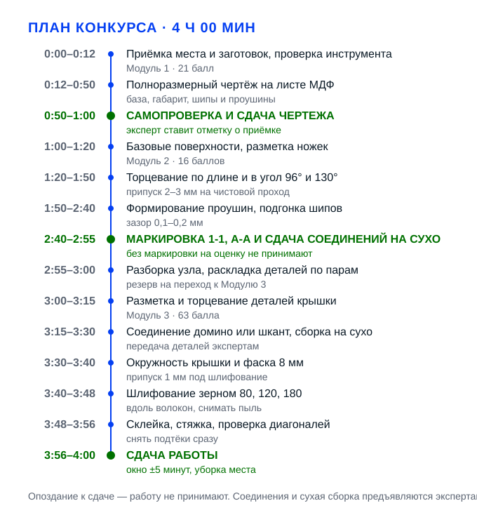
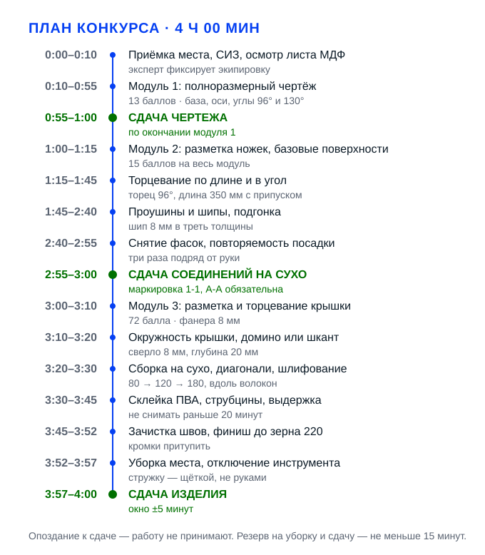
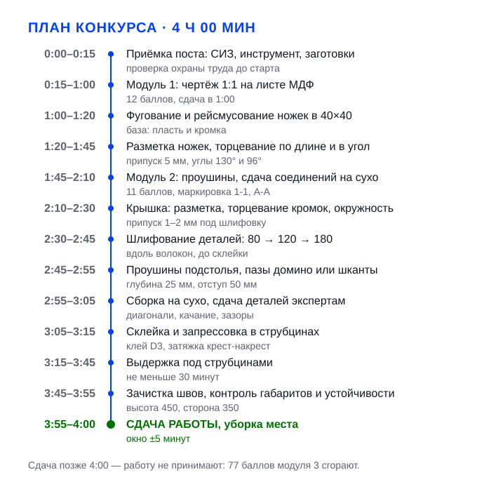

Столярное дело (Р,О)
Задания ниже — официальные файлы «Абилимпикс» (источник: abilympics-russia.ru), разложенные по категориям. Решения написаны по тексту задания, регламенту и критериям оценки; в них указано, что именно проверяет эксперт.
Школьник
14–16 лет, базовый уровень заданияВыдержка из официального конкурсного задания: страницы, относящиеся к категории «Школьник» (стр. 5–7 источника).
Пошаговое решение
Задание для школьников — треугольный столик из массива ольхи и фанеры, и на всю работу отведено четыре часа, за которые можно получить 100 баллов. Конкурс разбит на три модуля: первый час уходит на полноразмерный чертёж на листе МДФ и оценивается в 21 балл, затем два часа на формирование шиповых соединений ножек — 16 баллов, и последний час на сборку, окружность крышки и шлифование — 63 балла. Пропорция говорит сама за себя: почти две трети оценки стоит за то, что делается в конце, но достаётся она только тем, у кого точно размечено и аккуратно выдолблено в начале. Главный эксперт за день до старта вправе внести в задание тридцать процентов изменений — поменять размеры, углы, вид шипового соединения, добавить фаски или окружность, поэтому все размеры берутся исключительно из выданного чертежа, а не из памяти. Отдельно стоит помнить о двух обязательных предъявлениях работы: соединения сдаются экспертам на сухо с маркировкой вида 1-1 или А-А, а детали после сухой сборки показываются до склейки — без этого соответствующие баллы просто не начисляются.

Задача 1. Выполнить полноразмерный чертёж столика на листе МДФМодуль № 1 · 21 балл · 1 час
Первый модуль кажется самым простым, но именно он задаёт геометрию всего изделия: пока на листе МДФ не вычерчен столик в натуральную величину, размечать ножки и крышку нечем. За час нужно принять заготовки, проверить инструмент, нанести на лист контуры всех деталей в масштабе один к одному, проставить размеры и сдать чертёж экспертам без помарок и потёртостей. Ошибка на этом этапе не остаётся на бумаге — она уходит в пиление и долбление и стоит баллов уже в следующих модулях, поэтому чертёж проверяют дважды: сначала сами, потом по нему же сверяют каждую деталь.
Действие 1.1. Принять рабочее место и заготовки
Шаг 1.1.1
Надеваем спецодежду полностью: куртку или комбинезон, закрытую спецобувь, защитные очки поднимаем на лоб, наушники вешаем на шею, волосы убираем под головной убор. Осматриваем верстак: он должен стоять на всех опорах без качания, губки тисков ходить плавно, столешница быть сухой и очищенной от опилок. Инструмент раскладываем справа от себя в порядке обращения — сначала измерительный, затем пилящий, потом стамески и киянка, — чтобы в разгар работы не искать угольник под стружкой.
Спецодежда и защитные очки — прямое требование раздела 6 конкурсного задания, и это не формальность: при долблении стамеской щепа летит в лицо, а при пилении без очков опилки попадают в глаз. Порядок на верстаке тоже оценивается: на модуль 1 отведён ровно час и 21 балл, и каждая минута, потраченная на поиск линейки, вычитается из чертежа, который сдаётся вместе с изделием.
Проверьте три вещи: очки лежат на виду, а не в кармане; на верстаке свободна площадь не меньше листа МДФ; рукоятки инструмента смотрят в вашу сторону. Качните верстак ладонью — люфта и стука быть не должно.
Частая ошибка — надеть очки на затылок и вспомнить о них только после замечания эксперта: время модуля уже пошло, а нарушение по охране труда зафиксировано с первых минут. Вторая — свалить инструмент кучей в центре стола: лист МДФ некуда положить, и его пристраивают на угол, где он прогибается и даёт кривую линию.
Эксперт обходит площадку в первые пять минут и отмечает, в очках ли участник, убраны ли волосы и есть ли на столе свободное место под лист. Замеченное сразу идёт в протокол, поэтому переодеться позже уже не поможет.
Шаг 1.1.2
Принимаем заготовки: массивы ольхи под ножки и фанеру под крышку. Сверяем количество и сечения с ведомостью, каждую заготовку осматриваем с торца и с пласти: трещины, сучки, косослой, следы смолы. Влажность проверяем на ощупь и по цвету — сырая ольха тяжелее и темнее, на срезе блестит. Заготовки с пороком на лицевой стороне откладываем в сторону и сразу показываем эксперту, не дожидаясь старта пиления.
Из заготовки с трещиной или выпадающим сучком чистого шипа не выйдет: при долблении древесина скалывается по сучку, и деталь идёт в брак, а замены после старта нет. Влажная ольха после склейки даёт усадку, соединение ослабевает и стык расходится — а сборка и точность соединений в модуле 3 стоят 63 балла, терять их из-за сырья не имеет смысла.
Проверьте каждую заготовку на просвет по линейке: просвет между ребром линейки и пластью не больше половины миллиметра. Торец должен быть ровным, без скола, а сечение — соответствовать чертежу с точностью до миллиметра.
Взять первую попавшуюся заготовку, не глядя на торец, — сучок вылезет именно в месте проушины. Вторая ошибка — обнаружить дефект после разметки и молча пилить дальше: переделать уже нельзя, а деталь уйдёт в минус по качеству.
Эксперт смотрит, осматривает ли участник заготовки до разметки: это входит в блок подготовительных работ и видно по тому, отложены ли дефектные заготовки в сторону.
Шаг 1.1.3
Проверяем и настраиваем инструмент под чертёж: угольник с прямой колодкой, металлическую линейку не короче 500 мм, рейсмус, циркуль с твёрдой иглой, шило, карандаш ТМ или 2М, ластик. Ножовку проверяем на развод и натяжение — полотно лучковой пилы должно звенеть при щипке и не выгибаться вбок. Стамески шириной 8, 12 и 20 мм осматриваем на фаску: заусенец на лезвии рвёт волокна, а не режет их.
Тупой карандаш даёт линию толщиной в миллиметр и больше, и на чертеже в натуральную величину это превращается в реальную погрешность детали. Разведённая пила уводит пропил от риски на полтора-два миллиметра, а стамеска с заусенцем сминает стенку проушины вместо среза — всё это дефекты, которые эксперт фиксирует по критерию чистоты соединений.
Проведите угольником линию по кромке листа и переверните его: линии должны совпасть без клина. Приложите стамеску фаской к ногтю — она должна слегка цепляться, а не скользить. Полотно пилы при щипке даёт чистый звон, а не глухой стук.
Работать тем, что лежало на верстаке, не проверяя: кривой угольник даёт косой чертёж, и весь столик потом собирается с перекосом. Вторая ошибка — взять слишком широкую стамеску для проушины 8 мм: стенку она не подрезает, а выдавливает.
Эксперт проверяет инструмент до старта и может отвести участника к верстаку с эталонным набором, если инструмент неисправен; в оценку идёт и то, как быстро участник это обнаружил сам.
Действие 1.2. Подготовить лист МДФ и разметить поле чертежа
Шаг 1.2.1
Кладём лист МДФ на верстак лицевой стороной вверх, сдвигаем к заднему краю так, чтобы рабочая зона осталась перед вами, и фиксируем струбцинами по двум углам. Протираем поверхность сухой ветошью: пыль от МДФ держит карандаш хуже, а от жирного пятна линия расплывается. Проверяем, что лист лежит без прогиба — под середину можно подложить ровный брусок.
Чертёж выполняется в масштабе один к одному, и лист — это фактически сборочная оснастка: по нему размечают ножки и крышку. Если лист закреплён только с одной стороны, при нажиме карандашом он пружинит, линия получается волной, и потом по ней же пилят. За помарки и потёртости на чертеже баллы снимают отдельно.
Лист не сдвигается при нажатии ладонью, поверхность сухая и без блеска, струбцины не мешают вести линию по всему полю. Проверьте рукой: под листом не должно быть опилок — они дают бугор и перекос. Прогиб проверяется так: нажмите ладонью в середину — лист не должен пружинить.
Пристроить лист на край стола без крепления и начать чертить: лист уезжает на каждом размере, а стёртые резинкой линии оставляют серые полосы — это и есть потёртости, за которые снимают баллы. Третья по частоте — крепление за самый край: МДФ лопается по кромке.
Эксперт подходит к чертежу в середине модуля и смотрит именно на качество листа: чистоту поля, отсутствие заломов и подтёков. Он же проверяет, закреплён ли лист: сдвинутый лист виден по смазанным линиям.
Шаг 1.2.2
Строим базу чертежа: отступаем от нижнего края листа 40–50 мм, проводим длинную горизонтальную линию — это уровень пола, от неё отсчитывается высота столика. От левого края отступаем столько же и проводим вертикаль — ось симметрии. Обе линии проводим по линейке одним движением, не «дорисовывая» концы, и сразу подписываем тонким шрифтом, чтобы не путать их с контуром деталей.
Все размеры на чертеже привязаны к базе, и если база проведена косо, косая будет вся деталь. Ось симметрии нужна для треугольной крышки: по ней откладывают половину стороны и проверяют равенство углов. Ошибка в базе на один градус даёт на габарите 450 мм смещение почти в восемь миллиметров — это уже видимый перекос.
Проверьте базу угольником с двух концов линии: отклонение не больше половины миллиметра на длине 400 мм. Расстояние от края листа до базы одинаковое слева и справа. Если база ушла, перечертите её сразу, а не тяните ошибку в детали.
Провести базу «на глаз», без отступа от края: потом не хватает места под выносные линии размеров, и размеры ставят прямо по контуру — читать такой чертёж невозможно, а эксперты оценивают именно читаемость.
Эксперт смотрит, есть ли на чертеже явная база и ось: по ним видно, понимает ли участник, от чего он откладывает размеры. Отдельно отмечает, подписаны ли база и ось: без подписи чертёж читается с трудом.
Шаг 1.2.3
Наносим габаритную рамку изделия: по чертежу это высота 450 мм и ширина крышки 350 мм, а глубина столика выходит на 320 мм. Откладываем размеры от базы вверх и в стороны, ставим засечки шилом и только после этого соединяем их линиями по линейке. Каждый размер дублируем на чертеже размерной линией со стрелками, чтобы при пилении не пересчитывать. Рамку обводим тонкой линией, чтобы она не спорила с контуром деталей.
Рамка — это граница, внутри которой живут все детали: ножки, проушины, крышка и окружность. Если габарит сдвинут или занижен, детали на листе не помещаются, и участник либо выносит их за поле, либо уменьшает — а уменьшение размеров без согласования с экспертом считается отклонением от задания.
Сумма размеров по вертикали от базы до верхней линии должна давать 450 мм, по горизонтали — 350 мм. Проверьте линейкой дважды: сначала от левой базы, потом от правой, результаты обязаны совпасть. Если расхождение больше, ищите причину в базе, а не подгоняйте цифры.
Отложить размеры от разных баз — одна ножка получается на пять миллиметров выше другой, столик встаёт с качанием. Вторая ошибка — ставить засечки карандашом толстым грифелем: засечка шириной в миллиметр съедает половину допуска.
Эксперт выборочно промеряет чертёж линейкой: совпадение габарита с заданием — первое, что проверяют в модуле 1. Он же сверяет, есть ли на рамке размерные линии, а не только цифры.
Действие 1.3. Вычертить детали столика в натуральную величину
Шаг 1.3.1
Вычерчиваем ножку: сечение 40 на 40 мм, длина по чертежу 450 мм с учётом того, что верхний торец срезан под углом 96 градусов, а нижний — под 130 градусов, как задано на виде сбоку. Сначала проводим осевую линию ножки, от неё в обе стороны откладываем по 20 мм, затем откладываем длину и строим углы транспортиром от той же оси. Вторую ножку чертим рядом с первой, чтобы видеть зеркальность скосов.
Углы 96 и 130 градусов — не украшение: от них зависит, как ножка встанет к крышке и как ляжет на пол. Если угол на чертеже построен приблизительно, при торцевании в модуле 2 деталь либо не дойдёт до крышки, либо встанет с завалом, и подгонять придётся стамеской на весу, теряя чистоту соединения.
Проверьте построение так: сумма углов наклона торцов и углов схождения должна соответствовать виду сбоку; отложите транспортиром 96 и 130 градусов от осевой и сравните с чертежом задания. Ширина ножки в любом сечении — 40 мм, отклонение не больше половины миллиметра.
Чертить ножку «прямоугольником», а скосы добавлять потом отдельной линией: линии не сходятся в углах, и при разметке заготовки участник переносит не тот контур. Вторая ошибка — забыть про зеркальность и вычертить обе ножки одинаковыми.
Эксперт прикладывает транспортир к чертежу и к готовой детали: расхождение углов больше двух градусов считается дефектом чертежа. Заодно смотрит, вычерчены ли обе ножки: одна деталь на листе — признак недоделанного модуля.
Шаг 1.3.2
Чертим проушины и шипы на ножках: толщина щечки 8 мм, глубина проушины 20 мм, расстояние от торца до первой линии — по чертежу, чтобы шип крышки не выходил наружу. Каждую проушину показываем в двух проекциях — на пласти и на кромке, — иначе при долблении непонятно, с какой стороны отсчитывать глубину. Шип на ответной детали чертим с зазором: наружный размер шипа меньше проушины на 0,1–0,2 мм.
Соединения в модуле 2 оценивают отдельно, 16 баллами, и почти все потери там происходят из-за разметки: проушина, размеченная без второй проекции, получается с перекосом по глубине. Зазор в две десятых миллиметра — это то, что позволяет собрать изделие на сухо и не разбить щечку молотком.
На чертеже у каждой проушины должны читаться три размера: ширина, глубина и расстояние от базового торца. Проверьте, что суммарная толщина щечек и просвета равна 40 мм — сечению ножки. Проверьте также, что проушины всех ножек стоят на одном расстоянии от базового торца.
Начертить проушину только на пласти: долбят на глубину, которую не с чем сверить, и дно получается ступенькой. Вторая ошибка — начертить шип в размер проушины, без зазора: соединение заходит с усилием, щечка трескается.
Эксперт смотрит чертёж соединений до начала долбления: наличие второй проекции и проставленного зазора — признак того, что участник понимает посадку. Если второй проекции нет, эксперт просит объяснить, как участник собирается контролировать глубину.
Шаг 1.3.3
Вычерчиваем крышку: треугольник со стороной 350 мм, углы при основании 130 градусов, верхний угол схождения — по чертежу задания, с фаской 8 мм по верхней кромке. Строим от оси симметрии: половина стороны влево, половина вправо, затем стороны под заданными углами до пересечения. Отдельно показываем места под соединение домино или шкант — по две позиции на каждый стык, с шагом по чертежу.
Крышка — самая заметная часть изделия и самая дорогая по баллам: в модуле 3 сборка и отделка стоят 63 балла из 100. Треугольник с неточными углами не сядет на ножки без щелей, а смещённые позиции шкантов приводят к тому, что при склейке деталь уводит в сторону, и стык расходится.
Проверьте треугольник измерением: обе боковые стороны равны между собой с точностью до миллиметра, расстояние от вершины до основания соответствует высоте, посчитанной по углам. Диагонали от углов основания к серединам противоположных сторон должны пересекаться на оси симметрии.
Строить треугольник по трём сторонам «на глаз», подгоняя углы: основание сходится, а углы плывут, и крышка встаёт с зазором в два-три миллиметра. Вторая ошибка — разметить шканты симметрично на виде сверху, но не перенести их на торец.
Эксперт промеряет углы крышки на чертеже и потом на детали: расхождение между чертежом и изделием фиксируется как несоответствие. Его интересует и то, нанесены ли на крышке позиции домино или шканта, а не только контур.
Шаг 1.3.4
Проставляем размеры: выносные линии выводим за контур на 8–10 мм, размерные — параллельно измеряемому отрезку, стрелки в одну точку, цифры пишем над линией с наклоном и одного размера. Подписываем каждую деталь: ножка передняя правая, ножка задняя левая, крышка, царга. В углу листа ставим штамп с фамилией, компетенцией и датой. Цифры не ставим на линии контура и не пишем поверх других размеров.
Чертёж сдают экспертам, и оценивают его как документ: читаемость размеров, обозначение деталей, отсутствие двойных толкований. Подписанные детали нужны и вам: при сборке на сухо маркировка соединений вида 1-1 или А-А делается именно по этим обозначениям, и эксперт сверяет её с чертежом.
Проверьте, что ни один размер не пересекает другой и все цифры читаются без наклона головы. Пройдите по чертежу пальцем: каждая деталь должна иметь минимум два размера — габаритный и присоединительный.
Ставить размеры внутри контура: цифры сливаются с линиями деталей, и при пилении их не разобрать. Вторая ошибка — не подписать детали, из-за чего при сборке ножки путаются местами и отверстия не совпадают.
Эксперт читает чертёж как чужой: если за минуту не понял, где какая деталь, балл за оформление снижается. Отдельно проверяет штамп: фамилия, компетенция и дата должны быть на листе.
Действие 1.4. Проверить чертёж и сдать его экспертам
Шаг 1.4.1
Делаем самопроверку по трём контрольным точкам. Первая — габарит: сумма размеров по высоте даёт 450 мм, по ширине 350 мм. Вторая — углы: 96 и 130 градусов отложены транспортиром от осевой, а не «на глаз». Третья — соединения: у каждой проушины есть глубина и ширина, у шипа есть зазор. Найденные расхождения исправляем аккуратно, стирая мягким ластиком по одной линии, а не подчистую.
Самопроверка — это единственный момент, когда ошибку можно исправить бесплатно: после сдачи чертежа по нему начинают размечать заготовки, и любая неточность превращается в брак детали. За помарки и потёртости в модуле 1 баллы снимают отдельно, поэтому исправлять нужно чисто, а не заново обводить контур.
Все три проверки пройдены, и в каждой найденной ошибке вы можете показать, от какого размера считали. Полезно пройти чертёж взглядом с расстояния вытянутой руки: кривые линии и косые углы видны именно так.
Оставить исправления на последние минуты и стирать резинкой по мокрому: лист МДФ лохматится, линия ложится рвано, и чертёж выглядит затёртым. Вторая ошибка — не проверять углы вовсе, полагаясь на память.
Эксперт отмечает, исправлял ли участник чертёж осмысленно или переписывал заново: второе видно по слою стёртой поверхности. Он также смотрит, остались ли подчистки в тех местах, где размеры были неверны.
Шаг 1.4.2
Сдаём чертёж по правилам: не снимая лист с верстака до команды, поднимаем руку и ждём эксперта, называем, что именно начерчено и по каким размерам. Если по условиям площадки чертёж сдают по окончании конкурсного дня, лист остаётся на верстаке лицевой стороной вверх и не закрывается инструментом. Перед сдачей убираем с листа стружку и карандашную пыль мягкой кистью.
Передача работы экспертам — отдельный пункт последовательности выполнения задания, и сдавать нужно именно в тот момент, который объявлен: чертёж, сданный в конце дня вместе с изделием, оценивают по тем же 21 баллу, но без возможности что-то пояснить. Спокойный и точный доклад показывает, что участник владеет своим чертежом, а не рисовал его механически.
Чертёж лежит ровно, не задет инструментом, все размеры читаются, эксперт поставил отметку о приёмке. После этого лист можно использовать как оснастку, но нельзя заливать клеем и резать на нём. Проверьте также, что лист не задет инструментом и на нём нет клеевых пятен.
Сдать чертёж, прикрыв его стружкой или заготовками: часть линий не читается, и оценка идёт по тому, что видно. Вторая ошибка — начать пилить прямо на чертеже, оставив на нём пропилы и следы стамески. Третья — сдавать чертёж, не назвав размеров, по которым он построен.
Эксперт принимает чертёж и делает пометку в протоколе; при спорных размерах просит показать, от какой базы они отложены. Если размеры спорные, эксперт просит показать базу и повторно промеряет габарит.
Задача 2. Сформировать шиповые соединения ножекМодуль № 2 · 16 баллов · 2 часа
Два часа отводятся на самую точную часть работы: разметить ножки от базовых поверхностей, отторцевать их по длине и в угол, выдолбить проушины и подогнать соединения так, чтобы они собирались от руки, без молотка. Здесь важно не количество сделанного, а совпадение с чертежом: соединение должно заходить плотно, без зазора по щечке и без скола на выходе стамески. По окончании модуля соединения сдают на сухо, и перед сдачей на них наносится маркировка вида 1-1 или А-А — без неё эксперт не примет работу на оценку.
Действие 2.1. Определить базовые поверхности и разметить ножки
Шаг 2.1.1
Берём заготовку ножки и выбираем базовые поверхности: широкую ровную пласть и смежную с ней кромку, у которых нет скола, волнистости и сучка. Кладём заготовку базовой пластью на верстак, прижимаем к упору и проверяем, качается ли она: качание означает, что пласть винтом. Выбранные базовые поверхности помечаем карандашом с торца двумя чертами в виде уголка — эта пометка не должна стереться до конца модуля.
Всё в столярном деле отсчитывается от базы: если разметку вести от разных поверхностей на разных операциях, деталь получается с перекосом, и это сразу видно на сборке. Определение базовых поверхностей прямо названо в последовательности выполнения задания для школьников, а точность соединений оценивается в модуле 2 шестнадцатью баллами.
Проверьте базу линейкой на просвет: щуп толщиной 0,5 мм не должен проходить между ребром линейки и пластью. Приложите угольник к базовой пласти и кромке — угол должен быть 90 градусов без клина. Проверьте также, что на базовой пласти нет клея: он не даёт рейсмусу лечь ровно.
Взять базой первую попавшуюся сторону, а потом обнаружить на ней скол и перенести разметку на другую: все размеры съезжают на толщину скола, а проушина выходит не по центру. Вторая ошибка — не пометить базу и перепутать её при долблении.
Эксперт смотрит на торец заготовки: помечены ли базовые поверхности и совпадает ли разметка с этой пометкой во всех последующих операциях. Заодно он смотрит, лежит ли заготовка на подкладках, а не прямо на металле верстака.
Шаг 2.1.2
Откладываем от базового торца длину ножки по чертежу и ставим риску шилом, а не карандашом: шило оставляет след глубиной в доли миллиметра, по которому пила идёт точнее. Рейсмусом переносим риску на все четыре стороны, держа колодку прижатой к базовой пласти. Сразу же отмечаем, какой торец верхний, а какой нижний, потому что скосы у них разные. Риску ведём одной линией, без повторных проходов рейсмусом.
Длина ножки — размер, от которого зависит, встанет ли столик ровно на пол: разница в два миллиметра между ножками превращается в качание, а качание — в минус по критерию сборки изделия. Рейсмус, прижатый к базе, даёт одинаковую риску на всех сторонах, а карандаш от руки — нет.
Риска на всех четырёх сторонах замыкается в непрерывную линию без уступа на углу. Проверьте рулеткой расстояние от базового торца до риски на каждой стороне — расхождение не больше половины миллиметра.
Ставить риску карандашом и на одной стороне: при торцевании пила уходит по линии на глаз, и торец получается косым. Вторая ошибка — отложить длину от небазового торца, где уже есть скол. Третья — вести рейсмус от кромки, а не от пласти: риска уходит на толщину скоса.
Эксперт проверяет разметку до пиления: замкнутая риска по периметру — признак того, что участник работает рейсмусом, а не на глаз. Если риска на одной стороне прерывается, эксперт просит объяснить, где участник её терял.
Шаг 2.1.3
Размечаем проушины: от базовой пласти откладываем толщину щечки 8 мм, затем просвет и вторую щечку, следя за тем, чтобы сумма снова дала 40 мм. Глубину 20 мм отбиваем рейсмусом от торца и дублируем риску на кромке — именно по ней стамеска остановится на нужной глубине. Ширину проушины переносим с чертежа угольником, держа его колодку на базовой кромке.
Проушина, размеченная только с одной стороны, выдалбливается на разную глубину: дно получается ступенькой, шип садится с перекосом, и соединение приходится подгонять стамеской, срезая лишнее. Двойная разметка по глубине — единственный способ остановиться вовремя, потому что изнутри проушины дно не видно.
Проверьте: ширина проушины плюс две толщины щечки равна 40 мм; риска глубины замкнута на пласти и на кромке; линии параллельны базе с точностью до половины миллиметра. Проверьте также, что риска глубины не заходит на лицевую пласть, где останется след.
Разметить глубину только на пласти: стамеска проходит на 24–25 мм вместо 20, и стенка ножки пробивается насквозь. Вторая ошибка — разметить проушину по центру, не проверив, что щечки получаются одинаковыми.
Эксперт прикладывает линейку к размеченной проушине: симметрия относительно оси и наличие риски глубины проверяются у всех четырёх ножек. Отдельно он смотрит на ширину просвета: она должна совпадать с толщиной ответного шипа.
Шаг 2.1.4
Переносим разметку на остальные ножки, не повторяя её заново от руки, а используя первую ножку как шаблон: накладываем её базовой пластью на следующую заготовку, выравниваем торцы и переносим риски шилом по линейке. Пару ножек размечаем зеркально — на них проушина смещена в другую сторону, и это видно на чертеже по расположению шипов крышки. Каждую перенесённую риску сразу подписываем номером ножки.
Четыре одинаковые ножки получаются только тогда, когда разметка переносится, а не повторяется: при повторной разметке от руки разброс между деталями достигает миллиметра, и при сборке на сухо одна ножка встаёт с зазором. Зеркальные пары нужны потому, что столик треугольный, и ножки стоят под разными углами.
Приложите размеченные ножки друг к другу базовыми пластями: риски должны совпасть по всей длине, как одна линия. Сверьте попарно — две ножки с проушиной влево, две с проушиной вправо. Проверьте также, что метки базовых поверхностей на всех четырёх деталях смотрят в одну сторону.
Разметить все четыре ножки «по памяти»: к третьей детали участник сбивается на миллиметр, и именно эта ножка не входит в соединение. Вторая ошибка — сделать все ножки незеркальными. Третья — переносить разметку карандашом по карандашу: линия утолщается и плывёт.
Эксперт выкладывает ножки в ряд и смотрит, совпадают ли риски: это самая быстрая проверка серийности работы. Его интересует и то, подписаны ли ножки, чтобы пары не путались при сборке.
Действие 2.2. Отторцевать заготовки по длине и в угол
Шаг 2.2.1
Закрепляем заготовку в тисках через деревянные подкладки, чтобы не помять базовую пласть, и запиливаем торец по риске с припуском 2–3 мм на чистовое торцевание. Пилу ведём вдоль полотна, короткими движениями на себя, начиная с неглубокого пропила по кромке на себя, чтобы полотно не убежало. Направитель ставим так, чтобы полотно шло по его щеке, а не тёрлось о риску.
Припуск нужен потому, что после первого отпила торец почти всегда получается с небольшим уклоном, и только второй, чистовой проход даёт плоскость. Пиление сразу в размер — самая частая причина короткой ножки: снятые два миллиметра уже не вернуть, а длина входит в проверяемые размеры.
Пропил идёт ровно по риске, не отклоняясь в сторону на всю глубину. Проверьте угольником: торец перпендикулярен базовой пласти, просвет не больше половины миллиметра. Проверьте также, что пропил не заходит на лицевую пласть: след от полотна останется на виду.
Пилить без направителя и с сильным нажимом: полотно уводит в сторону на полтора миллиметра, торец получается косым, и деталь уходит в брак по длине. Вторая ошибка — пилить без подкладок, оставив на базовой пласти вмятины от губок тисков.
Эксперт смотрит на характер пропила: ровные, параллельные риски на торце говорят о контроле над пилой, рваные и волнистые — о спешке. Он же смотрит, зажата ли деталь через подкладки: вмятины от губок тисков считаются дефектом.
Шаг 2.2.2
Торцуем в угол: по чертежу верхний торец срезается под 96 градусов, нижний — под 130 градусов. Угол откладываем транспортиром от базовой пласти, а не от произвольной стороны, и проводим линию по угольнику. Заготовку закрепляем так, чтобы линия среза была вертикальна и хорошо видна с обеих сторон, — только тогда пропил пойдёт по ней, а не рядом. Пропил ведём с двух сторон, поворачивая заготовку, а не допиливая на весу.
Скос на торце определяет, как ножка ляжет к крышке и на пол: при ошибке в два градуса на длине 450 мм торец уходит почти на пятнадцать миллиметров, и стык с крышкой получается с явным клином. Изменение углов, кстати, входит в те тридцать процентов, которые главный эксперт может внести в задание, поэтому углы берут только с выданного чертежа.
Проверьте транспортиром угол между базовой пластью и плоскостью торца: отклонение не больше одного градуса. Приложите ножку к линии крышки на чертеже — торец должен совпасть с контуром без клина. Если угол плывёт, проверьте транспортир: сбитая шкала даёт ошибку в два градуса.
Отложить угол от кромки вместо пласти: срез получается в другой плоскости, и ножка встаёт с разворотом. Вторая ошибка — пилить по линии, нанесённой только с одной стороны, и увести пропил на выходе. Третья — пилить по линии, нанесённой карандашом с нажимом: линия толще допуска.
Эксперт прикладывает транспортир к готовому торцу и сверяет с чертежом: углы входят в проверяемые размеры модуля 2. Он также отмечает, снят ли скос по всей ширине торца, а не только у кромки.
Шаг 2.2.3
Снимаем припуск до чистового размера вторым проходом и сразу проверяем результат по четырём параметрам: длина, оба угла, перпендикулярность торца к базовой пласти, отсутствие скола на выходе пилы. Скол снимаем стамеской движением от края к центру, а не от центра к краю, иначе волокно вырывается глубже. Готовые ножки ставим вертикально в стороне от верстака, чтобы не задеть инструментом.
Отторцованные детали — это уже заготовки под долбление, и любая неточность здесь не исправляется: проушину долбят от торца, и если торец косой, вся проушина получается с перекосом. Чистовой проход занимает минуты, а переделка детали невозможна — второй заготовки на площадке нет.
Все четыре ножки одинаковы по длине с точностью до половины миллиметра, углы совпадают, сколов на торцах нет. Поставьте ножки торцами на ровную плиту — просвет под каждой должен быть одинаковым. Проверьте также, что торцы не завалены на углах: завал виден по просвету у линейки.
Оставить скол на выходе пилы и надеяться, что его закроет крышка: скол выходит на лицевую сторону и оценивается как дефект обработки. Вторая ошибка — не проверить длину после второго прохода. Третья — ставить детали торцом на стружку: на торце остаются вмятины.
Эксперт выборочно измеряет длину и углы штангенциркулем и транспортиром непосредственно перед сдачей соединений. Он же смотрит, как участник хранит готовые детали: на подставке или в общей куче.
Действие 2.3. Сформировать проушины
Шаг 2.3.1
Запиливаем проушину по размеченным линиям: заготовку закрепляем в тисках под углом так, чтобы линия пропила была вертикальна и её было видно сверху, полотно ставим на линию со стороны будущего отхода и делаем несколько коротких движений на себя, пока не образуется направляющий пропил глубиной 3–4 мм. Затем доводим пропил до риски глубины, не переходя её: дно проушины формирует стамеска, а не пила.
Пропил задаёт стенки проушины, и если он уйдёт от риски, стенка получится наклонной, а шип сядет с люфтом. Глубина пропила чуть меньше нужной оставляет стамеске работу по чистому дну, а не по рваному выходу пилы — это и есть та чистота соединения, за которую дают баллы.
Пропил идёт точно по риске с обеих сторон, стенки вертикальны, между пропилами остаётся ровный брусок удаляемой древесины. Проверьте угольником: отклонение стенки от вертикали не больше половины миллиметра на глубину 20 мм.
Запилить с нажимом и без направляющей щеки: полотно уводит внутрь проушины, и щечка получается толщиной 6 мм вместо 8 — при подгонке она ломается. Вторая ошибка — пропилить сразу на всю глубину и зацепить дно.
Эксперт осматривает стенки пропила на просвет: ровная, без ступеньки стенка и есть показатель аккуратной запиловки. Он также проверяет, не выходит ли пропил за риску глубины: выход пилы на дно проушины недопустим.
Шаг 2.3.2
Выдалбливаем проушину стамеской шириной 8 мм: ставим лезвие фаской внутрь, на 1–1,5 мм отступив от линии пропила, и наносим удар киянкой строго вертикально. Первый проход — на глубину 4–5 мм по всей длине проушины, второй и третий — снова по 4–5 мм, и только последним проходом срезаем остаток до риски глубины. Выбираем древесину от середины к краям, чтобы волокно не скалывалось на щечку.
Послойное долбление — правило, а не осторожность: стамеска, заглублённая сразу на 20 мм, работает как клин и раскалывает щечку по волокну. Кроме того, при тонком слое легче удержать вертикальность стенки, а именно её проверяют при подгонке шипа. Чистота соединения в модуле 2 оценивается отдельно от размеров.
Дно проушины ровное, без ступеньки, глубина 20 мм проверяется штангенциркулем или линейкой с упором. Стенки вертикальны, щечки целы, сколов по краям нет. Проверьте также, что дно проушины параллельно базовому торцу: перекос виден по просвету.
Долбить одним ударом на всю глубину: щечка трескается по волокну, и деталь идёт в брак целиком. Вторая ошибка — работать стамеской без киянки, нажимая ладонью: лезвие соскальзывает с торца и режет руку.
Эксперт стоит рядом во время долбления и смотрит на хват стамески, направление удара и на то, выбрана ли стружка со стола, а не сдута. Он же следит, чтобы стружка убиралась щёткой: сдувать её ртом прямо запрещено.
Шаг 2.3.3
Зачищаем проушину: снимаем стамеской задиры со стенок движением вдоль волокна, подрезаем углы дна, чтобы не осталось ступеньки, и проверяем, что щечки одинаковы по толщине. Крошки и стружку выметаем щёткой, а не сдуваем. Готовую проушину примеряем к размеченному на чертеже шипу: шип должен входить от руки на две трети глубины и дальше идти с лёгким натягом.
Задиры на стенках не дают шипу сесть на всю глубину, и соединение держится на верхней кромке — при склейке оно разойдётся. Одинаковая толщина щечек — условие прочности: тонкая щечка при сборке ломается, а это уже брак детали, который не исправляется.
Штангенциркулем проверьте толщину обеих щечек — разница не больше 0,3 мм. Шип входит в проушину до риски глубины без молотка, но и не выпадает при переворачивании детали. Проверьте также, что шип не качается в проушине: люфт по ширине не больше десятой доли миллиметра.
Зачистить стенки «на глаз» и оставить уступ у дна: шип упирается в уступ, зазор по торцу получается до двух миллиметров, и соединение выглядит недоделанным. Вторая ошибка — сдувать стружку из проушины ртом, это прямо запрещено инструкцией.
Эксперт продувает или освещает проушину и смотрит на дно: ровное дно без уступа считается признаком аккуратной работы. Он также смотрит, подрезаны ли углы дна: неподрезанный угол не даёт шипу сесть.
Шаг 2.3.4
Снимаем фаску с входной кромки проушины, чтобы при сборке волокно не заминалось: проходим стамеской под углом 45 градусов на ширину 0,5 мм, буквально снимая заусенец. Затем повторяем ту же операцию на всех четырёх ножках и раскладываем их по парам согласно маркировке на чертеже. На этом формирование проушин закончено, и начинается подгонка. Фаску снимаем одним движением, не возвращаясь на то же место.
Микрофаска на входе — то, что отличает чистое соединение от собранного с замятием: без неё при первом же заходе шипа волокно поднимается и стык выглядит разбитым. Разложенные по парам ножки экономят время на подгонке, а время в этом модуле расписано по минутам.
Кромка проушины без заусенца — проведите по ней пальцем, он не должен цепляться. Все четыре проушины одинаковы по глубине и ширине, пары разложены и подписаны. Проверьте также, что на кромке не осталось заусенца от стамески: он цепляется за ткань.
Снять фаску слишком широко: проушина «раскрывается», и шип садится с видимым зазором по кромке. Вторая ошибка — снимать фаску на уже собранном соединении, когда детали склеены. Третья — снимать фаску на глаз, из-за чего на четырёх ножках она разной ширины.
Эксперт смотрит на кромку проушины при боковом свете: поднятое волокно видно сразу и считается дефектом чистоты. Он же проверяет, разложены ли ножки по парам: это видно по подписям на торцах.
Действие 2.4. Подогнать соединения, промаркировать и сдать на сухо
Шаг 2.4.1
Подгоняем шип к проушине: снимаем стамеской или напильником тонкие слои с щечек шипа, каждый раз примеряя деталь, и добиваемся зазора 0,1–0,2 мм — шип входит с усилием руки и держится сам. Торец шипа не должен упираться в дно раньше, чем сомкнутся заплечики: если упирается, снимаем с торца, а не с щечек. Подгоняем по одной детали за раз, не перескакивая между парами.
Зазор в две десятых миллиметра — это посадка, при которой соединение собирается без молотка и держится за счёт трения. Слишком плотная посадка приводит к тому, что при склейке щечка лопается, слишком свободная — к люфту и щели, и то и другое фиксируется как дефект соединения.
Соединение собирается от руки до смыкания заплечиков, зазор по щечке не прощупывается ногтем, деталь держится в проушине при переворачивании. Проверьте угольником угол между ножкой и ответной деталью — 90 градусов без клина.
Подгонять «до молотка»: сначала соединение заходит, а на склейке щечка трескается, и вся работа по ножке идёт в брак. Вторая ошибка — снимать с щечек, когда упирается торец: зазор по заплечику остаётся, и стык видно на просвет.
Эксперт пробует соединение рукой: собирает и разбирает его сам, отмечая, есть ли люфт и смыкаются ли заплечики. Он также отмечает, снимает ли участник слои понемногу или сразу режет на глубину.
Шаг 2.4.2
Наносим маркировку соединений: на обеих деталях каждой пары ставим одинаковые обозначения — 1-1, 2-2, А-А — так, чтобы при разборке деталь вернулась точно на своё место. Пишем карандашом на нелицевых сторонах, у самого стыка, и дублируем пометку на чертеже рядом с соответствующей деталью. Маркировка ставится после подгонки, но до снятия деталей с верстака.
Маркировка прямо требуется условиями сдачи: при передаче соединений на сухо экспертам участник обязан её сделать, иначе эксперты не смогут проверить, какая деталь с какой подогнана. Практический смысл тоже велик: после шлифования и перед склейкой детали легко перепутать, и подогнанная пара разъедется на полмиллиметра.
Каждая пара имеет свою метку, метки на деталях и на чертеже совпадают, надписи читаются и не стёрты. Проверьте, разложив детали: ни одна метка не повторяется на двух разных парах. Проверьте также, что метки не закрыты шлифовальной пылью и читаются на тёмном фоне.
Подписать все детали одной меткой «1»: при сборке пары путаются, соединения не сходятся, и участник начинает подгонять заново, теряя время модуля 3. Вторая ошибка — поставить метку на лицевую сторону, где она останется видимой.
Эксперт сверяет маркировку на соединениях с чертежом и отмечает в протоколе, что обозначения нанесены до сдачи, а не после замечания. Он же смотрит, есть ли метки на обеих деталях пары, а не только на одной.
Шаг 2.4.3
Собираем узел на сухо: соединяем ножки с ответными деталями без клея, ставим на ровную плиту и проверяем, стоит ли конструкция без качания и совпадают ли диагонали. Затем аккуратно разбираем, раскладываем детали в порядке сборки и поднимаем руку: соединения готовы к передаче экспертам. Сдаём именно в тот момент, когда модуль закончен, а не в конце дня.
Сборка на сухо — единственная проверка, которая показывает, сойдётся ли изделие после склейки: клей уже не даст поправить перекос, а разобрать схваченный узел нельзя без повреждения деталей. Сдача соединений на оценку прописана в задании отдельным пунктом после формирования проушин, и баллы за них ставят до сборки.
Узел собирается без зазоров в стыках, диагонали отличаются не больше чем на один миллиметр, качания нет. Все детали разложены по парам и подписаны. Проверьте также, что заплечики сомкнуты по всей длине: щель на просвет недопустима.
Собрать на сухо с усилием и не проверить диагонали: перекос в два миллиметра незаметен на глаз, но после склейки он останется навсегда и снимет баллы за точность сборки. Вторая ошибка — сдать соединения, не разобрав узел: эксперт не увидит посадку шипа.
Эксперт собирает и разбирает узел при участнике, проверяет посадку, маркировку и отсутствие сколов, после чего ставит оценку по модулю 2. Он также проверяет, нет ли скола на выходе шипа: скол виден на лицевой стороне ножки.
Задача 3. Собрать столик, отделать и сдать изделиеМодуль № 3 · 63 балла · 1 час
Последний час самый дорогой: сборка, отделка и сдача изделия оцениваются в 63 балла из 100, то есть почти две трети всей оценки. За этот час нужно разметить и отторцевать детали крышки, сформировать проушины, поставить соединение домино или шкант, собрать на сухо и показать экспертам, затем выпилить окружность крышки, отшлифовать всё до гладкости и склеить столик. Работа идёт строго по порядку: сначала сухая сборка и сдача деталей, и только потом клей, потому что после клея исправить уже ничего нельзя.
Действие 3.1. Разметить и отторцевать детали крышки
Шаг 3.1.1
Кладём фанеру для крышки на верстак, базовой кромкой прижимаем к упору и переносим с чертежа контур треугольника: основание 350 мм, боковые стороны под углами 130 градусов, ось симметрии от середины основания. Разметку ведём от базы, а не от края листа, и ставим шилом засечки в трёх вершинах. Сразу отмечаем лицевую сторону крышки — на фанере она выбирается по лучшему шпону.
Крышка — лицевая деталь изделия, и её контур определяет весь внешний вид столика. При разметке от края листа, а не от базы, к ошибке контура добавляется коси́на самого листа, и треугольник получается с разными сторонами. Лицевая сторона нужна для того, чтобы шлифовать и снимать фаску именно на ней.
Обе боковые стороны равны с точностью до миллиметра, основание 350 мм, вершины лежат на оси симметрии. Проверьте, перевернув деталь на 180 градусов: контур должен совпасть сам с собой. Проверьте также, что вершина не выходит за кромку листа: иначе контур не выпилить.
Разметить треугольник по краю листа: коси́на фанеры даёт расхождение сторон до трёх миллиметров, и крышка встаёт с перекосом относительно ножек. Вторая ошибка — не отметить лицевую сторону и потом шлифовать не ту.
Эксперт сверяет контур крышки с чертежом линейкой: равенство сторон и положение вершины — первые проверяемые размеры модуля 3. Он же смотрит, отмечена ли лицевая сторона: на фанере её выбирают до разметки.
Шаг 3.1.2
Отторцовываем детали крышки в угол: пилим по размеченным линиям с припуском 1–2 мм, закрепив фанеру струбцинами и подложив подкладку, чтобы не вырвать шпон на выходе пилы. Полотно ведём под углом к поверхности, а не вертикально по фанере: тонкий лист иначе скалывается по кромке. После первого прохода снимаем припуск до линии шлифовальным бруском на ровной подкладке.
Фанера скалывается на выходе пилы сильнее массива, и скол на кромке крышки не спрятать — он выходит на лицевую сторону и оценивается как дефект обработки. Припуск и последующее снятие бруском дают ровную кромку без вырывов, а ровная кромка нужна и для соединения с ножками.
Кромка ровная, без сколов и бахромы шпона, углы соответствуют разметке. Приложите линейку к каждой стороне: просвет не больше половины миллиметра. Проверьте также, что кромка перпендикулярна плоскости: угольник не должен показывать клин.
Пилить вертикально тонкую фанеру без подкладки: на выходе вырывается кусок шпона размером с ноготь, и деталь приходится переразмечать. Вторая ошибка — снимать припуск напильником «на весу», заваливая кромку.
Эксперт осматривает кромки крышки при боковом свете: сколы шпона видны сразу и снимают баллы за качество обработки. Он также отмечает, снят ли припуск бруском на подкладке, а не напильником на весу.
Шаг 3.1.3
Формируем проушины на деталях крышки по той же схеме, что и на ножках: размечаем щечки 8 мм и глубину 20 мм, запиливаем по линиям, выдалбливаем стамеской 8 мм послойно по 4–5 мм и зачищаем дно. Отличие в том, что фанера требует более острого инструмента: тупая стамеска рвёт шпон и оставляет лохматый край. Долбим от края к середине, чтобы не отколоть наружный слой.
Проушина в фанере — самое хрупкое место изделия: шпон не имеет запаса на растяжение, и скол на кромке проушины видно на лицевой стороне. Чистота соединения оценивается вместе со всей сборкой, а сколотая проушина делает деталь непригодной — заменить её нечем.
Щечки одинаковы по толщине с разницей не больше 0,3 мм, дно ровное, глубина 20 мм, сколов шпона по кромке нет. Шип входит от руки до риски. Проверьте также, что шип садится без заминания шпона по кромке.
Долбить фанеру с сильным ударом: наружный слой шпона отслаивается полосой, и проушина выглядит разбитой. Вторая ошибка — зачищать кромку напильником поперёк волокон, поднимая ворс. Третья — долбить фанеру без подкладки: на обратной стороне появляется бугор.
Эксперт смотрит на кромку проушины в крышке особенно внимательно: это лицевая деталь, и дефект на ней заметнее, чем на ножке. Он же проверяет, совпадают ли проушины крышки с проушинами ножек по расположению.
Шаг 3.1.4
Проверяем геометрию деталей крышки до сборки: укладываем треугольник на чертёж лицевой стороной вверх и сверяем контур, затем промеряем углы транспортиром и расстояния между центрами проушин. Если контур совпал с чертежом, крышка сядет на ножки без щелей. Заодно проверяем, что проушины в ножках и в крышке расположены зеркально и не окажутся с одной стороны.
Сверка с чертежом в натуральную величину — это то, ради чего модуль 1 делался первым: наложенная деталь показывает расхождение сразу, без вычислений. Зеркальность проушин проверяется именно здесь, потому что после установки шкантов деталь уже не развернуть.
Контур детали совпадает с чертежом по всем трём сторонам, углы в допуске одного градуса, проушины парные. Отклонение видно на просвет между деталью и линией чертежа. Проверьте также, что деталь не качается на чертеже: качание означает винт.
Пропустить сверку с чертежом и узнать о перекосе при сборке на сухо: время на исправление уже уйдёт из шлифования и склейки. Вторая ошибка — сделать проушины в крышке с той же стороны, что и в ножках.
Эксперт видит, накладывает ли участник деталь на чертёж: это самый быстрый и самый убедительный способ самоконтроля. Он также смотрит, что участник делает при расхождении: исправляет или надеется на сборку.
Действие 3.2. Сформировать соединение домино или шкант и собрать на сухо
Шаг 3.2.1
Размечаем позиции соединения домино или шканта: по чертежу на каждый стык приходится по две позиции, отступ от кромки — половина толщины детали плюс два миллиметра. Разметку наносим на обе соединяемые детали одновременно, прижав их друг к другу струбциной и проведя общую риску через стык — так отверстия совпадут гарантированно. Центры отмечаем шилом с углублением, чтобы сверло не ушло.
Соединение домино или шкант держит крышку на ножках и не даёт ей провернуться. Если отверстия на двух деталях размечать по отдельности, ошибка в полмиллиметра на сторону превращается в миллиметр несовпадения, и деталь при сборке уводит. Общая риска через сжатые детали — единственный способ получить совпадение по определению.
Центры на обеих деталях лежат на одной линии при наложении, отступы от кромки одинаковы, кернение видно. Проверьте, приложив детали друг к другу без соединителей: отверстия должны смотреть точно друг в друга.
Размечать детали по очереди, перекладывая линейку: позиции съезжают, и при сборке шкант не входит. Вторая ошибка — ставить соединение слишком близко к кромке, где фанера скалывается при сверлении. Третья — кернить центр карандашом: сверло уходит в сторону на полмиллиметра.
Эксперт проверяет совпадение отверстий наложением деталей: смещение больше половины миллиметра считается дефектом разметки. Он же отмечает, нанесены ли отступы от кромки, а не только сами центры.
Шаг 3.2.2
Выполняем отверстия под домино или шкант на нужную глубину: для шканта берём сверло диаметром 8 мм с ограничителем глубины или наклеенной на сверло полоской изоленты, сверлим строго перпендикулярно плоскости детали, на глубину чуть больше половины длины шканта — 12 мм в каждую деталь при шканте 24 мм. Сверло подводим на малых оборотах, без нажима, и выводим, не меняя угла.
Глубина отверстия с двух сторон должна давать шканту посадку без упора в дно: если шкант упирается, детали не сомкнутся, и между ними останется щель. Перпендикулярность важнее диаметра: наклонное отверстие уводит деталь в сторону при сборке, и стык расходится на два-три миллиметра.
Отверстия одинаковы по глубине, шкант входит до половины и не достаёт дна на 1–2 мм, при вставленном шканте деталь садится без зазора. Проверьте угольником угол сверления по стенке отверстия. Проверьте также, что вокруг отверстия не поднят шпон: он скалывается при сборке.
Сверлить на глаз без ограничителя глубины: сверло проходит деталь насквозь, и на лицевой стороне крышки появляется выходное отверстие. Вторая ошибка — сверлить с сильным нажимом, из-за чего шпон скалывается вокруг отверстия.
Эксперт осматривает отверстия изнутри и проверяет глубину шкантом: выход сверла на лицевую сторону — грубый дефект, который видно сразу. Он также смотрит, размечены ли отверстия с обеих сторон детали, а не на глаз.
Шаг 3.2.3
Ставим соединение на сухо: вставляем шканты или домино в отверстия одной детали, насаживаем вторую и сжимаем руками, следя за тем, чтобы зазоры по стыку были одинаковы по всей длине. Проверяем, что детали сомкнулись без зазора и крышка не развернулась относительно ножек. Если соединение идёт туго, вынимаем шкант, слегка уменьшаем его диаметр шлифовальной шкуркой и повторяем примерку.
Сухая сборка показывает, сойдётся ли изделие после нанесения клея: клей работает как смазка и одновременно разбухает древесину, поэтому деталь, которая шла туго на сухо, с клеем может заклинить на половине пути. Именно на этом этапе задание требует передать детали экспертам на оценку.
Стык сомкнут по всей длине, зазор не прощупывается ногтем, крышка стоит без разворота, диагонали от углов крышки до противоположных ножек равны с точностью до миллиметра. Проверьте также, что шкант не упирается в дно: иначе останется щель в миллиметр.
Забивать шкант молотком: он сминается, а посадочное отверстие разбивается, и соединение теряет прочность. Вторая ошибка — не проверять разворот крышки и обнаружить перекос только после склейки. Третья — ставить шкант без клея и надеяться, что он держится за счёт трения.
Эксперт собирает узел сам и смотрит на зазоры по стыку: равномерный тонкий шов без клина — признак хорошей подгонки. Он же смотрит на посадку домино: оно должно входить от руки, без киянки.
Шаг 3.2.4
Разбираем узел, раскладываем детали по маркировке и передаём их экспертам на оценку: поднимаем руку, называем, что собрано на сухо, показываем посадку и маркировку. Пока эксперт смотрит, детали лежат на верстаке лицевой стороной вверх, в порядке сборки, без инструмента сверху. После оценки возвращаемся к работе с того места, на котором остановились.
Передача деталей на оценку после сухой сборки прописана в последовательности выполнения задания для школьников отдельным пунктом, и это единственный момент, когда эксперт видит посадку соединения изнутри. Если детали уже склеены, проверить посадку невозможно, и часть баллов модуля 3 участник теряет независимо от качества изделия.
Эксперт осмотрел узел, отметил маркировку и посадку, детали возвращены. Проверьте, что после осмотра ничего не перепутано и метки на месте. Проверьте также, что метки не стёрлись во время осмотра: их восстанавливают сразу.
Склеить изделие, не показав сухую сборку: баллы за посадку соединений не начисляются, потому что проверять уже нечего. Вторая ошибка — держать детали в куче, из-за чего эксперт не видит пары. Третья — показывать узел, собранный с усилием: эксперт отметит это как дефект посадки.
Эксперт фиксирует в протоколе факт предъявления сухой сборки — это отдельная строка критериев модуля 3. Он же сверяет количество предъявленных деталей с чертежом.
Действие 3.3. Сформировать окружность крышки
Шаг 3.3.1
Находим центр окружности крышки: по чертежу он лежит на оси симметрии, на расстоянии, указанном от основания. Отмечаем центр шилом, ставим ножку циркуля в углубление и проводим окружность нужного радиуса, проверяя, что она целиком помещается на детали и не задевает проушины. Второй ножкой циркуля ведём с одинаковым нажимом, поворачивая его за головку, а не за ножки.
Окружность — это то, что отличает столик-треугольник от простой табуретки, и в тридцать процентов изменений задания как раз входит дополнение окружности. Если центр смещён, окружность выходит на кромку и срезает часть соединения, и деталь приходится переделывать целиком.
Расстояние от центра до контура одинаково во всех направлениях, проверяется линейкой в четырёх точках: расхождение не больше половины миллиметра. Окружность не пересекает линии проушин. Проверьте также, что окружность не выходит на фаску: контур должен остаться внутри детали.
Провести окружность от руки или перенести центр «примерно»: контур получается овальным, и при шлифовании это видно на просвет. Вторая ошибка — поставить циркуль слишком близко к кромке, где шпон скалывается.
Эксперт измеряет радиус от центра в двух направлениях: разница больше миллиметра считается отклонением от чертежа. Он же смотрит, отмечен ли центр шилом, а не карандашом: иначе циркуль уходит.
Шаг 3.3.2
Выпиливаем по контуру окружности: закрепляем деталь струбцинами на подкладке, чтобы пропил не зажало, и ведём пилу по линии, отступая от неё на 1 мм — этот припуск снимется шлифованием. Деталь поворачиваем плавно, не меняя угла полотна, и на выходе поддерживаем отрезанную часть рукой, чтобы она не отломилась и не вырвала шпон. Дугу пилим короткими движениями, следя за линией впереди полотна.
Припуск в миллиметр оставляет возможность исправить неровность шлифованием, а пиление точно по линии почти всегда даёт волну, которую уже не убрать. Поддержка отрезанной части нужна из-за тонкой фанеры: без неё на выходе образуется скол, а он на лицевой стороне крышки.
Кромка идёт по линии с отклонением не больше миллиметра, сколов нет, плоскость детали не поведена. Проверьте, приложив деталь к чертежу: контур не выходит за линию. Проверьте также, что отрезанная часть не вырвала шпон на кромке.
Пилить точно по линии без припуска: малейшая волна остаётся на кромке, и шлифовать её приходится до уменьшения диаметра. Вторая ошибка — пилить, не закрепив деталь, из-за чего пропил зажимает полотно.
Эксперт осматривает кромку окружности: сколы и бахрома шпона видны при первом же взгляде и снижают оценку отделки. Он также отмечает, поддерживает ли участник отрезанную часть рукой при выходе пилы.
Шаг 3.3.3
Зачищаем кромку окружности: шлифовальным бруском на ровной подкладке снимаем припуск до линии, ведя брусок вдоль кромки, а не поперёк, чтобы не завалить её. Затем снимаем фаску 8 мм по верхней кромке, как указано на чертеже, движением от края к центру, и проверяем, что фаска равномерна по всей дуге. После этого кромка должна быть гладкой на ощупь и без ворса.
Фаска 8 мм — не только декор: она снимает острое ребро, которое скалывается при эксплуатации, и задаёт изделию законченный вид. Неравномерная фаска сразу читается как небрежность, а кромка с ворсом не принимает морилку и лак ровно. Кроме того, ровная фаска проверяется на ощупь: завал читается пальцем раньше, чем глазом.
Ширина фаски одинакова по всей дуге — проверьте штангенциркулем в трёх точках, разброс не больше 0,5 мм. Кромка гладкая, без сколов и подъёма шпона. Проверьте также, что фаска не заходит на плоскость крышки: граница должна быть чёткой.
Снимать фаску стамеской на весу: на фанере это даёт сколы и ступеньки, а исправить их можно только уменьшением детали. Вторая ошибка — шлифовать кромку поперёк, заваливая её в овал. Третья — шлифовать кромку шкуркой в руке: она округляет фаску неравномерно.
Эксперт проводит пальцем по кромке и смотрит на фаску с торца: равномерность и гладкость проверяются именно так. Он же смотрит, снята ли фаска по всей дуге, а не только на видимой части.
Действие 3.4. Отшлифовать детали
Шаг 3.4.1
Начинаем шлифование с зерна 80: обёртываем шлифовальную шкурку вокруг деревянного бруска и ведём вдоль волокон, снимая следы пилы, риски от рейсмуса и задиры. Ножки шлифуем по длине, крышку — по направлению шпона, каждый раз меняя направление только после того, как убраны следы предыдущего зерна. Нажим средний, без фанатизма: перегрев от трения поднимает ворс.
Шлифование идёт ступенями, и первая ступень самая грубая: её задача — убрать следы инструмента, а не сделать поверхность гладкой. Если пропустить грубое зерно и сразу взяться за 180, риски от пилы останутся под тонким слоем, и после отделки они проявятся полосами.
На поверхности не остаётся рисок от пилы и рейсмуса, она матовая и равномерная. Проведите ладонью поперёк волокон: задиров и заусенцев быть не должно. Проверьте также, что на кромках нет завалов: они появляются от шкурки в руке.
Шлифовать поперёк волокон «чтобы быстрее»: остаются глубокие царапины, которые потом не убрать без съёма толщины. Вторая ошибка — давить на шкурку, из-за чего поверхность идёт волной. Третья — шлифовать без бруска: поверхность идёт волной по мягким участкам.
Эксперт смотрит на поверхность при косом свете: сетка рисок от грубого зерна видна сразу и оценивается как дефект отделки. Он также отмечает, меняется ли зерно вовремя: работа одним номером до конца видна.
Шаг 3.4.2
Переходим на зерно 120 и проходим все поверхности заново, теперь уже с меньшим нажимом и строго вдоль волокон. К этому моменту следы грубого зерна должны исчезнуть полностью, а поверхность стать однотонной. Труднодоступные места — внутри проушин, у заплечиков, на фаске — проходим шкуркой, намотанной на деревянную палочку или на узкий брусок. Брусок держим всей ладонью, чтобы давление было равномерным.
Промежуточное зерно убирает царапины предыдущего и готовит поверхность к финишному проходу: если перескочить с 80 сразу на 240, тонкое зерно не снимает глубокие риски, а полирует их сверху, и они видны на готовом изделии. Внутри проушин шлифовать нужно обязательно: там остаётся ворс, который мешает посадке шипа.
Поверхность однотонная, без светлых и тёмных полос, риски от 80 не видны. Внутри проушины стенки гладкие, шип входит с прежним усилием, не туже. Проверьте также, что ворс не поднят у заплечиков: там он мешает сборке.
Шлифовать только лицевые стороны, оставив внутренние с ворсом: при склейке ворс поднимается от влаги клея, и стык расходится. Вторая ошибка — тереть проушину шкуркой с нажимом и увеличить её размер. Третья — шлифовать проушину шкуркой на пальце: стенки округляются, посадка слабеет.
Эксперт проверяет стенки проушины на ощупь: шероховатость внутри считается недоработкой отделки. Он же смотрит, снимается ли пыль между проходами: работа по пыли оставляет царапины.
Шаг 3.4.3
Финишный проход делаем зерном 180, а при наличии — 240, снимая только ворс и выравнивая тон. Шлифуем вдоль волокон, легкими движениями, и после каждого прохода удаляем пыль мягкой щёткой, а не рукой и не дыханием. Фаску и кромки проходим последними, чтобы не сбить их раньше времени. На этом шлифование закончено, и детали готовы к склейке. Свет направляем вдоль поверхности, чтобы видеть риски.
Финишное зерно определяет, как поверхность примет отделку и как она будет ощущаться рукой — а качество шлифования входит в критерии модуля 3 отдельной строкой. Пыль между проходами обязательно снимается: она работает как абразив и оставляет новые царапины.
Поверхность гладкая на ощупь в любом направлении, без ворса и пыли, тон одинаковый на ножках и на крышке. Проведите по детали светлой тканью — на ней не должно остаться заметного ворса. Проверьте также, что тон поверхности одинаков на торцах и на пласти.
Оставить пыль на поверхности и начать клеить: пыль попадает в клей, шов получается слабым и светлым. Вторая ошибка — сдувать пыль ртом, это прямо запрещено инструкцией по охране труда. Третья — шлифовать после склейки: клей в стыке темнеет от пыли и портит вид.
Эксперт проводит ладонью по деталям перед склейкой: гладкость и отсутствие пыли — то, что проверяется без инструмента. Он также смотрит на кромки: завал на фанере читается как неровная линия.
Шаг 3.4.4
Проверяем результат шлифования и раскладываем детали к склейке: ножки, крышка, шканты или домино, киянка с деревянной подкладкой, клей, ветошь для подтёков, струбцины. Все поверхности ещё раз осматриваем на просвет — при боковом свете видны оставшиеся риски и завалы на кромках. Детали с дефектом откладываем и дорабатываем шкуркой точечно, а не заново целиком.
Проверка на просвет — самый надёжный способ найти то, что не видно при верхнем свете: мелкие риски и завалы кромки читаются именно под углом. Разложенный заранее инструмент экономит минуты: в модуле 3 всего час, и клей схватывается быстрее, чем участник успевает найти струбцину.
Рисок и завалов нет, все детали разложены в порядке сборки, клей открыт, струбцины проверены на ход. Проверьте, что метки на деталях видны и не закрыты шлифовальной пылью. Проверьте также, что подкладки под струбцины нарезаны и лежат рядом.
Начать склейку, не проверив поверхности: под клеем остаются риски, и после схватывания их уже не убрать. Вторая ошибка — держать струбцины в другом конце верстака, из-за чего сборка идёт в спешке. Третья — оставлять шлифовальную пыль в проушинах: клей держит хуже.
Эксперт подходит к верстаку перед склейкой и оценивает готовность: разложенный инструмент и чистые детали говорят о продуманной работе. Он же отмечает, проверены ли кромки на ощупь: ворс чувствуется пальцем.
Действие 3.5. Склеить изделие и сдать его экспертам
Шаг 3.5.1
Ещё раз собираем изделие на сухо целиком, чтобы убедиться, что порядок сборки понятен: сначала ножки с проушинами, затем крышка через домино или шканты. Запоминаем последовательность и раскладываем детали так, чтобы каждая бралась одной рукой. Проверяем, что клей свежий, тюбик открывается, а кисть или палочка для нанесения лежит рядом. Ветошь для подтёков кладём на верстак заранее, чтобы не искать её с клеем в руках.
Порядок сборки важен потому, что клей схватывается за 10–15 минут, и если участник начинает с крышки, ему не хватает времени вставить ножки. Контрольная сухая сборка перед клеем — последняя возможность обнаружить, что деталь поставлена не той стороной.
Все детали собираются без усилия, порядок сборки понятен и повторён один раз целиком, клей и кисть под рукой. Проверьте, что струбцины раскрыты на нужный размер заранее. Проверьте также, что подкладки под струбцины нарезаны по размеру деталей.
Начинать клеить, не прогнав сборку: на третьей детали выясняется, что она не входит, а клей уже нанесён и начал схватываться. Вторая ошибка — открыть клей в самом конце, когда всё уже собрано насухо. Третья — наносить клей на все детали сразу: пока собираешь одну, другие подсыхают.
Эксперт смотрит на организацию склейки: подготовленный инструмент и продуманный порядок — часть оценки сборки. Он же смотрит, открыт ли клей заранее и не ищет ли участник кисть в процессе.
Шаг 3.5.2
Наносим клей на стенки проушины и на щечки шипа тонким слоем, без лужиц: кистью или деревянной палочкой распределяем клей по всей глубине, излишки сразу убираем. Вставляем шип в проушину, слегка проворачиваем его, чтобы клей разошёлся, и сжимаем детали до смыкания заплечиков. Собираем в том порядке, который отработали на сухо, и не отвлекаемся на другие детали.
Клея должно быть столько, чтобы он заполнил зазор в две десятых миллиметра, но не выступил валом: излишки выдавливаются наружу, пачкают лицевую сторону и оставляют пятно, которое не шлифуется. Проворачивание шипа нужно для равномерного распределения клея по стенкам — без этого половина соединения остаётся сухой.
Клей выступил по всему периметру стыка тонкой полосой, детали сомкнулись до заплечиков, зазора нет. Проверьте пальцем: стык должен быть ровным, без уступа. Проверьте также, что клей не попал на лицевую пласть рядом со стыком.
Наносить клей толстым слоем «чтобы крепче»: излишки выдавливаются на лицевую сторону, и после схватывания их приходится срезать, оставляя след. Вторая ошибка — мазать только торец, не смазав стенки проушины.
Эксперт наблюдает за нанесением клея: тонкий равномерный слой и немедленная сборка считаются правильной технологией. Он также отмечает, проворачивает ли участник шип: без этого клей ложится односторонне.
Шаг 3.5.3
Стягиваем изделие струбцинами через деревянные подкладки, ставим на ровную плиту и проверяем диагонали: расстояние от угла крышки до противоположной ножки должно быть одинаковым с точностью до миллиметра. Если диагонали разошлись, слегка ослабляем струбцину с длинной стороны и подтягиваем с короткой, добиваясь равенства. Затем убираем выступивший клей влажной ветошью, пока он не схватился.
Струбцина держит соединение, пока клей набирает прочность, и одновременно может увести изделие в перекос, если затянута с одной стороны сильнее. Диагонали — единственный измеримый признак прямоугольности, и именно их проверяют при оценке сборки. Клей, убранный сразу, не оставляет пятна, а схватившийся приходится срезать вместе с волокном.
Диагонали равны, изделие стоит на плите без качания, подкладки не оставили вмятин, клей на поверхности не выступил. Проверьте угольником угол между ножкой и крышкой. Проверьте также, что подкладки не сдвинулись и не оставили вмятин на кромке.
Затянуть струбцины «до упора»: подкладка проминает кромку, а тонкая щечка трескается. Вторая ошибка — оставить клей на поверхности до полного схватывания и потом срезать его стамеской вместе со шпоном.
Эксперт проверяет диагонали и качание собранного изделия: это прямые измеримые показатели сборки. Он же смотрит, убран ли клей сразу: схватившийся след снимается вместе с волокном.
Шаг 3.5.4
Даём клею набрать прочность — по инструкции к клею это 15–20 минут, — и всё это время не трогаем изделие, а занимаемся уборкой. Через указанное время снимаем струбцины, осматриваем стыки на просвет и, если где-то остался выступивший клей, аккуратно снимаем его стамеской, ведя лезвие по поверхности, а не в неё. Затем поднимаем руку и сдаём изделие экспертам.
Клей набирает прочность постепенно, и снятая рано струбцина даёт щель, которая уже не закроется. Осмотр стыков на просвет показывает, есть ли непроклеенные участки, а сдача изделия экспертам — финальный пункт последовательности выполнения задания, без которого работа не оценивается.
Стыки сомкнуты по всей длине, клеевых потёков нет, изделие стоит устойчиво. Эксперт принял изделие и сделал отметку в протоколе. Проверьте также, что изделие не качается на плите после снятия струбцин.
Снять струбцины через пять минут и начать шлифовать стык: соединение расходится, и щель остаётся навсегда. Вторая ошибка — сдавать изделие, не убрав подтёки клея. Третья — сдавать изделие, не проверив диагонали после снятия струбцин.
Эксперт осматривает стыки и общее состояние изделия перед выставлением оценки по модулю 3, где сосредоточены 63 балла. Он же отмечает, сдано ли изделие в срок: время модуля ограничено одним часом.
Действие 3.6. Убрать рабочее место
Шаг 3.6.1
Убираем стружку и опилки щёткой-смёткой в совок, а не рукой и не дыханием: сметаем с верстака, с тисков, из-под подкладок и с пола вокруг рабочего места. Инструмент протираем сухой ветошью, стамески укладываем лезвием от себя в отведённое место, пилу вешаем или кладём полотном вниз. Струбцины раскрываем и складываем, клей закрываем, кисть выбрасываем.
Уборка прямо прописана в последовательности выполнения задания и в требованиях безопасности по окончании соревнования, а сдувать стружку ртом или убирать её руками запрещено. Порядок на рабочем месте оценивается как часть организации работы, и его видно без всяких измерений.
Верстак чистый и сухой, на полу вокруг нет стружки, инструмент на местах, лезвия закрыты или обращены от края. Проверьте углы верстака и пространство под тисками — там чаще всего остаётся мусор. Проверьте также, что клей закрыт, а кисть выброшена: открытый тюбик оставлять нельзя.
Смести стружку на пол «пусть уберут»: балл за уборку снимается, а по технике безопасности это нарушение. Вторая ошибка — оставить стамеску лезвием к себе на краю верстака. Третья — оставлять на верстаке подкладки и обрезки: их тоже считают мусором.
Эксперт проходит по площадке после сдачи изделия и оценивает состояние рабочего места: чистота входит в итоговую оценку. Он также смотрит, убрана ли стружка из-под тисков и с пола вокруг верстака.
Шаг 3.6.2
Проверяем, что всё сдано и ничего не осталось: изделие передано экспертам, чертёж на месте, инструмент возвращён по описи, остатки материалов сданы. Если что-то сломалось или испортилось в процессе работы, говорим об этом сразу, до ухода с площадки, а не после. В завершение моем руки с мылом и снимаем спецодежду только после того, как рабочее место принято.
Сдача инструмента и остатков — часть организационных критериев, и честный доклад о поломке ценится выше, чем попытка скрыть её: сломанный инструмент обнаружат при приёмке, и объясняться будет сложнее. Мыть руки нужно именно после уборки, потому что пыль от МДФ и фанера раздражают кожу.
Изделие и чертёж сданы и отмечены в протоколе, инструмент на месте, остатки материалов сданы, о проблемах сказано. Уходите с площадки с уверенностью, что вопросов к вам нет. Проверьте также, что спецодежда снята после приёмки места, а не до неё.
Уйти сразу после сдачи изделия, оставив на верстаке инструмент и мусор: это фиксируется экспертом и снижает итоговую оценку. Вторая ошибка — молчать о сломанном инструменте. Третья — уходить, не дождавшись приёмки рабочего места: место остаётся непринятым.
Эксперт принимает рабочее место по чек-листу и делает последнюю отметку в протоколе — после неё оценка по компетенции закрывается. Он же сверяет опись инструмента и отмечает, всё ли возвращено на место.
Студент
учащиеся колледжей и техникумовВыдержка из официального конкурсного задания: страницы, относящиеся к категории «Студент» (стр. 5–8 источника).
Пошаговое решение
Решение разобрано по официальному конкурсному заданию регионального чемпионата «Абилимпикс» 2026 для категории «Студенты» по компетенции «Столярное дело». На всё даётся 4 часа: час на чертёж на листе МДФ, два часа на шиповые соединения ножек, час на крышку, сборку и отделку. Изделие — столик-треугольник из массива ольхи и фанеры: разметить по чертежу, сформировать соединения ручным и электрическим инструментом, склеить и зачистить шлифованием. Баллы распределены неравномерно: модуль 1 даёт 13, модуль 2 — 15, а модуль 3 — 72, то есть почти три четверти оценки набирается в последний час. Держите в голове и второе: главный эксперт вправе изменить до 30 процентов задания — размеры, вид соединения, углы, добавить фаски или окружность, поэтому строим по выданному чертежу, а не по памяти. Сдача по этапам: чертёж, соединения на сухо с маркировкой, готовое изделие в конце.

Задача 1. Модуль 1 — выполнить полноразмерный чертёж на листе МДФМодуль 1 · 13 баллов · 1 час
Первый час конкурса уходит не на дерево, а на бумагу: вы получаете лист МДФ и переносите на него чертёж столика в натуральную величину. По этому чертежу потом размечают все заготовки, поэтому ошибка в миллиметрах здесь превращается в брак через два часа. Задание требует чертежа без помарок и потёртостей, то есть эксперт смотрит не только на правильность размеров, но и на то, как аккуратно вы ведёте линию, как ставите размерные числа и сколько раз стирали. Час на чертёж — это много, если работать по порядку, и очень мало, если начать с крышки и вернуться к ножкам.
Действие 1.1. Подготовить место и лист под чертёж
Шаг 1.1.1
Надеваем спецодежду, защитные очки и наушники, хотя пилить в этом модуле ещё нечего: правила площадки действуют с первой минуты. С верстака убираем всё, кроме чертёжного набора — карандаша, ластика, угольника, рейсшины, циркуля и метровой линейки. Лист МДФ кладём горизонтально длинной кромкой к себе и проверяем, не качается ли он на неровностях: под углы, которые «играют», подкладываем щепки, пока лист не ляжет всей плоскостью. Свет должен падать слева и сверху, если вы правша, иначе тень от руки накрывает линию и карандаш идёт по тени, а не по разметке.
Чертёж — отдельный модуль на 13 баллов, и первое, что оценивают, это состояние рабочего места и самого листа. Качающийся лист при каждом нажатии карандаша даёт двойную линию, а двойная линия — уже потёртость, за которую снимают балл. Свет и устойчивость не мелочи: за час работы вы проведёте несколько сотен сантиметров линий, и любая систематическая погрешность размножится по всему чертежу.
Проверьте три вещи: лист не качается, если нажать ладонью на каждый угол; очки на глазах, спецодежда застёгнута; на верстаке нет ничего, кроме чертёжных принадлежностей и самого листа. Тень от руки не должна попадать на рабочую зону — сдвиньте лист или разверните его, пока линия видна полностью.
Самая частая ошибка — начать строить чертёж на листе, лежащем на двух подкладках, и получить прогиб в середине: линии выходят дугой, диагонали не сходятся, и вы тратите полчаса на исправление. Вторая — работать в очках «на лбу»: за это снимают баллы по охране труда, причём независимо от качества чертежа.
Эксперт проходит по рабочим местам в первые пять минут и отмечает экипировку, устойчивость листа и порядок на верстаке. Эти наблюдения идут в оценочный лист модуля 1, даже если сам чертёж потом получится отличным.
Шаг 1.1.2
Принимаем лист МДФ, осматриваем его и выбираем базовую кромку. Базовая кромка — та, от которой вы будете откладывать все размеры: она должна быть ровной, без сколов и заусенцев, поэтому проводим по ней ребром линейки и смотрим на просвет. Если просвет больше половины миллиметра, кромку нужно либо подрезать на торцовочной пиле, либо принять за базу противоположную сторону. Лицевую сторону листа определяем сразу и помечаем крестиком в углу, чтобы дальше не путаться, где лицо, а где тыл.
Все размеры чертежа откладываются от базы, и если база кривая, кривым получится весь контур: ножки окажутся разной длины, а крышка перестанет совпадать с проушинами. Замена листа после старта идёт только через главного эксперта, поэтому дефект лучше увидеть за минуту до начала, чем через двадцать минут работы. Отмеченное лицо спасает от другой типичной беды — когда чертёж построен с изнанки и его приходится зеркалить.
Кромка проверена на просвет, сколов и заусенцев нет, лицо отмечено крестиком в правом верхнем углу. Габарит листа больше габарита изделия с запасом не меньше 50 мм с каждой стороны — иначе крайняя размерная линия упрётся в обрез и её будет некуда вынести.
Взять за базу кромку со сколом: погрешность в 1–2 мм уйдёт в контур ножки, и на сборке шип не сядет в проушину. Вторая ошибка — строить чертёж у самого края листа, где МДФ часто подбит и расслоён, а карандаш проваливается в рыхлую кромку.
Эксперт подходит к верстаку перед стартом и смотрит, осмотрен ли лист: сколы, расслоение, кривизна. Если дефект есть, а участник его не заметил, это фиксируется как слабая подготовка.
Шаг 1.1.3
Готовим чертёжный инструмент и проверяем его на точность. Карандаш затачиваем лопаточкой: грифель должен быть длинным и плоским, шириной около 1 мм, тогда линия выходит ровной, а не рваной. Угольник проверяем, приложив к базовой кромке и проведя линию, затем перевернув на 180 градусов и проведя вторую: если линии совпали — угол прямой, если разошлись на полтора-два миллиметра — угольник врёт, и его нужно заменить. Рейсшину ставим на кромку листа и проверяем, что колодка прилегает без люфта. Циркуль заправляем грифелем и проверяем иглу: она должна держать точку, не протыкая МДФ насквозь.
Инструмент с погрешностью в полградуса даёт на длине 450 мм уход почти в 4 мм, а это уже недопустимое расхождение для шипового соединения. Чертёж на 13 баллов оценивают по точности размеров и по качеству линий, и оба показателя зависят от того, чем вы работаете. Проверка инструмента занимает три минуты, исправление чертежа, построенного кривым угольником, — двадцать.
Угольник даёт совпадение линий при перевороте, грифель плоский и не крошится, рейсшина ходит по кромке без люфта, циркуль держит радиус и не сбивается. Проведите короткий пробный отрезок на обрезке МДФ: линия должна быть одной толщины по всей длине, без двойного следа.
Работать сточенным грифелем «чтобы не точить»: линия получается широкой и рыхлой, размер снимается с неё с ошибкой до миллиметра. Вторая ошибка — взять первый попавшийся угольник из ящика верстака, не проверив его: в наборах часто попадаются инструменты, побывавшие в падении.
Эксперт смотрит на инструмент в руках участника и на характер линий на листе: тонкая стабильная линия сразу показывает, что инструмент проверен и заточен.
Действие 1.2. Построить контуры изделия в натуральную величину
Шаг 1.2.1
Начинаем с осей и базовой линии: отступаем от верхней кромки листа 40–50 мм, проводим горизонтальную линию по рейсшине и от неё откладываем вертикальную ось симметрии столика. Габарит изделия по заданию — 450 мм по фронту и 350 мм по глубине, эти два числа и задают рамку, внутри которой строится всё остальное. Ось проводим тонкой линией и помечаем штрихпунктиром, чтобы потом было понятно, что это вспомогательная линия, а не контур. Размеры откладываем только от базы, не нанизывая их друг на друга цепочкой, иначе ошибка накапливается.
Цепочка размеров — главная причина, по которой чертежи не сходятся: каждая следующая величина получает ошибку предыдущей. Ось симметрии нужна потому, что столик треугольный и его левая и правая части должны быть зеркальны; без оси вы будете проверять симметрию на глаз. Модуль 1 оценивают по 13-балльной шкале, где точность размеров и правильность построения — основные пункты.
Ось проходит точно через середину габарита, расстояния от оси до крайних точек слева и справа равны с точностью до 0,5 мм. Проверьте линейкой: 450 мм пополам — это 225 мм от каждого края, и любое расхождение видно сразу.
Откладывать размеры «от предыдущей линии»: к четвёртой детали накапливается 2–3 мм, и чертёж перестаёт соответствовать заготовкам. Вторая ошибка — провести ось на глаз, без промера половины габарита, и потом ловить несимметричность на крышке.
Эксперт проверяет чертёж по контрольным размерам своим инструментом, поэтому база и ось должны быть видны и читаемы, а не замазаны линиями контуров. Он также смотрит, от какой кромки построена рамка: если база не отмечена, проверить чертёж можно только по габариту.
Шаг 1.2.2
Строим контуры ножек: по заданию ножка имеет угол торцевания 96 градусов и наклон 130 градусов в плане, поэтому сначала откладываем длину 350 мм по оси и проводим линию торца под углом 96 градусов к боковой кромке. Угол откладываем транспортиром от базовой линии, а не от произвольной риски, и сразу проверяем построение угольником с упором. Затем от той же базы откладываем 130 градусов между передними ножками и переносим этот угол на обе стороны оси симметрии. Вторую ножку строим не заново, а зеркально: откладываем те же размеры в другую сторону от оси.
Углы 96 и 130 градусов — это те самые «изменяемые» параметры, о которых говорит пункт 2.4 задания: главный эксперт вправе поменять их перед стартом, поэтому чертёж нужно строить по фактическому заданию, а не по памяти. Ошибка в один градус на длине ножки 350 мм даёт смещение торца около 6 мм — шип просто не попадёт в проушину, и модуль 2 на 15 баллов пойдёт насмарку.
Угол на чертеже снимается транспортиром и совпадает с заданием до 0,5 градуса, обе ножки симметричны относительно оси, длина 350 мм отмерена от одной и той же базы. Приложите угольник к линии торца: просвет должен быть равномерным по всей длине.
Строить угол «на глаз» или откладывать его от линии, которая сама проведена с ошибкой: погрешность удваивается. Вторая ошибка — вычертить одну ножку и обвести её карандашом на вторую позицию, продавив лист: контур получается сдвинутым на толщину грифеля.
Эксперт сверяет углы транспортиром на самом чертеже и отдельно смотрит, одинаковы ли левая и правая ножки: расхождение в паре читается сразу. Ему важно увидеть и то, от какой линии отложены 96 и 130 градусов — от базы или от случайной риски.
Шаг 1.2.3
Переходим к крышке: откладываем габарит 450 мм по фронту и 350 мм по глубине, соединяем точки, получаем треугольник со скруглением, которое в задании обозначено как «дополнение окружности». Радиус скругления откладываем циркулем от центра, найденного пересечением осей, и проводим дугу одним движением, не собирая её из коротких отрезков. Фаску по кромке показываем тонкой линией на расстоянии 8 мм от контура — это толщина фанеры, из которой делается накладка. Все построения ведём тонкой линией, а обводим контур только после того, как сойдутся все проверки.
Крышка — самая заметная деталь изделия, и именно по ней эксперт сверяет геометрию: ровность дуги, симметричность, совпадение с ножками. Окружность циркулем даёт стабильный радиус, а дуга из отрезков — заметные изломы, которые на готовом изделии превращаются в ступеньки после шлифования. Модуль 3, где крышка собирается и отделывается, весит 72 балла, поэтому её контур на чертеже лучше не «примерять».
Дуга проходит через все три контрольные точки, расстояние от центра до любой точки дуги одинаково и равно заданному радиусу. Проверьте циркулем повторно, не снимая радиус: переставите ножку — потеряете настройку.
Чертить окружность от руки или обводить подвернувшийся шаблон: радиус уходит на 3–4 мм, и крышка перестаёт накрывать ножки заподлицо. Вторая ошибка — обвести контур жирной линией до проверки: исправлять придётся по жирной линии, и на листе останется грязь.
Эксперт прикладывает шаблон и проверяет радиус, а также смотрит на чистоту дуги: разрывы и «ступеньки» видны невооружённым глазом. Отдельно он отмечает, проведена ли дуга одним движением циркуля или собрана из отрезков.
Шаг 1.2.4
Проставляем размерные линии: выносные линии выводим за контур на 5–7 мм, размерные проводим параллельно измеряемому отрезку на расстоянии не меньше 10 мм от контура и 7 мм друг от друга. Размерные числа пишем над линией, разборчиво, высотой около 5 мм, не разрывая линию цифрой. Углы подписываем в градусах со знаком градуса, толщину деталей — с указанием материала: массив ольхи 20 мм, фанера 8 мм. В правом нижнем углу ставим штамп с названием изделия, своей фамилией и датой.
Размеры на чертеже — это инструкция для следующего модуля: по ним размечают заготовки, и если число нечитаемо, разметка идёт «по памяти», то есть с ошибкой. Оценивают чертёж по полноте размеров отдельно от геометрии, и отсутствие хотя бы одного габарита снимает баллы. Штамп нужен, чтобы эксперт мог идентифицировать работу, не спрашивая участника.
Все размеры, которые понадобятся для разметки, стоят на чертеже: габарит 450 и 350, длина ножки 350, углы 96 и 130, толщины 20 и 8 мм, радиус скругления. Цифры читаются без напряжения с расстояния вытянутой руки, выносные линии не пересекают контур.
Ставить размеры «цепочкой» в один ряд, где числа налезают друг на друга: читать такой чертёж невозможно, и эксперт снижает оценку за оформление. Вторая ошибка — забыть угол или толщину, а потом на разметке брать их «примерно».
Эксперт читает чертёж как производственный документ: ищет габариты, углы, толщины. Если чего-то не хватает, он отмечает это в оценочном листе, не задавая вопросов.
Действие 1.3. Проверить чертёж и сдать его экспертам
Шаг 1.3.1
Проверяем построение по диагоналям и по симметрии: промеряем расстояние от оси до левой и правой ножки, сравниваем длины диагоналей треугольника крышки, проверяем, что все контуры ножек начинаются от одной базовой линии. Вспомогательные линии, которые больше не нужны, стираем мягким ластиком по направлению штриха, а не поперёк, чтобы не размазать графит по пористой поверхности МДФ. Стирать нужно до обводки контура, а не после: обведённую линию легко снести вместе с мусором.
Диагонали и симметрия — самый быстрый способ поймать ошибку построения, которую глаз не видит: расхождение диагоналей на 2 мм означает, что контур не прямоугольный, и на сборке это вылезет зазором. Чистота листа прямо названа в результате модуля: «чертёж без помарок и потёртостей», значит, каждая лишняя линия стоит баллов.
Диагонали отличаются не больше чем на 1 мм, расстояния от оси до симметричных точек равны, вспомогательных линий на листе не осталось. Пройдите по листу пальцем: поверхность должна быть гладкой, без бугров от стёртого графита.
Стирать поперёк штриха и с нажимом: на МДФ остаётся светлое пятно, которое не закрасить, и оно читается как потёртость. Вторая ошибка — не проверять диагонали вообще, положившись на аккуратность построения.
Эксперт осматривает лист целиком, а не отдельные детали: пятна, размазанный графит, двойные линии — всё это фиксируется при оценке модуля. Проверку он делает до обводки, пока контуры ещё можно исправить без следов.
Шаг 1.3.2
Обводим основные контуры мягким карандашом одним движением на всю длину линии, прижимая линейку так, чтобы она не скользила: большой палец упираем в торец линейки, остальные придерживают её по центру. Контур обводим толщиной около 1 мм, размерные и выносные линии оставляем тонкими — так чертёж читается правильно. Обводку ведём от себя и слева направо, не отрывая карандаш посреди прямой, а на дуге делаем два-три длинных движения, а не двадцать коротких.
Толщина линий — часть графической грамоты, за неё в модуле 1 дают баллы наравне с размерами. Рваная обводка из коротких штрихов выглядит как небрежность и мешает читать чертёж, а жирная линия размерного типа путает контур с выносной линией. Аккуратная обводка ещё и экономит время: один проход по контуру занимает минуты, а исправление — четверть часа.
Контур одной толщины по всей длине, без утолщений и разрывов, размерные линии заметно тоньше контура. Посмотрите на лист с расстояния двух метров: контур должен читаться как чёткая рамка изделия. Пройдите вдоль каждой линии ногтем — карандаш не должен срываться в двойной след.
Обводить контур «в два прохода», подправляя кривизну: линия становится двойной и жирной, а это уже помарка. Вторая ошибка — обвести всё одной толщиной, включая выносные линии: чертёж теряет читаемость, и эксперт снижает балл за оформление.
Эксперт смотрит на линию вблизи: однородность, отсутствие дрожи, правильное соотношение толщин. Это самый быстрый способ отличить уверенную руку от случайной.
Шаг 1.3.3
Подписываем работу и сдаём её: в штампе пишем фамилию, компетенцию и время окончания, лист не сворачиваем и не переворачиваем лицом вниз — МДФ царапается о верстак. Сдаём чертёж экспертам по окончании модуля, как требует задание, и при сдаче коротко называем габарит изделия и толщины, чтобы эксперт видел, что автор ориентируется в собственном чертеже. Лист остаётся на площадке до конца конкурса, забирать его нельзя.
Сдача по окончании модуля — обязательная процедура: чертёж оценивают отдельно и до того, как начнётся разметка, поэтому «донести потом» не получится. Короткий комментарий при сдаче помогает эксперту правильно идентифицировать детали и заодно показывает понимание задания. Испачканный или поцарапанный лист снимает баллы, даже если построение верное.
Штамп заполнен, лист чистый, без царапин и отпечатков пальцев, эксперт принял работу и отметил время. Убедитесь, что лист лежит на ровной поверхности, а не на инструменте, и что углы не загнуты: загнутый угол МДФ уже не разгладить.
Оставить лист на верстаке среди стружки и обрезков: к моменту оценки на нём появятся вмятины и следы, а стереть их с МДФ невозможно. Вторая ошибка — задержаться с чертежом и съесть время модуля 2, который весит 15 баллов и идёт всего два часа.
Эксперт принимает чертёж и сразу отмечает время сдачи: задержка в этом модуле съедает минуты у шиповых соединений, где каждая минута на счету. Он же сверяет подпись в штампе с номером рабочего места, чтобы работы не перепутались при оценке.
Задача 2. Модуль 2 — сформировать шиповые соединения ножекМодуль 2 · 15 баллов · 2 часа
Два часа уходят на ножки: разметку, торцевание по длине и в угол, проушины и шипы. Это самый медленный модуль, потому что каждая операция здесь заканчивается подгонкой, а подгонка не терпит спешки. Задание прямо требует выполнить соединения чисто, по чертежу и без дефектов, и сдавать их нужно на сухо — то есть собранными без клея, с маркировкой вроде 1-1 или А-А, чтобы эксперт понял, какая деталь с какой стыкуется. Пятнадцать баллов за этот модуль кажутся небольшими на фоне 72 баллов сборки, но именно здесь решается, соберётся изделие вообще или нет.
Действие 2.1. Разметить ножки и определить базовые поверхности
Шаг 2.1.1
Раскладываем заготовки ножек на верстаке и осматриваем каждую: сучки, косослой, сколы, синева. Заготовки из массива ольхи подбираем так, чтобы сучок не попадал в зону шипа — там он даст скол при долблении. Затем определяем базовые поверхности: за базу берём две смежные обработанные стороны, проверенные угольником, и помечаем их карандашом знаком «лицо» и «кромка». Все дальнейшие размеры откладываем только от этих двух плоскостей, а не от произвольной стороны.
Без базовых поверхностей разметка «плывёт»: рейсмус ведёт линию от того, что попалось под колодку, и проушина оказывается не перпендикулярна торцу. Модуль 2 оценивают по точности соединений и по отсутствию дефектов, а любой перекос сразу виден на сборке зазором. Пятнадцать баллов здесь набираются не скоростью, а последовательностью: сначала база, потом размер.
Две смежные стороны проверены угольником — просвета нет, «лицо» и «кромка» подписаны на обеих ножках. Заготовки одной пары должны быть одинаковой толщины: разница больше 0,5 мм уже даст ступеньку на готовом изделии.
Размечать от «красивой» стороны, не проверив её угольником: сторона может быть выгнута после строгания, и все размеры уйдут вместе с ней. Вторая ошибка — взять заготовки разной толщины и надеяться выровнять при шлифовании: 2–3 мм шлифованием не снять.
Эксперт смотрит на заготовки до разметки: отмечены ли базовые поверхности, отбракован ли материал с сучком в зоне шипа, одинаковы ли детали по толщине. Это первый пункт оценочного листа модуля, и он ставится по факту осмотра верстака в первые минуты работы, а не по готовому соединению.
Шаг 2.1.2
Размечаем ножки по длине: откладываем 350 мм от торца, который пойдёт вниз, и добавляем припуск 2–3 мм на торцевание. Линию проводим рейсмусом от базовой кромки, а не карандашом от руки, и на обеих ножках ставим одинаковые метки. Сразу же наносим метку верха и низа: на верхнем торце рисуем две короткие линии углом, на нижнем — одну. Дальше размечаем положение проушины по чертежу: 20 мм от верхнего торца и 40 мм по высоте, размеры берём с полноразмерного чертежа, а не по памяти.
Припуск на торцевание — это запас, который снимается при формировании угла: без него торцевание в угол укорачивает ножку и она перестаёт совпадать с чертежом. Метки верха и низа нужны потому, что ножка несимметрична: перевернёте — проушина окажется с другой стороны. По чертежу размечают все размеры, и расхождение с ним — прямой путь к потере баллов за точность.
Длина с припуском 352–353 мм на обеих ножках, метки верха и низа нанесены, положение проушины отложено от одного и того же торца. Проверьте рулеткой: разница между ножками не должна превышать 0,5 мм, а линия рейсмуса должна быть видна по всей длине, не прерываясь на сучке.
Отложить длину «до чистового» и потом торцевать в угол без запаса: ножка станет короче на 2–3 мм, и столик начнёт шататься. Вторая ошибка — разметить проушину от нижнего торца вместо верхнего и получить перевёрнутую деталь.
Эксперт сверяет разметку с чертежом до начала пиления: неверная разметка, замеченная вовремя, стоит одного замечания, а после распила — уже 15 баллов модуля.
Шаг 2.1.3
Размечаем проушину под шип: рейсмусом от базовой кромки откладываем толщину шипа и проводим две параллельные линии на обоих торцах и на обеих боковых сторонах. Шип делаем толщиной 8 мм при толщине ножки 20 мм, то есть по 6 мм щёчки с каждой стороны — это классическая треть, которая держит и не расщепляет деталь. Длину проушины делим на три части: две крайние — щёчки, средняя — гнездо, и среднюю заштриховываем карандашом, чтобы при долблении не перепутать, что выбирать.
Толщина шипа в треть детали — не традиция, а расчёт: тонкие щёчки ломаются при запрессовке, толстый шип ослабляет ножку и она трескается по волокну. Штриховка выбираемой части экономит секунды на каждом движении стамески и спасает от самой обидной ошибки — когда выдолблено не то. Точность разметки шипа напрямую входит в оценку соединений.
Линии рейсмуса параллельны и видны на всех четырёх гранях, расстояние между ними ровно 8 мм, заштрихована именно средняя часть. Приложите штангенциркуль: разница между щёчками не должна превышать 0,3 мм.
Провести линии рейсмусом с нажимом, продавив волокна: при долблении стамеска идёт по продавленной канавке и щёчка откалывается. Вторая ошибка — разметить шип на 10–12 мм «для прочности»: щёчки становятся тонкими и ломаются при сборке.
Эксперт измеряет толщину шипа штангенциркулем на готовом соединении, поэтому разметка должна быть видна: по ней он понимает, как участник считал и откуда взял 8 мм. Стертые или замазанные линии рейсмуса он читает как работу без расчёта.
Действие 2.2. Торцевать заготовки по длине и в угол
Шаг 2.2.1
Торцуем заготовки по длине на торцовочной пиле: выставляем упор строго под 90 градусов к полотну, проверяем угольником по линии реза и делаем пробный рез на обрезке. Ножку кладём базовой кромкой к упору, прижимаем струбциной или рукой вне линии реза, и отрезаем по линии, оставляя риску целой — пилить точно по линии нельзя, полотно уводит на толщину развода. Перед каждым резом проверяем, что заготовка лежит всей плоскостью, а не на щепке.
Торцевание задаёт длину, а длина — это база для всех остальных соединений: если торец не перпендикулярен, шип встанет под углом, и на сборке появится клин. Оставлять риску целой нужно потому, что пропил шириной 3 мм съедает линию, и дальше не по чему контролировать. Пробный рез на обрезке — единственный способ убедиться, что упор не сбит, не испортив деталь.
Торец ровный, без скола на выходе полотна, угольник приложен к базовой кромке — просвет не больше 0,3 мм. Длина после торцевания 352 мм, обе ножки одинаковые. Скол на торце глубиной больше 1 мм — брак, такой торец пойдёт в шип и развалится.
Пилить без упора, удерживая заготовку на весу: торец получается косым, и потом приходится снимать 2–3 мм, теряя длину. Вторая ошибка — резать точно по линии разметки, стирая её полотном, после чего угол уже не с чем сверять.
Эксперт проверяет торцы угольником и на просвет, а также смотрит на сколы: чистый торец — признак правильно выставленного упора и острого полотна. Отдельно он отмечает, снята ли риска разметки: если линия стерта, проверить длину по чертежу уже нельзя.
Шаг 2.2.2
Формируем угол 96 градусов на верхнем торце: поворачиваем упор торцовочной пилы на 6 градусов от прямого угла, фиксируем и снова делаем пробный рез. Отрезаем по разметке так, чтобы линия торца осталась видимой, и снимаем за два прохода: первый — грубо, второй — на 0,5 мм, чтобы не перебрать. Если торцовочной пилы с регулируемым упором нет, угол формируем в стусле ручной ножовкой с обушком, контролируя транспортиром каждый рез.
Угол 96 градусов вместо 90 — это то самое изменение, которое задание допускает в размере 30 процентов, и именно оно чаще всего отличает задание этого года от прошлого. Неверный угол даёт зазор по кромке крышки: с одной стороны деталь ляжет, с другой повиснет на 2–3 мм. В модуле 2 за геометрию соединений дают основную часть из 15 баллов.
Угол измерен транспортиром или угломером: 96 градусов плюс-минус 0,5. Торец ровный, без ступеньки от двух проходов. Приложите деталь к крышке на сухо — кромки должны сойтись без клина, а просвет по всей длине торца не превышать 0,5 мм.
Отрезать «на глаз» и потом подгонять стамеской: подгонка уводит угол и укорачивает деталь, а восстановить 96 градусов на готовой ножке уже нечем. Вторая ошибка — снять весь припуск за один проход, полотно уводит, и торец получается с уступом в 1–2 мм.
Эксперт измеряет угол на сданном соединении и сверяет его с заданием: расхождение больше 1,5 градуса фиксируется как дефект геометрии. Он же смотрит на кромку торца вблизи — ступенька от двух проходов видна как светлая полоса.
Шаг 2.2.3
Проверяем торцевание комплексно: прикладываем угольник к базовой кромке и к торцу, смотрим на просвет, затем промеряем длину от торца до линии проушины на обеих ножках. Складываем две ножки торцами друг к другу на ровной плите верстака: если между ними нет просвета по всей ширине, углы одинаковые. Все проверки делаем до долбления, пока деталь ещё можно переторцевать, оставив запас.
Проверка после каждой операции — это то, что отличает чистую работу от «почти получилось»: переторцевать деталь до долбления стоит минуту, а после — уже невозможно, потому что проушина сместится. Длина и угол вместе определяют, сядет ли шип в гнездо без перекоса. В оценочном листе точность размеров идёт отдельной строкой.
Угольник даёт нулевой просвет, длины ножек совпадают до 0,3 мм, сложенные торцами ножки не качаются. Запишите фактическую длину карандашом с торца — это пригодится при сборке, а заодно покажет эксперту, что размер контролировался.
Проверять только длину, не проверяя угол: деталь «правильной» длины с косым торцом даёт перекос всего столика. Вторая ошибка — мерить от разных баз на разных ножках и получить расхождение, которого нет.
Эксперт приходит на рабочее место после торцевания и проверяет детали своим угольником: это промежуточный контроль, который влияет на итоговую оценку модуля.
Действие 2.3. Сформировать проушины и шипы
Шаг 2.3.1
Запиливаем проушину: ножовкой с обушком и мелким зубом делаем два пропила по линиям рейсмуса на глубину, равную длине шипа плюс 1 мм. Полотно ведём от дальнего угла к ближнему, начиная с лёгкого движения на себя, и держим пилу под углом 45 градусов к плоскости, постепенно выравнивая. Пропил ведём не по самой линии, а на 0,3–0,5 мм внутрь гнезда, оставляя риску для контроля. Второй пропил делаем параллельно первому, проверяя параллельность линейкой по дну пропила.
Пропил задаёт две стенки гнезда, и если он ушёл от линии, гнездо получится косым: шип встанет с перекосом, и соединение начнёт качаться. Оставленная риска нужна для подчистки стамеской — по ней видно, где остановиться. Запиливание с отступом внутрь гнезда, а не по линии, — правило, которое экономит материал: убрать лишнее стамеской проще, чем исправлять перепил.
Оба пропила параллельны, их дно на одной глубине, линии рейсмуса сохранены. Проверьте штангенциркулем ширину пропила по дну и по верху: разница не больше 0,5 мм, иначе стенка гнезда получится клином и шип встанет с перекосом.
Пилить точно по линии рейсмуса, стирая её полотном: дальше нечем контролировать глубину и параллельность, и гнездо выбирается «на глаз». Вторая ошибка — вести пилу с сильным нажимом, из-за чего полотно уводит в сторону волокна.
Эксперт смотрит на стенки гнезда после выборки: ровные, параллельные, без следов пилы, вышедшей за линию. Это прямой показатель владения инструментом.
Шаг 2.3.2
Выбираем гнездо стамеской шириной, равной трети гнезда: сначала ставим стамеску фаской внутрь гнезда на 1–2 мм от края и подрезаем волокна киянкой, потом снимаем стружку слоями по 1–1,5 мм, продвигаясь от середины к краям. Дно подчищаем стамеской, поставленной фаской вниз, и проверяем глубину штангенциркулем по линии рейсмуса. Последний проход делаем на 0,5 мм, чтобы не провалиться глубже разметки: дно гнезда — это посадочная плоскость шипа.
Подрезание волокон перед выборкой — то, что не даёт ольхе скалываться за линию разметки: без подрезки щёчка откалывается, и гнездо становится шире шипа. Слои по 1–1,5 мм держат контроль: стамеска, снимающая 3 мм, идёт рывком и выходит за линию. Чистота выборки входит в оценку соединений наравне с размерами.
Дно гнезда ровное, глубина одинаковая по всей площади и совпадает с длиной шипа плюс 0,5 мм на клей. Стенки без сколов, углы прямые. Проверьте линейкой: просвет между линейкой и дном не больше 0,3 мм.
Долбить, поставив стамеску фаской наружу: она идёт по волокну и скалывает щёчку. Вторая ошибка — выбрать гнездо на 2 мм глубже разметки: шип проваливается, и на лицевой стороне появляется вмятина от клея и давления.
Эксперт осматривает дно и стенки гнезда при сдаче на сухо, а также проверяет, нет ли скола на кромке: скол читается как грубая работа и снимает баллы.
Шаг 2.3.3
Формируем шип на второй детали: по разметке пропиливаем щёчки ножовкой с обушком, держа полотно параллельно плоскости детали, и спиливаем щёчки по линии рейсмуса без захода в тело шипа. Затем подрезаем шип у заплечиков стамеской, ставя её перпендикулярно волокну, и снимаем остатки пилой по линии. Толщину шипа доводим напильником с мелкой насечкой или рубанком, поставленным на бок, снимая по 0,2 мм и проверяя штангенциркулем после каждого прохода.
Шип должен входить в гнездо с усилием от руки, но без удара: слишком плотный шип расщепляет щёчку при сборке, слишком свободный даёт зазор и слабое соединение. Доводка по 0,2 мм с проверкой — единственный способ попасть в посадку, потому что на глаз разница в полмиллиметра не видна. Ровно этот навык оценивают в модуле 2, где 15 баллов распределены между размерами, чистотой и посадкой.
Шип входит в гнездо от нажатия ладонью на две трети длины, толщина шипа 8 мм плюс-минус 0,2, заплечики перпендикулярны оси. Проверьте щупом: зазор между щёчкой и стенкой гнезда не должен превышать 0,2 мм.
Доводить шип «до свободного входа», чтобы не рисковать: зазор 1 мм на клею не держит, соединение разболтается. Вторая ошибка — спилить щёчку глубже линии рейсмуса: шип становится тоньше, и исправить это уже нечем, деталь в брак.
Эксперт проверяет посадку рукой и щупом, а также смотрит на заплечики: они должны прилегать к щёчке без просвета по всей ширине. Отдельно он измеряет толщину шипа штангенциркулем и сравнивает с шириной гнезда — это его контрольная пара чисел.
Шаг 2.3.4
Подгоняем соединение и снимаем фаски: стачиваем кромки шипа напильником под углом 45 градусов на 1 мм, чтобы при сборке волокна не заминались, и слегка притупляем внутренние кромки гнезда. Проверяем посадку три раза подряд: вставили, вынули, снова вставили — повторяемость важнее первого удачного входа. Если соединение входит туго, снимаем материал не с шипа, а с гнезда, подчищая стенку стамеской на 0,1–0,2 мм.
Фаска на шипе — это не украшение, а защита от заминания волокон: без неё первый же вход шипа поднимает ворс, и соединение входит всё туже. Повторяемость проверяют потому, что при склеивании деталь войдёт ещё раз, и если она входит с разным усилием, вы не сможете выставить геометрию. Аккуратные фаски видны эксперту при осмотре и добавляют баллы за чистоту.
Соединение собирается и разбирается от руки, входит с одинаковым усилием три раза подряд, фаска 1 мм снята по всему периметру шипа. Замерьте ещё раз толщину шипа и ширину гнезда: разница 0,1–0,2 мм — рабочая посадка.
Снимать фаску стамеской «на глаз» и снять 2–3 мм: шип теряет опорную поверхность, и соединение начинает люфтить. Вторая ошибка — подгонять только шип, оставляя гнездо с задирами: задиры при склейке сработают как клин.
Эксперт проверяет посадку несколько раз, как и вы: повторяемость входа — его критерий качества подгонки. Он же смотрит фаску на просвет и отмечает, ровная ли она по всему периметру шипа, потому что рваная фаска выдаёт работу стамеской против волокна.
Действие 2.4. Собрать на сухо, промаркировать и сдать соединения
Шаг 2.4.1
Собираем узел на сухо: вставляем шипы в проушины без клея, ставим детали на ровную плиту и слегка поджимаем рукой. Проверяем прямоугольность угольником по двум плоскостям и промеряем диагонали получившейся рамки. Если диагонали разошлись больше чем на 1,5 мм, находим причину — перекос шипа, косая щёчка, задир в гнезде — и устраняем её, а не тянем деталь силой.
Сборка на сухо — это репетиция склейки: она показывает все зазоры и перекосы, пока их ещё можно исправить разборкой. После клея исправлять нечего, деталь уже не разобрать без разрушения. Диагонали — самый чувствительный индикатор геометрии: разница в 1,5 мм на рамке 450 мм означает перекос почти в полградуса, который на крышке даст щель.
Рамка стоит на плите без качания, угольник приложен к обоим углам — просвета нет, диагонали отличаются не больше чем на 1,5 мм. Зазор между заплечиком и щёчкой не больше 0,2 мм по всей длине, а сам узел разбирается без удара, от руки.
Собрать на сухо и сразу сдать, не проверив диагонали: перекос обнаружится на клеевой сборке, когда исправление уже невозможно. Вторая ошибка — поджимать детали киянкой при сборке на сухо: щёчка мнётся, и посадка теряется.
Эксперт приходит на сдачу соединений на сухо и проверяет именно собранный узел: прямоугольность, зазоры, отсутствие скола. Это отдельный этап оценки модуля 2.
Шаг 2.4.2
Маркируем соединения так, как требует задание: на шипе и на проушине ставим одинаковые обозначения — например 1-1 для первой пары и А-А для второй, — и дублируем метку на обеих деталях со стороны, которая не будет видна на готовом изделии. Метки наносим карандашом, тонко, рядом с соединением, а не поперёк клеевого шва. Верх и низ помечаем стрелками, чтобы при сборке не перевернуть ножку.
Маркировка — прямое требование задания при сдаче соединений на сухо: без неё эксперт не сможет понять, какие детали образуют пару, и оценит узел как непромаркированный. Метки на невидимой стороне нужны потому, что после шлифования видимые стороны должны остаться чистыми, а карандаш с торца снимается шкуркой за одно движение. Стрелки верха и низа спасают от переворота детали при склейке — ошибки, которую замечают только на собранном изделии.
На каждой паре стоят одинаковые метки, они читаются и не пересекают линию склейки, стрелки указывают верх. Соберите узел по меткам: если детали встают без разворота и диагонали сходятся, маркировка сделана правильно.
Поставить метки только на одной детали пары: при разборке половина соединений теряет адрес, и сборка идёт наугад. Вторая ошибка — писать поперёк клеевого шва: карандашная линия уходит в стык и остаётся видимой на изделии.
Эксперт проверяет маркировку при приёмке соединений на сухо, как прямо указано в задании: отсутствие меток — минус баллы за организацию работы, а нечитаемые метки он считает равными отсутствию.
Шаг 2.4.3
Сдаём соединения экспертам: раскладываем детали на верстаке в порядке сборки, метками вверх, и оставляем место для осмотра. При сдаче коротко называем толщину шипа, глубину гнезда и угол торцевания, которые получились фактически, а не те, что были в задании. Детали не убираем до разрешения эксперта, инструмент на это время откладываем в сторону, чтобы не мешал осмотру и не закрывал свет.
Сдача на сухо — отдельная контрольная точка: эксперт оценивает соединения до склейки, и после неё исправлять что-либо уже поздно. Названные фактические размеры показывают, что участник контролировал процесс, а не получил результат случайно. Порядок на верстаке в момент сдачи тоже оценивается: разложенные по порядку детали читаются как система.
Все детали на месте, метки видны, верстак свободен для осмотра, фактические размеры названы. Убедитесь, что ни одна деталь не упала на пол и не лежит на краю верстака: скол на шипе в этот момент обнулит часть работы, которую уже не повторить.
Сдать детали в куче, метками вниз, и уйти к следующему модулю: эксперт потратит время на разбор и отметит небрежность. Вторая ошибка — продолжать подпиливать деталь во время осмотра, смазывая картину.
Эксперт осматривает каждое соединение и фиксирует результат в оценочном листе до того, как вы перейдёте к модулю 3. Спорить после этой точки бессмысленно.
Задача 3. Модуль 3 — изготовить крышку, собрать и отделать столикМодуль 3 · 72 балла · 1 час
Последний час — самый дорогой: в модуле 3 разыгрывается 72 балла из 100. Здесь делают крышку, формируют соединения домино или шкантом, собирают изделие на сухо, шлифуют, склеивают и сдают готовый столик. Время сжато до предела, поэтому каждая операция должна идти по отработанному порядку: разметка крышки, торцевание в угол, соединения, сухая сборка, окружность, шлифование, склейка. Порядок нельзя менять местами — окружность, снятая до сухой сборки, ломает разметку соединений, а склейка до шлифования лишает вас доступа к внутренним кромкам.
Действие 3.1. Разметить и выторцевать детали крышки
Шаг 3.1.1
Отводим на разметку крышки не больше восьми минут. Кладём заготовку фанеры 8 мм на подкладки, переносим контур с полноразмерного чертежа: габарит 450 на 350 мм, три угла и линию скругления. Разметку ведём от двух смежных кромок, принятых за базу, и сразу помечаем лицо крышки крестиком, чтобы потом не путать стороны. Линии переносим не на весу, а прижав заготовку струбциной к верстаку: фанера тонкая и пружинит под карандашом.
Крышка задаёт внешний вид изделия, а в модуле 3 на 72 балла внешний вид и качество поверхности — основные критерии. Разметка от двух баз даёт прямоугольность, а разметка от одной кромки — перекос, который потом не убрать, потому что крышка уже вырезана по контуру. Отмеченное лицо спасает от шлифования не той стороны, на которой уже есть следы карандаша и клея.
Контур читается, размеры 450 и 350 мм отложены от одной базы, лицо отмечено, диагонали будущего прямоугольника отличаются не больше чем на 1 мм. Проверьте рулеткой обе диагонали до распила — это две секунды.
Разметить крышку «по месту», приложив к уже собранным ножкам: ножки после торцевания в угол стоят не идеально, и крышка получится с перекосом. Вторая ошибка — резать фанеру без подкладок: скол на нижней стороне выходит 5–7 мм, и деталь в брак.
Эксперт сверяет крышку с чертежом после выторцовки, поэтому разметка должна быть видна до последнего момента: по ней он проверяет, откуда взяты размеры.
Шаг 3.1.2
Торцуем детали крышки в угол: пилим по контуру на торцовочной пиле с упором, повёрнутым на нужный угол, или электролобзиком с пилкой по фанере и последующей подчисткой рубанком. Ведём рез с припуском 1 мм от линии, чтобы оставить риску для контроля, и снимаем припуск рубанком, поставленным на бок, за два-три прохода. Кромку после рубанка проверяем угольником по всей длине, а не в одной точке.
Торцевание в угол даёт те самые стыки, по которым крышка садится на ножки: зазор в этом месте читается сразу, и он же входит в критерий качества сборки. Припуск 1 мм нужен потому, что лобзик уводит на 0,5–0,8 мм, и рез «по линии» почти всегда оставляет закол. Рубанок, поставленный на бок, снимает тонкую стружку и не скалывает фанеру, в отличие от стамески.
Кромка прямая по всей длине, угольник даёт просвет не больше 0,3 мм, скола на нижней стороне нет. Приложите деталь к ножкам на сухо: щель по стыку не должна превышать 0,5 мм, а на срезе фанера не должна расслаиваться.
Пилить лобзиком точно по линии: скол по нижней стороне фанеры обеспечен, и зашпаклевать его нечем. Вторая ошибка — снимать припуск стамеской против волокна: на фанере это даёт рваную кромку с задирами.
Эксперт проводит пальцем по кромке и смотрит на просвет: рваная кромка на фанере видна и на ощупь, и на свет. Это одна из первых проверок модуля 3, потому что кромка крышки обращена к зрителю и все её дефекты остаются на виду.
Шаг 3.1.3
Формируем окружность крышки — то «дополнение окружности», которое задание называет среди допустимых изменений. Находим центр пересечением осей, откладываем радиус циркулем по чертежу и проводим дугу, затем вырезаем электролобзиком с пилкой для криволинейного реза, ведя инструмент медленно и не наклоняя его. Оставляем припуск 1–1,5 мм и доводим дугу шлифовальным барабаном или напильником с крупной насечкой, постоянно проверяя радиус шаблоном.
Окружность в этом задании — самый заметный элемент: любая ступенька на дуге после шлифования превращается в светлую полосу на лаковой поверхности. Медленное ведение лобзика нужно потому, что на скорости полотно уводит от линии на 2–3 мм, а фанера 8 мм не прощает наклона. Припуск оставляют, чтобы довести дугу контролируемо, а не подчищать случайный рез.
Радиус одинаков по всей дуге с точностью до 1 мм, шаблон прилегает без просвета, кромка перпендикулярна плоскости. Проведите ладонью по дуге: ступенек и задиров быть не должно, только ровная поверхность.
Вырезать дугу «в размер» и потом подшлифовывать: шлифование снимает материал неравномерно, и окружность становится овалом. Вторая ошибка — наклонять лобзик при повороте: кромка получается скошенной, и на изделии виден клин.
Эксперт прикладывает шаблон к дуге и смотрит на просвет, а также оценивает, насколько ровно кромка стоит к плоскости: скос заметен сразу, потому что на дуге он читается как светлая полоса шириной в пару миллиметров.
Действие 3.2. Сформировать соединения домино и шкантом
Шаг 3.2.1
Размечаем позиции соединений: на крышке и на ножках откладываем центры шкантов или пазов домино по чертежу, по 40 мм от кромки и с шагом 161 мм, как задано в размерной цепочке. Центры наносим шилом, а не карандашом: точка от шила не стирается и точно ловит сверло. Для домино размечаем ось паза и его длину, для шкантов — две перекрещивающиеся риски, и сразу подписываем пары, чтобы не сверлить ответную деталь по чужой разметке.
Соединения домино и шкант держат крышку от сдвига, и точность их позиций определяет, соберётся ли изделие без перекоса: смещение центра на 1 мм даёт на сборке зазор 2 мм. Шило вместо карандаша — потому что сверло уводит по широкой карандашной метке, а точка от шила держит его в центре. Подписанные пары экономят время: в модуле 3 у вас всего час на всё.
Центры совпадают с чертежом, расстояние от кромки 40 мм на всех деталях, шаг между центрами 161 мм. Проверьте штангенциркулем два-три размера подряд: расхождение больше 0,5 мм между парными деталями недопустимо.
Размечать центры карандашом и сверлить по жирной метке: сверло уходит на 1–2 мм, и шкант не совпадает с отверстием. Вторая ошибка — разметить крышку и ножки по отдельности, не сверив пары: отверстия не встречаются, и соединение приходится рассверливать, теряя прочность.
Эксперт проверяет совпадение соединений на сухой сборке: если шканты не входят сразу, он видит причину — разметку. Это прямой минус баллам за качество сборки.
Шаг 3.2.2
Сверлим отверстия под шканты сверлом 8 мм на глубину 20 мм или фрезеруем пазы под домино фрезером с копировальной втулкой и шаблоном. Сверлим на станке или в стойке, а не дрелью на весу: вертикальность важнее скорости, потому что наклонное отверстие уводит шкант и разрывает стык. Подачу ведём медленно, с обратной стороны детали подкладываем брусок, чтобы не вырвать волокна на выходе сверла. Глубину контролируем ограничителем или изолентой на сверле.
Отверстие задаёт направление шканта, и наклон в 3 градуса на глубине 20 мм даёт смещение около 1 мм на выходе — этого достаточно, чтобы стык не сошёлся. Брусок с обратной стороны — защита от скола: без него на лицевой поверхности появляется вырыв, который не зашпаклевать. Ограничитель глубины не даёт просверлить деталь насквозь, а это уже необратимый брак.
Отверстия вертикальные, глубина 20 мм у всех, диаметр 8 мм без разработки. Вставьте шкант: он должен стоять без качания и входить с усилием от руки. Проверьте глубину штангенциркулем в двух-трёх отверстиях.
Сверлить дрелью на весу «по опыту»: отверстия выходят под разными углами, и при сборке шканты ломаются. Вторая ошибка — сверлить без бруска и получить вырыв волокон на лице, который видно под отделкой.
Эксперт смотрит на отверстия при сухой сборке и на лицевую поверхность: вырывы, наклонные отверстия и разработка сверлом фиксируются как дефекты обработки, а они в модуле 3 стоят дороже всего.
Шаг 3.2.3
Ставим шканты на сухо и проверяем соединение: вставляем шкант в отверстие ножки до упора, надеваем крышку, слегка поджимаем рукой и смотрим на стык по всему периметру. Шкант должен входить в оба отверстия без зазора по диаметру, а стык сходиться без щели. Если стык не садится, ищем причину: глубину, угол, стружку в отверстии — и устраняем её, а не расширяем отверстие.
Сухая установка показывает, что произойдёт при склеивании, но без риска: пока клея нет, деталь можно разобрать и исправить. Зазор по диаметру шканта сразу говорит о прослабленном отверстии, а щель в стыке — о несовпадении центров. Качество сборки — самая весомая часть 72 баллов модуля 3, и оно определяется именно здесь.
Шкант входит в оба отверстия с усилием, стык сходится без щели больше 0,3 мм, деталь не качается на шканте. Продуйте отверстия: стружка внутри не даёт шканту сесть до упора, и стык остаётся с зазором.
Расширять отверстие, чтобы «село»: шкант начинает болтаться, и соединение держит только на клею. Вторая ошибка — оставить стружку в отверстии: при склейке она превращается в клин, и стык расходится на 1–2 мм.
Эксперт проверяет именно сухую сборку до склейки: по ней он видит, готова ли деталь к финалу, и ставит баллы за качество соединений. Отдельно он смотрит, вычищены ли отверстия от стружки.
Шаг 3.2.4
Проверяем соединения домино, если выбраны пазы: вставляем вкладыши, проверяем глубину посадки и совпадение пазов по оси, затем промеряем расстояние между крайними соединениями. Для домино критична длина паза: если она больше вкладыша на 1 мм, деталь начнёт гулять вдоль паза, и геометрия уйдёт. Все проверки делаем до клея и записываем результат, чтобы не возвращаться к этому вопросу на склейке.
Домино и шкант ведут себя по-разному: шкант фиксирует точку, домино — линию, и люфт вдоль паза недопустим, иначе изделие сложится ромбом. Проверка расстояний между соединениями ловит накопленную ошибку разметки, которую по одному стыку не видно. В модуле 3 за геометрию изделия в сборе дают наибольшую часть баллов.
Вкладыши сидят плотно, люфта вдоль паза нет, расстояния между соединениями одинаковые на обеих сторонах. Соберите узел и проверьте диагонали: расхождение не больше 1,5 мм на габарите 450 мм, иначе перекос уже набран.
Фрезеровать паз «с запасом по длине»: деталь гуляет, и при склейке вы не сможете выставить угол, а на готовом изделии это читается как перекошенная крышка. Вторая ошибка — не проверять расстояния и обнаружить перекос только на готовом изделии.
Эксперт осматривает пазы и вкладыши до склейки: люфт он проверяет рукой, и это сразу видно по тому, как деталь двигается вдоль паза. Он же сверяет расстояния между соединениями со своим инструментом.
Действие 3.3. Собрать на сухо и отшлифовать детали
Шаг 3.3.1
Собираем весь столик на сухо: ножки в проушины, крышку на шканты или домино, без клея и без струбцин, только поджимом руки. Ставим изделие на ровную плиту, проверяем, не качается ли оно, и промеряем диагонали по крышке и по низу ножек. Отмечаем карандашом на невидимой стороне места, где стык не садится до конца, и разбираем узел, чтобы устранить причину. На сухую сборку отводим не больше пяти минут — это контрольная операция, а не репетиция.
Сухая сборка — последняя точка, где можно что-то исправить без потерь: после клея деталь уже не разобрать. Качание на плите означает, что ножки разной длины или торцы стоят под разными углами, и на готовом изделии это выглядит как хромающий столик. Диагонали показывают перекос всей конструкции, а не отдельного стыка. В модуле 3 качество сборки и геометрия — основные критерии из 72 баллов.
Изделие стоит на плите без качания, диагонали отличаются не больше чем на 1,5 мм, все стыки сходятся без щели больше 0,3 мм. Отмеченные проблемные места должны быть устранены до клея, а не после него.
Собирать сразу на клей, пропустив сухую сборку: перекос обнаруживается, когда исправлять уже нечем, и изделие остаётся кривым. Вторая ошибка — поджимать детали киянкой при сухой сборке: щёчки мнутся, и посадка теряется.
Эксперт приходит на сухую сборку и проверяет геометрию своим угольником: это отдельный этап оценки модуля 3, и он фиксируется до склейки, пока изделие ещё можно разобрать и поправить.
Шаг 3.3.2
Шлифуем детали до склейки: начинаем с зерна 80 на плоскостях, где видны следы пилы, затем переходим на 120 и заканчиваем на 180. Шлифуем вдоль волокон, а не поперёк, и ведём машинку без нажима, чтобы не сделать вмятину на ольхе — она мягкая. Кромки и торцы шлифуем с бруском-подкладкой, чтобы не завалить геометрию. Каждое зерно отрабатываем полностью: после 180 поверхность должна быть матовой и однотонной, без блестящих полос от предыдущего зерна.
Переход 80 → 120 → 180 — это не формальность: если пропустить ступень, царапины от крупного зерна остаются под отделкой и проступают после первого слоя масла. Шлифование вдоль волокон убирает ворс, а поперёк — поднимает его, и поверхность выходит шершавой. Мягкая ольха легко проминается под нажимом, а вмятина не шлифуется, её видно на свету. Отделка и шлифование — значимая часть 72 баллов модуля 3.
Поверхность матовая и однотонная, царапин нет, при проведении ладонью вдоль волокон задиров не чувствуется. Проведите по поверхности карандашом и сотрите: на хорошо отшлифованной детали след снимается легко и без размазывания.
Шлифовать поперёк волокон машинкой на полных оборотах: поднимается ворс, и после отделки поверхность выглядит ворсистой. Вторая ошибка — перескочить с 80 сразу на 180: царапины остаются, но становятся невидимыми до первого слоя покрытия.
Эксперт смотрит на поверхность под углом к свету и проводит рукой: однородность и отсутствие задиров — его критерий качества отделки. Он же проверяет, не завалены ли кромки: после шлифования машинкой это видно по геометрии.
Шаг 3.3.3
Обеспыливаем детали и поднимаем ворс: протираем поверхности слегка влажной тканью и даём высохнуть 5–7 минут, затем проходим последним зерном 180 ещё раз, снимая поднявшийся ворс. Пыль убираем мягкой щёткой и пылесосом, а не сдуваем: сдутая пыль садится обратно и мешает клею и отделке. Кромки слегка притупляем шлифовальной губкой на 1 мм, чтобы не было острой кромки, которая скалывается при эксплуатации.
Влажная протирка поднимает ворс, и повторное шлифование снимает его насовсем — это единственный способ получить гладкую поверхность под масло без второго цикла. Пыль в порах мешает клею: шов получается слабее, а на отделке остаются крупинки. Притупленная кромка не скалывается и приятна в руке, а эксперт трогает кромки обязательно.
Поверхность гладкая на ощупь после высыхания, пыли в порах нет, кромки притуплены равномерно. Посмотрите на деталь под лампой сбоку: поднятого ворса и крупинок пыли быть не должно, иначе они проступят после первого слоя отделки.
Протирать мокрой тряпкой и сразу шлифовать: волокна не успевают подняться и после отделки поверхность шершавится. Вторая ошибка — сдувать пыль ртом: правила площадки это прямо запрещают, и за нарушение снимают баллы.
Эксперт проверяет чистоту поверхности перед склейкой и отдельно отмечает состояние кромок: они должны быть ровными, без скола и без острой грани, которая цепляет ткань и скалывается.
Действие 3.4. Склеить изделие
Шаг 3.4.1
Готовим клей: используем ПВА столярный, разливаем в чистую посуду и работаем кистью или валиком с коротким ворсом. Клей наносим на обе соединяемые поверхности тонким слоем, без лужиц: на шип — по всей длине, на стенки гнезда — по периметру. Открытое время у ПВА около 10 минут, поэтому клей наносим на одну пару деталей и сразу собираем, а не смазываем всё изделие заранее. Излишки сразу снимаем влажной тканью, пока они не впитались в волокна.
Клей на обеих поверхностях даёт плёнку, которая держит соединение, а клей с одной стороны впитывается в сухую ольху и шов остаётся сухим. Лужицы клея выдавливаются наружу и портят отделку: засохший ПВА не шлифуется, он забивает шкурку и оставляет глянцевые пятна. Открытое время ограничивает работу: если смазать всё сразу, последние соединения вы будете собирать уже по схватившемуся клею, и они не сядут до конца.
Клей лежит ровным тонким слоем, без пропусков и без потёков по лицу детали. Проведите пальцем в перчатке по шипу: слой должен быть сплошным, но не выдавливаться по краям при нажатии. На гнезде проверьте то же самое по всему периметру, включая дно.
Наносить клей только на шип, считая, что «размажется»: в гнезде он не распределяется, и шов получается сухим на половине длины. Вторая ошибка — оставить излишки до высыхания: потом их придётся срезать стамеской, и на поверхности останется след.
Эксперт смотрит на клеевые швы после сборки: ровный тонкий след по периметру означает правильное количество клея, потёки — небрежность, а пустой шов — экономию клея, которая обернётся трещиной.
Шаг 3.4.2
Собираем изделие и ставим струбцины: сначала насаживаем крышку на шканты, затем поджимаем соединения струбцинами через прокладки из фанеры, чтобы не оставить вмятин. Струбцины ставим так, чтобы усилие шло вдоль соединения, а не поперёк, и поджимаем постепенно, по пол-оборота, переходя от одной струбцины к другой. Сразу после поджима проверяем диагонали и, если нужно, выправляем изделие лёгким ударом киянки через брусок, пока клей не схватился.
Давление струбцин должно идти по оси шипа: поперечное усилие перекашивает деталь и выдавливает клей с одной стороны. Постепенный поджим нужен потому, что резкое давление сдвигает деталь и ломает щёчку. Выправление диагоналей в первые минуты — единственный момент, когда геометрию ещё можно изменить: через десять минут клей схватится, и изделие останется таким, каким его зажали. Геометрия в сборе — главный критерий модуля 3.
Струбцины стоят плотно, прокладки под губками на месте, диагонали отличаются не больше чем на 1 мм, клей выдавился ровной полоской по всему периметру шва. Если клей не выдавился — его мало, если течёт — много.
Зажимать струбцину до упора одним движением: деталь сдвигается, щёчка ломается, и соединение остаётся пустым. Вторая ошибка — не проверить диагонали под струбцинами: перекос фиксируется клеем и остаётся навсегда.
Эксперт подходит к изделию под струбцинами и проверяет диагонали своим инструментом: пока клей не встал, это его последняя возможность увидеть, как участник контролирует геометрию.
Шаг 3.4.3
Выдерживаем изделие в струбцинах не меньше 20–25 минут и только потом снимаем давление: ПВА набирает рабочую прочность за это время, а полную — за сутки. Снимаем струбцины осторожно, без рывка, поддерживая деталь второй рукой. Сразу после снятия срезаем потёки клея стамеской, поставленной фаской к поверхности, или снимаем их влажной тканью, пока они ещё эластичные. Изделие не кантуем набок в первые полчаса: свежий шов не держит вес конструкции.
Двадцать минут выдержки — минимальное время, при котором соединение не разойдётся при снятии струбцин; если снять раньше, шов тянется и остаётся щель. Потёки снимают сразу, потому что застывший ПВА твёрже ольхи: при срезании он тянет за собой волокна и оставляет канавку. В модуле 3 чистота клеевых швов входит в критерий качества сборки и отделки.
Швы без потёков, клей не выступает за пределы соединения, изделие стоит без перекоса после снятия струбцин. Проведите ногтем по шву: он должен быть заподлицо с поверхностью, без бугорка и без канавки.
Снять струбцины через пять минут «чтобы успеть»: шов расходится, и изделие приходится склеивать заново, теряя время, которого уже нет. Вторая ошибка — срезать застывший клей стамеской с нажимом: остаётся канавка, которая проступает после шлифования.
Эксперт осматривает клеевые швы после снятия струбцин и отмечает, нет ли расхождения и потёков: это финальная проверка соединений, и она идёт в зачёт модуля 3 вместе с геометрией.
Шаг 3.4.4
Проверяем изделие после склейки целиком: ставим на плиту, проверяем качание, промеряем диагонали и высоту по четырём точкам, осматриваем каждый шов на просвет. Обнаруженный перекос уже не исправить разборкой, но можно частично выровнять при шлифовании кромок — и об этом нужно знать до финишной отделки. Результаты промеров записываем, чтобы при сдаче назвать фактические размеры.
Проверка после склейки — это то, что вы сдаёте: цифры диагоналей и высоты и есть объективные показатели качества сборки, по которым эксперт ставит большую часть 72 баллов. Раньше вы могли что-то поправить, теперь остаётся только честно оценить результат и учесть его в отделке. Записанные размеры при сдаче звучат убедительнее слов «всё нормально».
Изделие стоит без качания, диагонали отличаются не больше чем на 1,5 мм, высота одинаковая по всем ножкам, швы без щелей. Проверьте каждый шов на просвет лампой: свет не должен проходить через соединение.
Не проверять изделие после склейки и узнать о перекосе от эксперта: тогда уже ничего не исправить, и баллы за геометрию потеряны полностью. Вторая ошибка — пытаться выправить склеенный узел силой: шов треснет по клеевому слою.
Эксперт промеряет готовое изделие своими инструментами и сверяет с чертежом: это основной измеримый критерий модуля 3, и он проверяет диагонали, высоту и перпендикулярность ножек к плоскости крышки.
Действие 3.5. Отделать изделие и сдать его
Шаг 3.5.1
Зачищаем клеевые швы и переходим к финишному шлифованию: швы проходим зерном 120 с бруском, затем 180 и 220 по всей поверхности изделия. Шлифуем в собранном виде, аккуратно обходя стыки: у соединений машинку ведём вдоль шва, а не поперёк, чтобы не завалить кромку. Углы и внутренние радиусы обрабатываем вручную шлифовальной губкой. На всё финишное шлифование уходит не больше восьми минут — это последний резерв времени в конкурсе.
Клеевой шов твёрже древесины, и при шлифовании он стачивается медленнее: если не пройти его отдельно крупным зерном, на изделии останется бугорок, который виден на свету. Зерно 220 нужно для того, чтобы поверхность под масло не впитывала неравномерно. В модуле 3 за качество поверхности дают существенную часть баллов, и разница между 180 и 220 видна именно после отделки.
Поверхность однотонная, швы заподлицо, при проведении ладонью бугорков и канавок не чувствуется. Посмотрите вдоль поверхности на свет лампы: тени от бугорков быть не должно, а ворс не должен подниматься под ладонью.
Шлифовать шов поперёк машинкой: кромка заваливается, и на изделии появляется полоса с изменённой геометрией. Вторая ошибка — остановиться на зерне 180 и считать работу законченной: под маслом проступает ворс и царапины.
Эксперт проводит рукой по швам и кромкам и смотрит на изделие под углом к свету: бугорки на швах видны сразу, а царапины от пропущенного зерна проступают после первого слоя масла.
Шаг 3.5.2
Проверяем шероховатость и геометрию перед сдачей: осматриваем изделие под лампой с разных сторон, промеряем габарит 450 на 350 мм и высоту 350 мм, проверяем перпендикулярность ножек к плоскости крышки угольником. Отдельно проверяем, что нет рисок, ворсистости и мшистости — тех самых дефектов, которые задание называет при оценке класса шероховатости. Всё, что нашли, исправляем сразу: после сдачи исправлять будет нечего и некогда.
Класс шероховатости — измеримый критерий: неровности, риски, ворсистость и мшистость перечислены в требованиях к квалификации, и эксперт ищет именно их. Габарит и высота сверяются с чертежом, и отклонение больше 1 мм фиксируется как дефект. Проверка занимает три минуты, а исправление найденного дефекта до сдачи — десять, поэтому проверять надо заранее.
Габарит в пределах 450 на 350 мм с допуском 1 мм, высота 350 мм одинаковая по всем ножкам, рисок и ворса нет. Угольник, приложенный к ножке и крышке, не даёт просвета больше 0,5 мм, а кромки целые, без скола.
Проверять только на глаз, при хорошем свете сверху: риски видны только на косом свете, и половина дефектов остаётся незамеченной. Вторая ошибка — мерить габарит по крышке, не учитывая, что ножки могут выступать за её контур.
Эксперт осматривает изделие при боковом свете и промеряет габарит: это финальная измеримая проверка, по которой ставится большая часть баллов модуля 3.
Шаг 3.5.3
Сдаём изделие экспертам: ставим столик на отведённое место для оценки, прикладываем чертёж и маркированные детали, если они требуются, и коротко называем фактические размеры, которые получились. Сдаём в пределах окна, отведённого на модуль 3, и не позже общего времени конкурса в 4 часа. После сдачи изделие не трогаем и не переставляем: оценка идёт по тому состоянию, в котором работа принята.
Сдача — это формальная точка, после которой работа уходит в оценочный лист: перестановка изделия после приёмки может быть воспринята как попытка поправить результат. Названные фактические размеры помогают эксперту быстрее сориентироваться и показывают, что участник контролировал процесс. Опоздание к сдаче по правилам означает, что работу не принимают, поэтому время сдачи важнее последнего штриха.
Изделие стоит устойчиво, чертёж рядом, размеры названы, время сдачи зафиксировано экспертом. Убедитесь, что на столике нет стружки, пыли и следов клея: сдаётся готовая работа, а не заготовка с черновой обработкой.
Доделывать что-то после объявления сдачи: эксперты оценивают то, что приняли, а попытки дотронуться до изделия после приёмки фиксируются как нарушение. Вторая ошибка — сдать без чертежа: без него нечем подтвердить размеры.
Эксперт принимает изделие, ставит время и осматривает его при вас: вопросы задавать нужно в этот момент, позже оценка уже не пересматривается, а протокол подписывается по факту приёмки.
Шаг 3.5.4
Убираем рабочее место до сдачи: сметаем стружку щёткой, а не рукой и не ртом, собираем обрезки в отведённый контейнер, инструмент раскладываем по местам. Верстак протираем, струбцины снимаем и вешаем на стойку, электроинструмент отключаем от сети и сматываем шнур. Уборка входит в оценку и занимает пять-семь минут, поэтому её планируют заранее, а не начинают в момент, когда время конкурса уже вышло.
Уборка — отдельный критерий, и она видна без измерений: чистый верстак читается как доведённая до конца работа. Стружку нельзя сдувать и убирать руками — это прямо запрещено правилами площадки, и за нарушение снимают баллы. Отключённый инструмент и смотанный шнур — требование безопасности, которое эксперт проверяет при обходе.
Верстак чистый и сухой, стружки нет даже под верстаком, инструмент на местах, электроинструмент отключён, шнуры смотаны. Пройдите по своему участку глазами эксперта и проверьте пол: на нём не должно оставаться опилок.
Оставить стружку на верстаке и уйти «работа сдана»: баллы за организацию снимаются, а по правилам площадки это ещё и нарушение. Вторая ошибка — убирать, не отключив инструмент от сети, что прямо запрещено инструкцией по охране труда.
Эксперт обходит площадку после сдачи и оценивает состояние рабочих мест: порядок и отключённое оборудование — его прямые пункты, а незакрытый ящик с инструментом он отмечает отдельно.
Задача 4. Проконтролировать время, сдать работу и закрыть площадкуВсе модули · итоговая сдача
Финальные двадцать минут конкурса решают, попадёт ли в оценку то, что вы уже сделали. Нужно оставить резерв времени, проверить изделие до объявления сдачи, передать его экспертам по правилам и коротко объяснить, что и почему было сделано. Отдельная часть — убрать рабочее место и сдать инструмент: порядок и безопасность входят в оценочный лист, а не существуют сами по себе.
Действие 4.1. Оставить резерв и проконтролировать изделие
Шаг 4.1.1
Смотрим на часы и считаем назад: до конца конкурса должно остаться не меньше 15 минут на уборку, сдачу и разговор с экспертом. Если на шлифование уходит больше времени, чем осталось, сокращаем объём работы, а не растягиваем его: лучше отшлифовать видимые поверхности до 180 и не трогать внутренние, чем бросить всё на середине. Оставшееся время распределяем по операциям вслух: пять минут на швы, пять на уборку, пять на сдачу. Часы держим на виду, на верстаке, а не в кармане.
Конкурс идёт ровно 4 часа, и опоздание к сдаче означает, что работу не принимают — это правило действует на всех этапах, включая промежуточные сдачи соединений. Резерв в 15 минут нужен потому, что уборка по правилам площадки делается только после отключения оборудования и занимает больше, чем кажется. Планирование времени входит в организационные критерии, и эксперт видит, работаете вы по плану или догоняете.
До конца остаётся не меньше 15 минут, все операции расписаны по минутам, часы на виду. Если резерва нет — немедленно переходите к финишному шлифованию и уборке, отложив всё необязательное, включая декоративные штрихи.
Увлечься шлифованием и обнаружить, что до сдачи две минуты: изделие сдаётся недоубранным, верстак в стружке, и часть баллов теряется на пустом месте. Вторая ошибка — держать часы в кармане и не контролировать время вообще.
Эксперт следит за временем по протоколу и фиксирует, когда участник начал уборку: ранняя и спокойная уборка читается как управление процессом, а суета в последние минуты — как потеря контроля.
Шаг 4.1.2
Проводим финальный осмотр изделия по короткому списку: устойчивость на плите, диагонали, высота, клеевые швы, шероховатость, отсутствие скола на кромках и фасках. Отдельно проверяем, что сняты все карандашные метки с видимых поверхностей и что на изделии нет стружки и клеевых пятен. Смотрим на столик с расстояния двух метров и под лампой сбоку — это два разных взгляда, и они ловят разные дефекты. Найденное исправляем сразу, если на это есть хотя бы три минуты.
Финальный осмотр — последняя возможность убрать дефект, который эксперт обязательно заметит: карандашные метки на лицевой стороне снимают баллы за чистоту отделки, а скол на кромке — за качество обработки. Два взгляда нужны потому, что общий вид показывает геометрию, а боковой свет — рисски и бугорки. В модуле 3 на 72 балла каждый такой дефект стоит нескольких баллов, и убрать его сейчас проще, чем объяснять потом.
Изделие стоит без качания, метки сняты, стружки и клеевых пятен нет, кромки целые. Пройдите по списку вслух, пункт за пунктом: так вы не пропустите ничего, а со стороны это выглядит как система, а не как случайный осмотр.
Осматривать изделие только сверху и при верхнем свете: риски на кромках и клеевые пятна в таком освещении не видны, а эксперт смотрит именно сбоку. Вторая ошибка — начать исправлять дефект за минуту до сдачи и не успеть закончить.
Эксперт осматривает изделие под углом к свету и проводит рукой по кромкам: именно так выявляются риски, сколы и остатки карандаша, которые при верхнем свете не видны совсем.
Шаг 4.1.3
Передаём изделие экспертам по процедуре: ставим столик на отведённое место, кладём рядом чертёж, называем номер рабочего места и фактические размеры, которые получились. Ждём, пока эксперт зафиксирует время приёмки, и только после этого отходим. Если эксперт задаёт вопрос по изделию, отвечаем коротко и по существу, не оправдываясь и не рассказывая, что «не хватило времени».
Приёмка фиксируется по времени, и с этого момента изделие оценивается в том состоянии, в котором его приняли. Названные размеры и номер места помогают избежать путаницы при оценке нескольких работ. Спокойный короткий ответ на вопрос эксперта — часть оценки коммуникации, которая присутствует в критериях наряду с техническими.
Изделие принято, время записано, чертёж рядом, размеры названы. Убедитесь, что эксперт поставил отметку в протоколе: без отметки работа может считаться не сданной, и доказать обратное будет нечем. Уточните, куда поставить изделие на хранение.
Поставить изделие и уйти, не дождавшись приёмки: эксперт может не успеть зафиксировать время, и начнутся вопросы, на которые уже не ответить. Вторая ошибка — начинать объяснять недостатки своей работы до того, как их заметили.
Эксперт принимает изделие и сразу вносит его в протокол: это точка, после которой оценка формируется окончательно, и он же сверяет номер рабочего места с номером участника.
Действие 4.2. Объяснить работу и закрыть площадку
Шаг 4.2.1
Готовим короткий рассказ о работе на три вопроса: какие соединения выполнены и почему выбраны, как обеспечена геометрия и чем контролировалась, какая отделка применена и до какого зерна доведена поверхность. Отвечаем фактами и числами: шип 8 мм в треть толщины, гнездо глубиной 20,5 мм, угол торцевания 96 градусов, шлифование до 220. Если эксперт спрашивает про изменение задания, называем, что именно поменялось по выданному чертежу и как вы это учли.
Понимание собственной технологии — отдельный критерий: он показывает, работал участник осознанно или повторял движения. Числа в ответе звучат убедительно и совпадают с тем, что эксперт видит на изделии, а общие слова «сделал по чертежу» ничего не добавляют. Вопрос про изменения задания задают почти всегда, потому что пункт 2.4 разрешает менять до 30 процентов.
Ответ состоит из трёх частей и содержит не меньше трёх чисел, которые совпадают с фактическими размерами изделия. Проверьте себя: если вы не можете назвать глубину гнезда, значит, не контролировали её.
Отвечать общими фразами и перескакивать с темы на тему: эксперт делает вывод, что участник не понимает, что делал. Вторая ошибка — называть размеры из задания, а не фактические, и попадаться на несовпадении.
Эксперт задаёт два-три вопроса по технологии при приёмке изделия: ответы влияют на оценку понимания работы и на итоговый балл, а вопрос про изменения задания он задаёт почти всегда, потому что пункт 2.4 разрешает менять до 30 процентов.
Шаг 4.2.2
Закрываем площадку: отключаем электроинструмент от сети, сматываем шнуры, убираем ручной инструмент в ящик или на стеллаж, сдаём остатки материала и крепежа, если их выдают под опись. Стружку сметаем щёткой в контейнер, пол подметаем, верстак протираем. Уходим с площадки только с разрешения эксперта: выносить и вносить что-либо без согласования правилами запрещено.
Порядок и безопасность оцениваются отдельно и проверяются обходом после конкурса: чистый верстак, отключённое оборудование и сданный инструмент читаются как завершённая работа. Правила площадки прямо запрещают убирать стружку руками или сдувать её и требуют приводить место в порядок только после отключения токонесущих устройств. Выход без разрешения — нарушение процедуры, за которое могут снять баллы за организацию.
Инструмент на местах, электроинструмент отключён, шнуры смотаны, пол и верстак чистые, остатки сданы по описи. Убедитесь, что в зоне не осталось ничего вашего: забытая вещь обнаруживается уже после закрытия площадки.
Уйти, не дождавшись разрешения, или оставить включённым в сеть шлифовальную машинку: это нарушение охраны труда, которое фиксируется отдельно от оценки изделия. Вторая ошибка — смести стружку на пол «за верстак» и считать место убранным.
Эксперт обходит площадку после конкурса и оценивает состояние рабочих мест и соблюдение правил безопасности: это последний пункт оценочного листа, и он ставится по факту обхода, а не по словам участника.
Специалист
работающие профессионалыВыдержка из официального конкурсного задания: страницы, относящиеся к категории «Специалист» (стр. 5–33 источника).
Пошаговое решение
Конкурсное задание категории «Специалисты» — треугольный столик из массива ольхи и фанеры, изготовленный за четыре часа. Участник сам размечает заготовки по чертежу, формирует шиповые соединения ручным и электрическим инструментом, склеивает изделие и доводит его шлифованием. Работа идёт тремя модулями: час на полноразмерный чертёж на листе МДФ (12 баллов), два часа на шиповые соединения (11 баллов) и час на сборку с отделкой, где сосредоточены 77 баллов из 100. Главный эксперт вносит в задание до 30 процентов изменений — размеры, тип шипового соединения, углы, фаски, окружность, — поэтому первым делом читайте свою карту задания и сверяйте с ней каждый размер. Ниже — вся последовательность по шагам, с допусками, способами контроля и типичными ошибками.

Задача 1. Выполнить полноразмерный чертёж и подготовить постМодуль 1 · 12 баллов · 0:00–1:00
Первый час уходит на две вещи, которые определяют всё остальное: на чертёж в масштабе 1:1 на листе МДФ и на подготовку рабочего места. Чертёж здесь не формальность и не «документ для эксперта» — по нему вы потом размечаете каждую ножку, каждую проушину и каждую кромку крышки, и любая ошибка на листе МДФ вернётся к вам через час в виде детали, которая не сходится с остальными. За модуль дают 12 баллов из 100, но цена его выше: на чертеже держатся ещё 88 баллов двух следующих модулей. Поэтому в этом часе нет второстепенных операций — сначала пост и инструмент, потом геометрия изделия, потом контроль и сдача.
Действие 1.1. Принять пост и надеть средства защиты
Шаг 1.1.1
Надеваем комбинезон или куртку с длинным рукавом, застёгиваем всё до последней кнопки и затягиваем манжеты на запястье так, чтобы рукав не свисал на кисть. Защитные очки сажаем по переносице и проверяем, что при наклоне головы вниз они не сползают на нос. Наушники или беруши ставим до первого включения станка, а не после того, как шлифмашина уже загудела. Обувь закрытая, с защитным подноском на 200 Дж, шнурки убраны внутрь и не болтаются.
В конкурсном задании перечислены ровно четыре обязательные позиции — куртка или комбинезон, строительные очки, специальная обувь 200 Дж и защитные наушники, и каждая закрывает свой риск. Стружка при фрезеровании летит не вниз, а по касательной в лицо; шум шлифмашины держится выше 85 дБ, а за смену это опасная доза; стамеска при соскоке идёт в сторону бедра. Комплектность СИЗ проверяют до старта, и без неё к инструменту не допустят.
Очки не запотевают при выдохе, обзор не перекрыт оправой, дужки не давят на виски. Наушники сидят плотно, но не сжимают голову. Проведите ладонью по манжетам: ткань должна облегать запястье, а не болтаться. Наклонитесь к верстаку — очки остались на месте.
Самая частая ошибка — надеть очки на лоб и опустить их только перед станком: в момент, когда нужны обе руки, поправить очки уже нечем, и работа идёт с открытыми глазами. Вторая — прийти в кедах или кроссовках, рассчитывая, что «тут не стройка»: заготовка из ольхи падает на пол регулярно, а стамеска при долблении проушины соскакивает вниз, к стопе.
Эксперт по охране труда проходит по площадке в первые минуты и фиксирует комплектность СИЗ, а дальше смотрит, остаются ли очки на месте при каждом включении электроинструмента.
Шаг 1.1.2
Обходим верстак по кругу и проверяем то, что нельзя исправить потом: тиски закреплены и не имеют люфта в губках, струбцины в наличии и с целой резьбой, освещение падает на рабочую зону без собственной тени, розетка рядом и кабель не лежит поперёк прохода. Пылеудаление подключаем сразу — патрубок к шлифмашине и к фрезеру, гофра не должна тянуться через зону разметки. Пол вокруг поста сухой и свободный: всё, что мешает шагу, убираем до старта.
Пост принимается один раз, и всё, чего не хватило, потом придётся добывать через главного эксперта, теряя минуты из модуля. Люфт в губках тисков — это не мелочь: при долблении проушины деталь начинает играть, стенка получается наклонной, и соединение перестаёт садиться на сухо. Собственная тень на разметке даёт ошибку в полмиллиметра, которая в шиповом соединении превращается в зазор.
Возьмите обрезок и зажмите в тисках: деталь не должна проворачиваться рукой и не должна пружинить при нажатии. Включите освещение и положите линейку на верстак — граница тени должна уходить за пределы заготовки. Пылесос включается одной кнопкой и тянет воздух от кожуха шлифмашины, а не наоборот.
Типичная ошибка — начать с разметки, а пылеудаление подключить «когда начну шлифовать»: стружка от фрезера летит по всей площадке, попадает на лист МДФ и под подошву инструмента, и линия разметки стирается ладонью. Вторая — оставить кабель поперёк прохода и споткнуться о него на третьем часу, когда работа идёт на скорости.
Эксперт смотрит на организацию поста в первые минуты: закреплённые тиски, свободный проход, подключённое пылеудаление читаются как понимание процесса, а не как удача.
Шаг 1.1.3
Раскладываем заготовки и сверяем с описью: плита МДФ под чертёж, бруски ольхи под ножки и царги, фанера под крышку, шканты или домино, клей. Каждую заготовку осматриваем на сучок, трещину, косослой и скол — то, что пойдёт в лицевую деталь, откладываем отдельно. Инструмент пересчитываем по списку: угольник, рейсмус, штангенциркуль, малка, шило, карандаш, стамески, долота, киянка, пила, струбцины. Недостачу называем вслух и сразу.
Приёмка — единственный момент, когда недостающее ещё можно получить без потери времени. После старта замена идёт только через главного эксперта, и то если причина признана уважительной. Отбор заготовок тоже входит в оценку: если лицевая ножка пойдёт с сучком на кромке, при долблении проушины сучок выколется клином, и деталь придётся переделывать из обрезка, которого может не оказаться.
Все строки описи отмечены, сомнительные заготовки лежат отдельной стопкой, инструмент разложен так, что каждый предмет берётся одной рукой и возвращается на своё место. Проверьте припуск: брусок под ножку должен быть шире 40 мм на 3–5 мм, иначе его не вывести в размер после фугования.
Ошибка новичка — взять первую попавшуюся заготовку «она же ровная»: косослой на ножке проявится после снятия миллиметра, деталь поведёт винтом, и все четыре ножки окажутся с разной геометрией. Вторая — обнаружить отсутствие стамески нужной ширины в момент, когда проушина уже размечена.
Эксперт проверяет наличие и состояние инструмента до старта, отдельно отмечает, отобраны ли заготовки по качеству или взяты подряд, и в конце смотрит, всё ли вернулось на места.
Действие 1.2. Подготовить и выставить инструмент
Шаг 1.2.1
Достаём стамески и долота и проверяем режущую кромку на свет: на фаске не должно быть блестящей полоски — это признак затупления. Правку делаем на мелкозернистом камне или алмазном бруске, держа инструмент под углом 25–30 градусов к плоскости камня, затем снимаем заусенец с обратной стороны одним-двумя движениями по камню. Доводим на кожаном ремне с пастой до состояния, когда кромка режет бумагу без нажима. Ширину выбираем под проушину: при ширине гнезда 8 мм рабочее долото — 8 мм, а подчистка идёт на 6 мм.
Тупая стамеска не режет волокно, а давит его: стенка проушины получается мятой, с задирами, и шип в неё садится с усилием или не садится вовсе. Заточка — это не подготовка «для галочки», а прямая часть критерия чистоты соединения: в модуле 2 оценивают именно чистоту шиповых соединений, и мятая стенка гнезда читается экспертом сразу, без измерений. Кроме того, острая стамеска идёт по волокну предсказуемо, а тупая норовит вырваться в сторону.
Кромка режет газетный лист по всей длине без разрыва, на фаске нет блеска, заусенец снят. Проведите ногтем поперёк кромки: она должна цеплять, а не скользить. Долото 8 мм входит в размеченную проушину без перекоса, стенки гнезда не заминаются.
Работать тем, что дали на площадке, не проверив кромку: полчаса долбления тупым инструментом дают рваный паз, а переделывать его уже нечем — гнездо только расширяется. Вторая ошибка — снять слишком большой угол при правке: кромка становится хрупкой и выкрашивается на первом же ударе киянкой.
Эксперт может посмотреть кромку инструмента в начале модуля и обязательно смотрит результат долбления: чистые стенки и ровное дно гнезда — это его прямые признаки.
Шаг 1.2.2
Проверяем мерительный инструмент, потому что все дальнейшие полмиллиметра считаются им. Угольник прикладываем к контрольной линейке или к отфугованной кромке и смотрим на просвет: щели быть не должно. Штангенциркуль сводим на ноль и проверяем, что нониус показывает 0,00. Рейсмус выставляем по штангенциркулю на нужный размер и фиксируем винт так, чтобы колодка не сдвигалась от нажима. Малку затягиваем на нужном угле и проверяем угол транспортиром, а не на глаз.
Погрешность угольника в полградуса на длине 450 мм даёт отклонение почти 4 мм на конце детали — этого достаточно, чтобы ножка встала с перекосом и столик закачался. Штангенциркуль с не сбитым нулём даёт систематическую ошибку во всех измерениях, и вы будете уверены, что деталь в размере, пока она не встанет в сборку. Рейсмус с плавающей колодкой — источник разной глубины проушин на одной детали.
Угольник, приложенный к ровной кромке, стоит без просвета по всей длине полки. Штангенциркуль на сомкнутых губках показывает ровно ноль. Рейсмус, проведённый дважды по одной детали, даёт одну и ту же линию, а не две параллельные. Малка, снятая с транспортира, при повторной проверке показывает тот же угол.
Взять инструмент из общей коробки, не проверив: чужой угольник после падения может быть сбит на градус, и вы честно разметите все четыре ножки неправильно. Вторая ошибка — выставлять рейсмус «на глаз по линейке»: разница в полмиллиметра между ножками не видна, пока не начнётся сборка на сухо.
Эксперт смотрит, чем участник измеряет: наличие и использование штангенциркуля и угольника при разметке — прямой признак квалификации, а разметка «по линейке на глаз» видна по результату.
Шаг 1.2.3
Проверяем электрический инструмент по порядку: кабель без повреждений и не натянут, вилка вставлена до упора, кожух защиты на месте и возвращается в исходное положение сам. Торцовочную пилу ставим на нужный угол и проверяем его по шкале и транспортиром на детали; лобзик заправляем пилкой по дереву с мелким зубом и выставляем минимальный маятниковый ход; фрезер или домино-фрезер выставляем на глубину 25 мм по упору и пробуем на обрезке. Шлифмашину проверяем на холостом ходу без нажима на подошву.
Электроинструмент в категории «Специалисты» разрешён и ожидается: в задании прямо сказано, что соединения формируются ручным и электрическим инструментом. Но непроверенный угол на торцовке — самая дорогая ошибка модуля: одна деталь, отрезанная под 89 градусов вместо 90, даёт зазор в стыке крышки, и подгонять его уже нечем, кроме шлифовки, которая снимает размер. Пробный рез на обрезке стоит двадцать секунд и снимает этот риск.
Пробный рез на обрезке: угольник по кромке встаёт без просвета, торец чистый, без скола на выходе пилки. Шкала торцовки совпадает с фактическим углом на детали. Фрезер на пробном проходе даёт паз нужной глубины, а не «примерно». Кабель не греется у вилки.
Поверить шкале станка и не проверить угол на детали: шкалы сбиваются, особенно на площадке, где инструментом пользуются все. Вторая ошибка — включить фрезер с непровёрнутой фрезой: слабый зажим даёт биение, паз получается шире фрезы, и домино в нём болтается.
Эксперт по охране труда смотрит на исправность кожухов и на то, как участник держит руки относительно диска; технологический эксперт — на качество пробных резов и настройку глубины.
Действие 1.3. Построить чертёж в масштабе 1:1
Шаг 1.3.1
Кладём лист МДФ на верстак и первым делом отбиваем базу: от кромки листа отступаем 20–30 мм и проводим длинную прямую по линейке, затем вторую под 90 градусов по проверенному угольнику. Всё построение ведём от этих двух линий — они заменяют собой кромку детали. Поле чертежа размечаем так, чтобы треугольная крышка и четыре ножки в натуральную величину поместились с запасом под размерные линии, не наезжая друг на друга. Карандаш твёрдостью HB или 2H, линии тонкие, но видимые: мягкий карандаш размажется ладонью к середине работы.
База — это то, от чего считается каждый размер, и если она проведена «примерно», то все дальнейшие построения унаследуют её кривизну. В масштабе 1:1 ошибка не прощается: вы переносите размеры с листа прямо на заготовку, поэтому линия, проведённая на полмиллиметра в сторону, даёт деталь на полмиллиметра в сторону. Компоновка поля тоже влияет на оценку: чертёж, на котором выносные линии перекрывают контур, читается как небрежный.
База прямая по всей длине — проверьте, приложив линейку и посмотрев на просвет. Угол между базовыми линиями ровно 90 градусов по угольнику, без щели. Контуры изделия не выходят за поле и не пересекаются с размерными линиями. Карандашные линии одинаковой толщины.
Начать строить сразу контур крышки, «а базу потом подрисую»: через десять минут база уже не совпадает с началом контура, и приходится стирать всё. Вторая ошибка — рисовать мягким карандашом и без подкладки под ладонь: к третьему часу чертёж покрыт серыми разводами, а в задании отдельно сказано — без помарок и потёртостей.
Эксперт оценивает чертёж после сдачи модуля и смотрит на него как на рабочий документ: есть ли база, выдержаны ли углы, читаются ли размеры без расшифровки.
Шаг 1.3.2
Строим контуры в натуральную величину. Треугольную крышку откладываем по стороне 350 мм от базы, третью вершину получаем засечками циркуля с раствором 350 мм из двух концов отрезка. Ножки — прямоугольник 40 на 450 мм, причём высоту 450 откладываем от торца, который ляжет на пол, а не от произвольной точки. Раскрытие ножек и наклонные кромки строим по углам из карты задания — в чертеже КЗ фигурируют 130 и 96 градусов; угол откладываем транспортиром от базовой линии и сразу подписываем. Сопряжения и скругления проводим циркулем, а не от руки.
Засечки циркуля вместо «прикину на глаз» — единственный способ получить треугольник с равными сторонами: если строить третью вершину по линейке, погрешность уйдёт в углы, и крышка встанет с перекосом. Высота 450 от торца, который касается пола, важна потому, что именно от этого торца потом считается раскрытие и угол запила. Углы 130 и 96 градусов не случайны: они задают раскрытие ножек и наклон кромки, и брать их «похоже на чертёж» нельзя.
Все три стороны треугольника равны 350 мм с точностью до полумиллиметра по линейке. Сумма углов сходится к 180 градусам. Ножка на чертеже — ровно 40 на 450, диагональ совпадает с расчётной. Углы 130 и 96 градусов проверены транспортиром на листе, а не только подписаны.
Строить треугольник «на глаз» по трём линиям: углы получаются разными, и при разметке крышки одна сторона окажется на 5 мм короче — этого хватит, чтобы стык разошёлся. Вторая ошибка — отложить высоту ножки от середины бруска: потом неясно, от чего считать запил, и торцевание в угол уходит в переделку.
Эксперт сверяет чертёж с картой задания: совпадают ли габариты и углы, есть ли все проекции и достаточно ли информации, чтобы по этому листу изготовить изделие.
Шаг 1.3.3
Наносим размерные линии: каждая — со стрелками или засечками, вынесенная за контур, с числом над линией посередине. Проставляем габариты 350 и 450, сечения 40 на 40, толщину крышки, размеры проушин и глубину соединений. Отдельно выносим схему соединений: помечаем ножки и царги, ставим обозначения 1-1, А-А — те самые, которыми потом маркируются детали при сдаче на сухо. Штриховку на разрезах наносим тонкими линиями под 45 градусов с одинаковым шагом.
Размеры на чертеже — это не украшение, а ваш единственный источник цифр в следующие три часа: подходить к эксперту и уточнять «а сколько там было» нельзя, а чертёж, на котором нет размера проушины, заставляет достраивать её по памяти. Обозначения 1-1 и А-А нужны буквально: по условиям задания при сдаче соединений на сухо участник обязан их промаркировать, и маркировка должна совпадать с чертежом, иначе эксперт не сопоставит деталь со схемой.
У каждого контура есть все размеры, необходимые для изготовления, и ни один размер не повторяется дважды с разными числами. Обозначения соединений на чертеже совпадают с теми, что вы поставите на деталях. Штриховка ровная, выносные линии не пересекают размерные числа.
Оставить на чертеже только габариты, считая, что «остальное понятно»: на защите или при спорной ситуации доказать, что проушина задумана именно такой, будет нечем. Вторая ошибка — подписать размеры, не сверив их между собой: на чертеже остаётся 350 по стороне и 355 по сумме отрезков, и деталь размечается по случайному числу.
Эксперт читает чертёж как производственный документ и отмечает полноту размеров отдельно: именно по этому признаку отличают чертёж специалиста от рисунка.
Действие 1.4. Проверить чертёж и сдать модуль
Шаг 1.4.1
Проходим по чертежу с линейкой и транспортиром, как чужой: каждый размер измеряем на листе и сверяем с подписанным числом. Отдельно проверяем то, что чаще всего расходится — сумму отрезков против габарита, равенство сторон треугольника, угол между базой и наклонной кромкой. Смотрим и на обратную сторону листа: там не должно быть вмятин от циркуля, из-за которых лист не лежит ровно.
Проверка занимает пять минут и ловит ошибки, которые иначе всплывут через час на заготовке. Именно на этом шаге чаще всего обнаруживается, что сторона треугольника на листе 348 вместо 350, потому что засечка циркуля ушла. Сверка суммы отрезков с габаритом — классический приём самоконтроля чертежа: если 200 плюс 150 не дают 350, значит одна из трёх цифр неверна, и лучше узнать об этом сейчас.
Все подписанные числа совпадают с измеренными на листе в пределах 0,5 мм. Суммы отрезков сходятся с габаритами. Углы на листе соответствуют подписанным. Лист лежит на верстаке без качания, обратная сторона чистая.
Проверять чертёж «глазами», не прикладывая линейку: глаз уверенно читает 350 и 348 как одно и то же, а разница в 2 мм на крышке даёт видимый уступ в стыке. Вторая ошибка — поправить размер на чертеже, а контур оставить прежним: цифра и линия начинают жить отдельно, и непонятно, чему верить.
Эксперт при оценке модуля 1 измеряет чертёж выборочно, по двум-трём размерам, и смотрит, сходятся ли они между собой — это быстрый способ отличить выверенный лист от нарисованного.
Шаг 1.4.2
Убираем с листа всё лишнее: вспомогательные засечки, следы циркуля, ошибочные линии. Стираем мягким ластиком по одной линии, а не всей площадью, и после каждого стирания смахиваем крошку сухой кистью или ладонью с тыльной стороны — если провести ладонью по лицу чертежа, графит размажется в серое пятно. Ошибочную линию, которую нельзя стереть до конца, обводим заново тонкой линией и не трогаем больше.
В конкурсном задании результат модуля 1 сформулирован буквально: полноразмерный чертёж без помарок и потёртостей. Это отдельный измеряемый признак, и он входит в 12 баллов модуля. Потёртость — это не косметика: размазанный графит закрывает тонкие линии, и по такому листу невозможно размечать, не домысливая. Кроме того, чистота листа прямо влияет на впечатление от всей работы — эксперт видит чертёж раньше, чем изделие.
Лист чистый на просвет и на ощупь: нет серых разводов, нет катышков от ластика, тонкие линии читаются. Проведите по листу белым листом бумаги — на нём не должно остаться графитового следа. Все линии одного веса, кроме контурных.
Стирать ластиком, не смахивая крошку: крошка работает как абразив, и под ластиком появляется потёртость, которую уже не убрать. Вторая ошибка — обводить линии «по жирнее, чтобы было видно»: жирная линия сдвигается на полмиллиметра от истинного размера, и разметка по ней уходит.
Эксперт оценивает аккуратность чертежа визуально и отдельно фиксирует помарки, потёртости и подчистки: по условию задания их быть не должно, и это прямо записано в результате модуля 1.
Шаг 1.4.3
Сдаём модуль 1 в отведённое окно, не позже конца первого часа. Перед сдачей кладём лист на свободную часть верстака, прижимаем грузом или скотчем по углам, чтобы его не сдвинули, и вызываем эксперта поднятой рукой. Коротко называем, что сделано: чертёж в масштабе 1:1, габариты, схема соединений. Не начинаем следующую операцию до того, как эксперт отметил приёмку — иначе лист может быть случайно закрыт стружкой или сдвинут.
Порядок сдачи задан в задании: по окончании модуля изделие или документ передаётся экспертам. Если чертёж не сдан, модуль 1 оценивается как невыполненный, а это сразу 12 баллов из 100 — больше, чем весь модуль 2. Прижатый лист и поднятая рука — не формальности: на площадке одновременно работают несколько участников, и эксперт должен видеть, что вы ждёте именно его.
Эксперт подошёл, посмотрел лист и сделал отметку в протоколе. Лист лежит на месте, ничем не закрыт, углы прижаты грузом. Время сдачи — до 1:00, а не 1:05. Схема соединений читается без пояснений: видно, какая ножка с какой царгой сходится и под каким номером.
Тянуть с чертежом до последней минуты и сдавать его в спешке, когда линии ещё сырые: стирание на ходу даёт потёртость, а эксперт торопится к следующему участнику. Вторая ошибка — уйти к следующему модулю, не дождавшись приёмки: чертёж может быть не засчитан.
Эксперт фиксирует время сдачи и состояние листа в момент приёмки, а после сдачи претензии по чертежу не принимаются: считается, что участник сдал именно то, что хотел сдать.
Задача 2. Изготовить ножки и сформировать проушиныМодуль 2 · 11 баллов · 1:00–2:20
Второй блок — самый «столярный»: брусок ольхи нужно довести до правильного квадрата, разметить от базы, отторцевать по длине и в угол и выбрать проушины. Здесь заложены всего 11 баллов, но именно эти детали задают геометрию всего столика: ножка с перекосом в полградуса выносит крышку на несколько миллиметров, и в модуле 3, где стоит 77 баллов, исправить это уже нечем. Поэтому работаем медленно и в одном порядке: сначала база, потом размер, потом угол, потом гнездо. Каждая операция проверяется до перехода к следующей, потому что вернуться на шаг назад через полчаса будет дороже, чем сделать его правильно сразу.
Действие 2.1. Вывести бруски в размер и получить базу
Шаг 2.1.1
Раскладываем бруски ольхи и выбираем те, что пойдут в ножки: волокно должно идти вдоль детали без заметного косослоя, сучков на кромках быть не должно, трещин и сколов — тоже. Влагомером проверяем влажность: рабочий диапазон для склейки — 8–12 процентов, при большей влажности клей не наберёт прочности, а деталь после высыхания поведёт. Отмечаем карандашом лицевую пласть и лицевую кромку — те, что останутся видимыми в изделии, — и дальше все размеры ведём от них.
Лицевая пласть и лицевая кромка — будущая база разметки, и выбрать их нужно до фугования: если базой окажется кромка с дефектом, весь брусок выведут относительно дефекта. Косослой на ножке опасен не красотой: при долблении проушины волокно в косослое ведёт долото в сторону, стенка получается наклонной, и шип садится неплотно. Влажность важнее, чем кажется: ольха сохнет быстро, и склейка сырой детали даёт щель через сутки, когда изделие уже сдано.
На каждой заготовке карандашом стоят две метки — лицевая пласть и лицевая кромка. Косослой виден по направлению волокон на торце: они должны идти почти параллельно длинной стороне. Влагомер показывает 8–12 процентов в трёх точках бруска, а не в одной.
Взять брусок с сучком на кромке, которая станет лицевой: сучок твёрже окружающей древесины, долото при долблении рядом с ним уходит вбок, и гнездо получается с уступом. Вторая ошибка — не проверить влажность: деталь после склейки даёт усадку, соединение открывается щелью в 1–2 мм, и это видно на сдаче.
Эксперт осматривает отобранные заготовки на входе в модуль и отмечает, есть ли на лицевых деталях сучки, косослой и следы спешки при отборе. Второй раз он возвращается к этому при сдаче: сучок, выколотый при долблении, он уже видел на входе.
Шаг 2.1.2
Фугуем одну пласть и одну кромку — сначала пласть, затем кромку под 90 градусов к ней. Подача вдоль волокон, нажим на переднюю часть подошвы на входе и на заднюю на выходе, съём не больше 0,5 мм за проход. После фугования проверяем пласть линейкой на просвет по двум диагоналям: она должна быть плоской, без ложки. Кромку проверяем угольником по всей длине, а не в одном месте, и смотрим на просвет между полкой угольника и кромкой.
Фугование — единственный способ получить настоящую базу: после него пласть и кромка перпендикулярны друг другу, и от них можно откладывать размеры, не накапливая ошибку. Проверка по двум диагоналям ловит «ложку» и «пропеллер», которые на глаз не видны, но которые дают качание детали на верстаке. Если кромка не перпендикулярна пласти, то при рейсмусовании в размер брусок получится ромбом, и все дальнейшие углы уедут.
Линейка, приложенная по диагоналям пласти, не даёт просвета больше 0,1 мм. Угольник по кромке встаёт без щели в начале, середине и конце. Брусок, положенный на верстак базовой пластью, не качается и не «кивает» при нажатии на углы.
Фуговать с большим съёмом «чтобы быстрее»: на выходе получается завал и вырыв волокна, а ольха на вырыве даёт глубокие борозды, которые потом снимаются шлифовкой вместе с размером. Вторая ошибка — проверить кромку только у начала: к концу детали угольник показывает щель в полмиллиметра, и брусок выходит клином.
Эксперт смотрит базовые поверхности до разметки: плоская пласть и перпендикулярная кромка читаются по блеску от линейки и по отсутствию качания детали.
Шаг 2.1.3
Рейсмусуем брусок в размер 40 на 40: выставляем раствор по штангенциркулю, проводим риску по двум смежным сторонам, переворачиваем и повторяем с противоположной пласти, пока все четыре риски не сойдутся. Строгаем или фрезеруем до рисок с двух сторон, снимая по 0,3–0,5 мм, и после каждого прохода проверяем сечение штангенциркулем в трёх местах — у начала, в середине и у конца. Последние полмиллиметра снимаем на малой подаче, чтобы не проскочить размер.
Сечение 40 на 40 — это размер из чертежа, и он держит и прочность ножки, и посадку в проушину: если брусок вышел 39,5, шип окажется уже гнезда, и соединение будет болтаться. Сведение рисок с четырёх сторон — приём, который гарантирует, что сечение получится прямоугольным, а не трапецией: при разметке только с одной пласти вторая сторона уходит в скос, и это вылезет при сборке. Три точки контроля ловят конусность от подачи с перекосом.
Штангенциркуль в трёх сечениях показывает 40,0 плюс-минус 0,2 мм по обеим сторонам. Риски рейсмуса сняты полностью или остались тонкой волосяной линией одинаково по всей длине. Угольник по всем четырём углам сечения встаёт без просвета.
Довести до риски с одной стороны и оставить с другой: сечение получается 40 на 41, и ножка не входит в размеченное гнездо подстолья. Вторая ошибка — проверять размер только у торца: к другому концу брусок уходит на полмиллиметра, и ножка в изделии встаёт с наклоном.
Эксперт выборочно измеряет сечение ножек штангенциркулем в двух местах и смотрит, одинаковы ли все четыре заготовки между собой. Разброс больше 0,5 мм он отмечает отдельно: такие ножки дадут разную посадку в подстолье.
Действие 2.2. Разметить ножки и проушины
Шаг 2.2.1
Откладываем длину ножки от того торца, который ляжет на пол: 450 мм по чертежу плюс 5 мм припуска на торцевание. Разметку ведём от лицевой пласти и лицевой кромки, карандашом тонкой линией и обязательно по угольнику, а не по линейке на весу. Риску проводим по всем четырём сторонам, чтобы линия замкнулась в кольцо. Верхний торец, который уйдёт в проушину, отмечаем отдельной меткой — перепутать низ и верх на ножке с раскрытием очень легко.
Припуск 5 мм — это запас на подрезку торца после запила в угол: без него торцевание в угол съест часть длины, и ножка окажется короче, а столик встанет с перекосом на одну сторону. Разметка от лицевой пласти и кромки нужна потому, что именно эти поверхности будут видны и именно от них считается раскрытие. Замкнутая риска по четырём сторонам не даёт уйти в скос при пилении: пила идёт по линии, которая видна с двух сторон одновременно.
Риска замкнута на всех четырёх сторонах и сходится на кромках без уступа. Расстояние от базового торца до риски одинаково с двух противоположных сторон, разница не больше 0,3 мм. Метка верха стоит на той стороне, которая по чертежу уходит в соединение.
Отложить 450 без припуска: после запила в угол ножка укорачивается на 2–3 мм, и изделие встаёт с наклоном, который потом нечем компенсировать. Вторая ошибка — разметить длину от произвольного торца, не отметив, какой из них пол: ножки получаются разной длины, и это видно на сборке сразу.
Эксперт при оценке соединений проверяет длины ножек и их одинаковость между собой: разброс больше миллиметра читается как ошибка разметки. Отдельно он смотрит, с какой стороны снят припуск — если верх и низ перепутаны, угол запила встанет не туда.
Шаг 2.2.2
Переносим углы с чертежа малкой: прикладываем малку к листу, затягиваем винт и переносим угол на торец ножки, проводя линию по лекалу. В чертеже КЗ фигурируют 130 и 96 градусов — первый задаёт раскрытие ножки, второй наклон кромки; какой из них к какой плоскости относится, смотрим в своей карте задания, потому что 30 процентов изменений вносятся главным экспертом и углы могут быть изменены. Линию запила проводим по всем сторонам, сводя её в кольцо, и подписываем на торце, какая сторона остаётся, а какая уходит в отход.
Малка, снятая с чертежа, — это единственный перенос угла без вычислений, и он точнее, чем транспортир на весу: погрешность в градус на длине 40 мм даёт уступ в 0,7 мм, который в стыке виден. Угол запила определяет, как ножка встанет к царге, и если он уйдёт, столик получит наклон, а крышка ляжет неплотно. Подпись на торце нужна потому, что после запила деталь теряет ориентацию: отход и ножка выглядят одинаково.
Малка, снятая с торца, при возврате на чертёж совпадает с линией без просвета. Линия запила замкнута по четырём сторонам. Угол проверен транспортиром на детали и совпадает с подписанным на чертеже. Отход отмечен крестом, ножка — стрелкой вверх.
Провести линию запила только на двух сторонах: при пилении с обратной стороны получается скол, и торец выходит рваным. Вторая ошибка — снять угол малкой «на глаз» с чертежа, не затянув винт: малка сдвигается в руке, и угол уходит на два-три градуса, что на сборке даёт зазор в несколько миллиметров.
Эксперт проверяет углы торцов малкой и транспортиром при сдаче соединений на сухо и отдельно смотрит, совпадает ли фактический угол с чертежом. Углы, изменённые главным экспертом на 30 процентов, он сверяет по своей карте задания, а не по памяти.
Шаг 2.2.3
Размечаем проушины. Ширину гнезда берём по толщине шипа — при ширине 8 мм разметку ведём штангенциркулем, откладывая по 4 мм в обе стороны от осевой линии, а не «на глаз от края». Осевую проводим шилом по линейке от базовой пласти, глубину отмечаем рейсмусом на двух смежных сторонах. Разметку делаем зеркально: правая и левая ножки — не одно и то же, у них проушины смотрят в разные стороны, и перепутать их значит получить две одинаковые детали вместо пары.
Ширина 8 мм — размер соединения, и допуск здесь жёсткий: гнездо шире шипа на 0,5 мм даёт люфт, который клеем не выбрать, а уже — трещину при запрессовке. Разметка от осевой линии симметрична и не накапливает ошибку от кромки, которая сама может быть на полмиллиметра не в размере. Зеркальность — самая частая причина, по которой парные ножки не собираются: детали выглядят одинаково, но гнёзда у них смотрят в одну сторону.
Штангенциркуль по размеченным линиям даёт ровно 8,0 мм в начале и в конце гнезда. Осевая линия проходит через середину торца с точностью до 0,2 мм. Правая и левая ножки, положенные рядом, имеют проушины с противоположных сторон. Глубина, отмеченная рейсмусом, одинакова с двух сторон.
Размечать ширину гнезда от кромки: кромка после рейсмусования может быть на 0,3 мм не в размере, и гнездо уезжает вместе с ней. Вторая ошибка — разметить обе ножки пары одинаково: при сборке выясняется, что одна ножка смотрит гнездом наружу, и деталь приходится переделывать из обрезка.
Эксперт на сдаче соединений проверяет не только посадку, но и маркировку: соответствие пар и совпадение номеров с чертежом. Перепутанные правая и левая ножки он видит по тому, что проушины у них смотрят в одну сторону.
Действие 2.3. Отторцевать ножки по длине и в угол
Шаг 2.3.1
Торцуем по длине. Деталь кладём на подкладку — обрезок фанеры или ДВП, — чтобы на выходе пилы волокно не вырвало: ольха на выходе пилки даёт скол глубиной до миллиметра. Пилу берём с мелким зубом, пилим неспешно, без сильного нажима, держа полотно под углом 5–10 градусов к плоскости детали. Линию оставляем на детали — пилим по линии, а не рядом с ней, и след от развода зубьев уходит в отход.
Подкладка работает как поддержка волокон на выходе: без неё последние сантиметры пропила дают вырыв, и торец приходится подрезать стамеской, теряя размер. Мелкий зуб и умеренная подача дают чистый торец, который в модуле 2 оценивается как чистота соединения. Угол полотна к плоскости детали уменьшает площадь контакта зубьев и риск скола по кромке.
Торец ровный, без вырыва и бахромы, линия разметки снята полностью или осталась волосяной. Угольник по торцу и пласти показывает 90 градусов без просвета. Длина от базового торца до полученного — 450 плюс 5 мм припуска.
Пилить без подкладки «в воздухе»: на выходе получается скол, который уходит в лицевую кромку, и ножка теряет товарный вид — минус баллы за чистоту. Вторая ошибка — пилить далеко от линии, оставляя 2–3 мм: подрезать их стамеской по торцу сложнее, чем отпилить точно, и торец уходит из плоскости.
Эксперт смотрит торцы ножек на сдаче: вырыв волокна и бахрома читаются сразу, без измерений, а на ольхе они особенно заметны, потому что порода светлая и любая рваная кромка даёт тень.
Шаг 2.3.2
Торцуем в угол по размеченной линии. Деталь зажимаем в тисках или струбциной через подкладку, чтобы не оставить вмятин на лицевой пласти, и пилим по линии, развернув деталь так, чтобы линия была видна и сверху, и сбоку. Стусло или торцовочную пилу выставляем на угол из разметки и проверяем его на первом резе по транспортиру, а не по шкале. После реза не снимаем деталь сразу: сначала смотрим торец на просвет у линии.
Запил в угол — операция, где ошибка в градус стоит миллиметров на стыке: две ножки с углами 129 и 131 градус дают расхождение, которое видно на сборке на сухо, и подгонять его придётся шлифовкой, снимая размер. Зажим через подкладку защищает лицевую пласть от вмятин от губок — вмятины на ольхе не убираются шлифовкой, они уходят вглубь. Проверка угла на первом резе ловит сбитую шкалу станка до того, как испорчены все четыре ножки.
Торец лежит на линии разметки по всей длине, без уступа. Транспортир по торцу показывает угол из чертежа с точностью до градуса. На лицевой пласти нет вмятин от губок. Второй торец парной ножки имеет такой же угол.
Пилить в угол, не закрепив деталь: она проворачивается под пилой, и рез уходит по дуге — торец получается клином. Вторая ошибка — доверять шкале торцовки: сбитая на два градуса шкала даёт одинаково неправильные все четыре ножки, и заметить это можно только на сборке.
Эксперт прикладывает малку к торцам при сдаче соединений и проверяет, одинаковы ли углы на правой и левой ножках пары. Разные углы на парных деталях он отмечает отдельно, потому что они дают перекос всего столика.
Шаг 2.3.3
Подрезаем торец стамеской, если после пилы остался след или небольшой уступ: ставим стамеску фаской вверх, ведём от края к центру, снимая не больше 0,3 мм за проход, и следим, чтобы не завалить кромку. Заусенцы и бахрому снимаем шлифовальной колодкой на 120 зерне, два-три движения вдоль волокон, без нажима. Затем выкладываем все четыре ножки рядом, базовыми торцами к одной линии, и сравниваем длины: разброс больше 0,5 мм — повод подрезать длинные.
Подрезка стамеской убирает след пилы, не снимая размер: это единственный способ довести торец до плоскости, когда до допуска осталось две десятых. Заусенец на торце мешает плотной посадке в проушину — он сминается и не даёт шипу сесть до дна. Сравнение длин всех четырёх ножек — обязательный контроль: столик с ножками разной длины качается, и это первое, что проверяет эксперт на сдаче.
Торец ровный на просвет по линейке, без уступа от подрезки. Разброс длин четырёх ножек не больше 0,5 мм по штангенциркулю. Заусенцев нет: проведите пальцем по кромке — она не цепляет. Углы торцов совпадают у всех ножек.
Подрезать стамеской на весу, без опоры: лезвие идёт по дуге и заваливает кромку, после чего торец уже не исправить — снимается только новая порция длины. Вторая ошибка — шлифовать торец колодкой с нажимом: кромка скругляется, и ножка в месте стыка даёт тень, заметную на отделке.
Эксперт проверяет ножки, поставленные рядом на верстак: одинаковая длина и одинаковые углы — прямой признак аккуратной работы. Заусенец на торце он находит пальцем, не глядя, и это сразу минус за чистоту.
Действие 2.4. Выбрать проушины и сдать соединения на сухо
Шаг 2.4.1
Долбим проушину долотом 8 мм. Деталь зажимаем в тисках лицевой пластью к себе, долото ставим фаской к центру гнезда, первый удар киянкой — лёгкий, только чтобы обозначить контур. Дальше выбираем послойно, по 3–5 мм, начиная от середины гнезда и двигаясь к краям, а не от края к центру: от края волокно скалывается за линию разметки. Каждые два слоя проверяем глубину и вертикальность стенки, подрезая её плоской стороной долота.
Послойный выбор по 3–5 мм — это то, что отличает чистое гнездо от рваного: за один удар снимают не больше, чем долото контролирует, иначе оно уходит по волокну за линию. Движение от середины к краям не даёт скола на лицевой стороне, который невозможно замаскировать. Подрезка стенки плоской стороной — приём, который держит гнездо прямоугольным: без него стенка получается с наклоном в 2–3 градуса, и шип садится только до половины.
Гнездо прямоугольное: угольник, поставленный в угол, встаёт без просвета по двум направлениям. Глубина одинакова по всей площади дна. Ширина 8 мм по штангенциркулю в начале и в конце гнезда. Лицевая кромка целая, без скола за линию разметки.
Долбить от края к центру: волокно скалывается наружу, и на лицевой кромке появляется вырыв, который уже не восстановить — деталь идёт в переделку. Вторая ошибка — бить сильно и сразу на всю глубину: долото клинит, и при вытаскивании оно выламывает стенку.
Эксперт смотрит гнездо изнутри при сдаче на сухо: чистота стенок, ровное дно и отсутствие скола на лицевой кромке — его основные признаки. Он же проверяет, не расширено ли гнездо подгонкой: следы стамески на стенке видны сразу.
Шаг 2.4.2
Подчищаем гнездо стамеской 6 мм: снимаем задиры со стенок, выравниваем дно, убираем угловые «ступеньки» после долота. Затем примеряем шип на сухо: он должен входить с лёгким нажимом руки на две трети глубины и дальше садиться от одного-двух ударов киянкой через подкладку. Если шип входит слишком легко — гнездо перебрано, если не идёт — подрезаем шип, а не гнездо. После примерки маркируем соединение: 1-1, А-А, как требует задание, и раскладываем пары рядом.
Плотность посадки — это то, что держит изделие вместе с клеем: зазор в 0,3 мм клей заполняет, зазор в 1 мм он не держит, и соединение разваливается при первой нагрузке. Правило «подгоняем шип, а не гнездо» работает потому, что гнездо уже выведено в размер 8 мм, а шип можно подрезать с любой стороны, не нарушая геометрии. Маркировка 1-1 и А-А — прямое требование задания: без неё эксперт не сможет оценить соединение в разобранном виде.
Шип входит от нажима руки на две трети и садится киянкой до дна без зазора по кромке. Детали после разборки собираются в том же порядке. Маркировка стоит на невидимых при сборке сторонах и совпадает с чертежом. Пары разложены и не перепутаны.
Подрезать гнездо, если шип не идёт: гнездо расширяется необратимо, и соединение теряет плотность — исправить это можно только вклейкой клина, что в конкурсное время невозможно. Вторая ошибка — сдать соединения без маркировки: эксперт не сможет сопоставить детали, и баллы модуля 2 снимаются целиком, даже если посадка идеальная.
Эксперт подходит к сдаче соединений на сухо и проверяет посадку руками, а маркировку — глазами: соответствие номеров чертежу он фиксирует в протоколе.
Задача 3. Собрать крышку и подготовить соединения подстольяМодуль 3, первая часть · 2:20–3:10
Третий блок начинается с крышки: треугольная плита из фанеры, у которой нужно отторцевать кромки в угол, а потом превратить треугольник в фигуру со скруглением. Дальше идут проушины подстолья и соединения на домино или шкантах — те самые, что держат ножки с царгами. Ключевое в этом отрезке — успеть собрать всё на сухо и сдать экспертам до того, как начнётся клей. Сборка на сухо показывает все ошибки разом: зазоры, перекос, несовпадение осей. На исправление после склейки времени не остаётся, поэтому проверка идёт до клея, а не после.
Действие 3.1. Разметать и отторцевать детали крышки
Шаг 3.1.1
Кладём фанеру толщиной 20 мм на подкладки и переносим на неё треугольник с чертежа: откладываем сторону 350 мм от выверенной базы, третью вершину получаем засечками циркуля. К контуру добавляем припуск 3–5 мм по всем сторонам — он уйдёт при формировании окружности и скруглений. Линии ведём по лицевой стороне, той, что станет верхом крышки, и сразу помечаем её: у фанеры лицо и оборот отличаются по качеству шпона, и перевернуть деталь после разметки значит потерять ориентацию.
Припуск нужен потому, что окружность крышки формируется позже, и без запаса любая неровность пропила сразу выходит на готовую кромку. Разметка по лицевой стороне — правило столяра: все построения делаются на той поверхности, которая будет видна, чтобы ошибка разметки не оказалась снаружи. Засечки циркуля, а не линейка, потому что у треугольника равны все три стороны, а не только две.
Все три стороны размечены по 350 мм плюс припуск, засечки сходятся в одной точке. Лицевая сторона помечена, база совпадает с базой чертежа. Контур не выходит за границы листа фанеры с запасом не меньше 10 мм до кромки.
Разметить треугольник по линейке, откладывая углы транспортиром: стороны получаются равными только приблизительно, и после торцевания в угол стык расходится на 2–3 мм. Вторая ошибка — разметить без припуска: при выпиливании окружности лобзиком кромка выходит за линию, и деталь идёт в брак.
Эксперт сверяет разметку крышки с чертежом при сдаче на сухо: равные стороны и правильные углы он проверяет линейкой и транспортиром. Стороны он измеряет линейкой по лицевой стороне, где шпон целее.
Шаг 3.1.2
Торцуем кромки крышки в угол. Фанера — материал слоистый, и пилить её нужно с мелким зубом, с подкладкой под линию выхода и без спешки: скол на фанере идёт по слою шпона глубоко, до следующего слоя. Режем по разметке, оставляя линию на детали, и после каждого реза прикладываем деталь к соседней: стык должен сходиться без просвета на просвет, приложенный к лампе. Если просвет есть, подрезаем не кромку целиком, а только тот участок, где он виден.
Стык кромок в угол — это место, которое видно на готовом изделии со всех сторон, и просвет в полмиллиметра читается как щель. Скол на фанере опаснее, чем на массиве: он обнажает внутренний слой, и замаскировать его шлифовкой невозможно, только снимать кромку заново. Подрезка по участку, а не целиком, сохраняет уже достигнутую посадку и не сдвигает угол.
Стык двух деталей, приложенных друг к другу, не даёт просвета на свет. Угол между кромками соответствует чертежу по транспортиру. На кромках нет скола шпона: кромка ровная, слои не вырваны. Линия разметки снята полностью.
Пилить фанеру крупным зубом и без подкладки: на выходе шпон вырывается полосой, и кромка получается рваной на всю толщину слоя. Вторая ошибка — подрезать кромку «на полмиллиметра по всей длине»: угол уходит, и стык начинает расходиться с другой стороны.
Эксперт осматривает кромки крышки на сдаче: скол шпона и просвет в стыке он видит без инструмента, при простом наклоне детали к свету. Просвет он проверяет, приложив детали друг к другу и подняв их к лампе.
Шаг 3.1.3
Доводим кромки до линии фрезером с прямой фрезой или рубанком с двойной железкой, снимая по 0,2–0,3 мм за проход. Фрезер ведём по упору, прижимая подошву к детали, а не к направляющей на весу: малейший перекос даёт волну по кромке. После прохода проверяем кромку линейкой на просвет вдоль волокон и угольником — по отношению к пласти. Заусенец снимаем шлифовальной колодкой на 120 зерне, два движения по кромке под 45 градусов, чтобы получилась фаска 1–2 мм.
Фрезеровка по упору даёт прямую кромку, которую невозможно получить рубанком на фанере: слои шпона разной твёрдости, и нож идёт по ним с разной подачей, давая волну. Контроль угольником нужен потому, что кромка может быть прямой, но заваленной относительно плоскости — тогда деталь встанет с уступом. Фаска 1–2 мм снимает заусенец и защищает кромку от выкрашивания при шлифовании всей детали.
Кромка прямая на просвет по всей длине, без волны. Угольник между кромкой и пластью — без щели. Фаска ровная, одинаковой ширины по длине, заусенцев нет. Толщина детали по кромке не изменилась: 20 мм плюс-минус 0,3.
Вести фрезер по детали без упора: кромка получается с волной, которую потом снимают шлифовкой, а вместе с ней уходит и размер. Вторая ошибка — снять фаску 5 мм «чтобы красиво»: на фанере толщиной 20 мм это открывает внутренний слой, и кромка выглядит полосатой.
Эксперт проверяет кромки крышки линейкой и угольником при сдаче на сухо и отдельно смотрит, ровная ли фаска по всей длине. Волну по кромке он ищет, положив на неё линейку и посмотрев на просвет.
Действие 3.2. Сформировать проушины в деталях подстолья
Шаг 3.2.1
Размечаем проушины в царгах и в верхних торцах ножек. Начинаем всегда от базы: у царги база — отфугованная кромка и лицевая пласть, у ножки — торец, который уйдёт вверх. Ширину гнезда откладываем штангенциркулем от осевой линии, глубину — рейсмусом, выставленным по штангенциркулю, и проводим риску по двум смежным сторонам. Разметку парных деталей делаем с поворотом зеркально и сразу подписываем: левая, правая, передняя, задняя — иначе на сборке выяснится, что две детали смотрят гнёздами в одну сторону.
Единая база у всех деталей — это то, что позволяет им сойтись: если царга размечена от кромки, а ножка от торца, ошибки складываются, и соединение не садится. Глубина, выставленная рейсмусом, а не «на глаз», держит одинаковую посадку по всем гнёздам. Подписи на деталях экономят минуты на сборке: в третьем часу конкурса путаница в четырёх похожих брусках — обычное дело.
Осевая линия проходит через середину детали с точностью до 0,2 мм. Риски рейсмуса одинаковы на всех однотипных деталях. На каждой детали стоит подпись с её местом. Зеркальные пары имеют гнёзда с противоположных сторон.
Разметить все гнёзда от одной и той же кромки, не проверив, какая из них лицевая: у одной детали лицо окажется с другой стороны, и гнездо уйдёт на 2 мм. Вторая ошибка — не подписать детали: на сборке на сухо четыре бруска выглядят одинаково, и вы собираете конструкцию, которая не сходится по углам.
Эксперт при сдаче соединений на сухо сверяет маркировку деталей с чертежом и смотрит, одинаково ли расположены гнёзда на парных деталях. Совпадение подписей с чертежом для него важнее самих размеров.
Шаг 3.2.2
Выбираем гнёзда фрезером с прямой фрезой по упору или долотом, если фрезера нет под рукой. Фрезером работаем так: деталь зажимаем струбциной, фрезу выставляем на глубину по упору и делаем два-три прохода по 8–10 мм, а не один на всю глубину. Долотом — послойно по 3–5 мм от середины к краям, как на ножках. В обоих случаях последний проход делаем на 0,3 мм меньше нужной глубины и доводим стамеской: так дно получается ровным, без следа от фрезы или долота.
Проходы по 8–10 мм — это предел, при котором фреза не перегревается и не рвёт волокно: за один проход на 25 мм фреза даёт скол на выходе и уводит упор. Доводка стамеской на последние 0,3 мм нужна потому, что фреза оставляет кольцевую риску на дне, а дно гнезда должно быть плоским: на неровном дне шип садится с перекосом, и деталь встаёт под углом.
Глубина гнезда одинакова по всей площади и соответствует чертежу с точностью 0,5 мм. Стенки вертикальные: угольник в углу встаёт без просвета. Дно плоское, без кольцевых рисок. На выходе фрезы нет скола на лицевой стороне.
Фрезеровать гнездо за один проход на всю глубину: фреза уводит деталь, стенка получается с наклоном, а на выходе вырывает шпон или волокно. Вторая ошибка — не зажать деталь: она смещается под фрезой на миллиметр, и гнездо выходит шире фрезы.
Эксперт проверяет гнёзда штангенциркулем и на глаз: наклонная стенка и рваное дно видны при сдаче на сухо, а исправить их уже нельзя. Отдельно он смотрит дно гнезда: кольцевые риски от фрезы читаются как небрежность.
Шаг 3.2.3
Контролируем готовые гнёзда: ширину — штангенциркулем в начале и в конце, глубину — штангенциркулем с глубиномером в двух точках, чистоту — на ощупь и на свет, наклонив деталь к лампе. Проверяем и то, что не измеряется: нет ли скола на лицевой кромке и не вышел ли инструмент на противоположную сторону. Каждое гнездо примеряем ответной деталью сразу, пока деталь в руках, и отмечаем карандашом те, что садятся туго.
Контроль после каждой операции — единственный способ не тащить ошибку дальше: гнездо, которое шире на 0,4 мм, клеевое соединение ещё держит, а на 1 мм — уже нет, и узнать об этом лучше сейчас, чем после склейки, когда разобрать изделие можно только разрушив его. Свет под углом показывает то, чего не видно сверху: наклон стенки и скол на кромке проявляются как тень.
Ширина всех гнёзд отличается не больше чем на 0,3 мм. Глубина одинаковая. Стенки без задиров, дно без ступенек. Ответная деталь входит от нажима руки и не болтается. На лицевой стороне нет скола, а на противоположной не видно выхода инструмента.
Проверить только одно гнездо из четырёх и считать, что остальные такие же: разница появляется от смены фрезы или от того, что деталь дрогнула под струбциной. Вторая ошибка — расширить тугое гнездо стамеской «на один слой»: снимается больше, чем кажется, и посадка теряется безвозвратно.
Эксперт выборочно измеряет гнёзда и проверяет посадку рукой: люфт он чувствует сразу, без инструмента. Тугие гнёзда он отмечает отдельно, потому что они дают зазор в стыке после склейки.
Действие 3.3. Поставить соединения домино или шканты
Шаг 3.3.1
Размечаем позиции соединений. От края детали отступаем 50 мм — это минимальное расстояние, при котором кромка не выкалывается при фрезеровании; дальше ставим метки с шагом 80–100 мм, чтобы соединение держало равномерно. Осевую линию ведём строго по середине толщины детали: для плиты 20 мм это 10 мм от каждой пласти, для бруска 40 мм — 20 мм. Метки ставим шилом, а не карандашом: точка от шила точнее и не стирается ладонью. На парных деталях метки переносим с одной на другую через разметочный угольник.
Отступ 50 мм от края — не рекомендация, а необходимость: ближе к кромке домино или шкант выкалывает торец, и деталь идёт в брак. Шаг 80–100 мм даёт равномерное распределение нагрузки: при редком шаге крышка играет на соединениях, при слишком частом ослабляется сама деталь. Осевая по середине толщины держит деталь от коробления: смещённая ось стягивает одну пласть сильнее другой, и изделие выгибает.
Метки стоят на равных расстояниях от края, шаг одинаковый на обеих деталях. Осевая линия проходит ровно по середине толщины — проверьте штангенциркулем с двух сторон. Метки от шила видны и не размазаны. На парных деталях позиции совпадают при наложении.
Поставить первую метку в 20–30 мм от края: при фрезеровании паза кромка выкалывается целиком, и деталь приходится укорачивать, теряя размер. Вторая ошибка — вести осевую «на глаз по линейке»: смещение на 1 мм даёт перекос детали после склейки, который виден по просвету под линейкой.
Эксперт смотрит расположение соединений при сдаче на сухо: равномерность шага и симметричность относительно оси читаются сразу. Смещение соединения к кромке он находит, приложив линейку к торцу.
Шаг 3.3.2
Фрезеруем пазы под домино или сверлим отверстия под шканты 8 мм. Домино-фрезер ставим на глубину 25 мм, прижимаем упор к базовой пласти двумя руками и ведём без рывка: погружение и вывод должны быть на одной линии. Под шканты сверлим сверлом с центрирующим остриём, на глубину 25 мм, с ограничителем глубины или с наклеенной на сверло меткой из малярного скотча. Сверлим с двух сторон детали, чтобы не вырвать волокно на выходе, и держим дрель строго перпендикулярно — по угольнику, приложенному рядом.
Глубина 25 мм при толщине детали 20–40 мм даёт запас: шкант 8 на 40 мм садится по 20 мм в каждую деталь, и половина его длины остаётся в каждой. Сверление с двух сторон и угольник в руке — защита от наклона: отверстие, ушедшее на 5 градусов, выводит шкант на поверхность, и на лицевой пласти появляется бугорок, который уже не убрать. Ограничитель глубины не даёт просверлить деталь насквозь, что на 20-миллиметровой фанере реально.
Пазы и отверстия одной глубины, 25 мм плюс-минус 1 мм. Шкант, вставленный в отверстие, стоит перпендикулярно пласти — проверьте угольником. На противоположной стороне нет выхода сверла и бугорка. Кромка отверстия чистая, без вырыва волокна.
Сверлить на всю глубину сразу, без ограничителя: сверло проходит деталь насквозь, и на лицевой пласти остаётся выход — деталь в брак. Вторая ошибка — держать дрель на весу без угольника: отверстие уходит в сторону, и шкант при сборке упирается в стенку, не давая деталям сойтись.
Эксперт проверяет перпендикулярность отверстий и чистоту кромок при сдаче на сухо; сквозной выход сверла он находит сразу. Выход сверла на лицевой стороне он считает грубой ошибкой, а не мелочью.
Шаг 3.3.3
Ставим домино или шканты на сухо и проверяем посадку. Домино должно входить в паз от нажима руки, шкант — с небольшим усилием, но без киянки. Детали соединяем, сжимаем рукой и смотрим на стык: он должен сойтись без зазора по всей длине. Если зазор есть, проверяем, не упирается ли соединение в дно паза и совпадают ли оси — чаще всего причина в глубине, а не в геометрии. Выступающие части подрезаем заподлицо стамеской или шлифуем, но только после того, как убедились, что посадка правильная.
Проверка на сухо до клея — это последняя точка, где можно что-то исправить: после клея и запрессовки деталь уже не разобрать без разрушения. Зазор по длине стыка в 1 мм клей не заполнит, и он останется видимой щелью на готовом изделии, а это прямой минус в модуле, где стоит 77 баллов. Подрезка выступающей части заподлицо до склейки опасна: если посадка неверная, вы срежете то, что потом понадобится.
Стык сходится без просвета на свет. Детали не качаются друг относительно друга. Шкант или домино не выходит на лицевую поверхность. Угол между деталями соответствует чертежу. После разборки все элементы возвращаются на свои места по маркировке.
Соединить детали с усилием и считать, что «сядет при склейке»: при склейке детали не сойдутся плотнее, а разойдутся, потому что клей работает как смазка. Вторая ошибка — подрезать выступающий шкант до проверки посадки: если ось не совпала, подрезанный шкант уже не держит.
Эксперт смотрит стык на просвет и проверяет, не качаются ли детали: это его основной тест при сдаче соединений. Качание он проверяет, взяв собранный узел за две противоположные детали.
Действие 3.4. Собрать на сухо и сдать экспертам
Шаг 3.4.1
Собираем столик полностью, без клея: ножки в проушины, царги на домино, крышку на место. Собираем на ровной поверхности — на плите или на верстаке, который проверен линейкой, — и не торопимся затягивать: сначала все соединения наживляем, потом осаживаем по очереди. Собранную конструкцию ставим на пол и смотрим: качается или нет. Затем измеряем диагонали — от угла до угла по низу и по верху, — разница между ними не должна превышать 1–2 мм.
Сборка на сухо — это репетиция: она показывает, сходится ли геометрия, до того как клей сделает ошибки постоянными. Качание на полу — самый быстрый индикатор: если одна ножка короче на полмиллиметра, конструкция качается, и это видно без измерений. Диагонали ловят перекос в плане: разница в 3 мм означает, что изделие стоит ромбом, и крышка ляжет с уступом.
Собранный столик стоит на полу без качания, все четыре ножки касаются поверхности. Разница диагоналей не больше 2 мм. Зазоры в стыках не превышают 0,3 мм. Крышка лежит без уступа относительно подстолья. Ни одно соединение не разошлось при осаживании.
Собирать сразу с усилием, осаживая каждое соединение до конца: детали заклиниваются, и разобрать их без скола уже нельзя. Вторая ошибка — не проверить диагонали: изделие стоит, но ромбом, и на склейке этот перекос фиксируется навсегда.
Эксперт при сдаче на сухо ставит изделие на ровную поверхность и проверяет качание и диагонали — это стандартный приём оценки сборки. Диагонали он измеряет рулеткой по низу, а не по крышке: по крышке погрешность скрыта.
Шаг 3.4.2
Маркируем все соединения перед сдачей: на каждой паре деталей ставим номер соединения 1-1, А-А и метку взаимного положения, как требует задание, — на сторонах, которые при сборке не видны. Разбираем, раскладываем детали на верстаке в порядке сборки и вызываем эксперта поднятой рукой. Пока эксперт смотрит, не трогаем детали и не начинаем следующую операцию: сдача идёт по модулю, и оценка ставится по тому, что он видит в этот момент.
Маркировка — прямое условие задания: при сдаче соединений на сухо участник обязан сделать маркировку, например 1-1, А-А. Без неё эксперт видит набор похожих деталей и не может оценить, какое соединение к какому относится, — баллы модуля снимаются целиком, даже при идеальной посадке. Разложенные в порядке сборки детали показывают, что участник владеет конструкцией, а не собрал её случайно.
На каждой детали стоит номер соединения и метка положения, номера совпадают с чертежом. Детали разложены так, что видно каждое соединение в паре. Эксперт подошёл и сделал отметку в протоколе. Время сдачи — до конца отведённого окна.
Сдать детали без маркировки или с маркировкой только на одной детали пары: эксперт не сопоставит их, и модуль 2 вместе с частью модуля 3 оценивается как невыполненный. Вторая ошибка — начать склейку до приёмки: после клея соединение уже не оценить в разобранном виде.
Эксперт проверяет маркировку и посадку в момент сдачи, а после неё фиксирует результат в протоколе: поздние пояснения не учитываются. Разложенные детали он смотрит в том порядке, в каком они лежат на верстаке.
Задача 4. Оформить крышку, отшлифовать и склеить изделиеМодуль 3 · 77 баллов · 3:10–4:00
Финальный отрезок — самый дорогой: в модуле 3 сосредоточены 77 баллов из 100, и здесь же находится всё, что видно на готовом изделии. Сначала треугольная крышка превращается в фигуру со скруглением, потом все детали шлифуются, потом изделие склеивается и запрессовывается, и только в самом конце идёт зачистка швов и сдача. Порядок нарушать нельзя: клей на неотшлифованной детали намертво закрывает рисочки, а шлифовка после склейки уже не достанет до внутренних углов. Пятьдесят минут на четыре операции — это ровно столько, сколько нужно, если работать без переделок, и мало, если хотя бы одна деталь потребует подгонки.
Действие 4.1. Сформировать окружность крышки
Шаг 4.1.1
Находим центр крышки: проводим две линии от вершин к серединам противоположных сторон, точка их пересечения и есть центр треугольника. Ставим ножку циркуля в центр, вторую — на линию контура, и проводим окружность по лицевой стороне. Если по карте задания радиус задан отдельным числом, откладываем его штангенциркулем, а не циркулем на глаз. Линию ведём тонко, карандашом 2H, с припуском 1–2 мм наружу — этот запас уйдёт при шлифовании до линии.
Центр, найденный пересечением медиан, а не «на глаз», — единственная гарантия, что окружность ляжет симметрично относительно всех трёх сторон: смещённый центр даёт разную ширину поля по сторонам, и это видно на готовом столике. Припуск 1–2 мм нужен потому, что после лобзика кромка никогда не выходит точно по линии, и снять её шлифовкой можно только при наличии запаса. Тонкая линия твёрдым карандашом не размазывается под подошвой инструмента.
Расстояние от центра до линии окружности одинаково в трёх направлениях — проверьте линейкой. Окружность не выходит за контур треугольника и не касается его сторон. Центр отмечен шилом, точка видна. Припуск по всей окружности одинаковый.
Провести окружность от центра, найденного «на глаз»: с одной стороны до кромки остаётся 15 мм, с другой — 25, и после выпиливания крышка получается перекошенной. Вторая ошибка — разметить без припуска: лобзик уводит на 1 мм, и кромка выходит за линию, исправлять приходится уменьшением радиуса.
Эксперт проверяет симметрию крышки на сдаче: одинаковую ширину поля по сторонам он измеряет линейкой в трёх местах, а смещённый центр видит по разной ширине кромки.
Шаг 4.1.2
Выпиливаем по размеченной линии лобзиком. Пилку берём по фанере с мелким зубом, маятниковый ход ставим на минимум — при большом ходе пилка рвёт шпон на выходе. Деталь кладём на две подкладки так, чтобы линия пропила была между ними, и придерживаем рукой рядом с пилкой, но не на линии. Ведём неспешно, не давя на инструмент, и на поворотах не крутим лобзик на месте, а подаём его вперёд: остановка с работающей пилкой прожигает кромку и оставляет тёмное пятно.
Минимальный маятник — потому что фанера это слоёный материал: при большом ходе пилка вырывает шпон полосами, и на кромке остаются сколы глубиной до слоя. Подкладки под линией пропила поддерживают волокна снизу, без них выход получается рваным. Остановка с работающей пилкой даёт прижог, который на светлой фанере виден как коричневое пятно и шлифовкой уходит только вместе с толщиной.
Пропил идёт по линии, отклонение не больше 1 мм. Кромка без скола шпона и без прижога. Деталь не сместилась за время пиления. Линия разметки видна по всей окружности, то есть припуск сохранён. Деталь после выпиливания лежит на плите без качания.
Пилить с полным маятниковым ходом «чтобы быстрее»: кромка получается рваной, и на шлифование уходит втрое больше времени, а часть припуска уже потеряна. Вторая ошибка — крутить лобзик на месте в углах: пилка прожигает шпон, и пятно остаётся навсегда.
Эксперт смотрит кромку крышки после выпиливания и на сдаче: сколы шпона и прижог видны сразу, даже после шлифования, потому что уходят вглубь слоя. Пропил он проверяет, приложив деталь к свету.
Шаг 4.1.3
Доводим кромку до линии. Если есть фрезер с копировальной втулкой и шаблон — ведём по шаблону за один проход; если нет, работаем шлифовальным барабаном на дрели или колодкой на 80 зерне, снимая по чуть-чуть и постоянно возвращаясь к линии. Шлифуем по направлению вдоль кромки, а не поперёк: поперёк волокна шпон вырывается. Дойдя до линии, снимаем фаску 1–2 мм под 45 градусов по нижней кромке, чтобы кромка не скалывалась при эксплуатации.
Копировальная втулка даёт точную копию шаблона за один проход, без риска уйти за линию: именно поэтому её используют на серийных деталях. При шлифовке колодкой линия — единственный ориентир, и подходить к ней нужно постепенно, проверяя после каждого прохода. Фаска по нижней кромке снимает острое ребро, которое скалывается при первом же ударе о пол, и одновременно даёт тень, скрывающую неровность линии.
Кромка совпадает с линией разметки по всей окружности, без уступов и плоских участков. Окружность читается на глаз как правильная. Фаска ровная по всей длине, шириной 1–2 мм. Толщина крышки по кромке не уменьшилась больше чем на 0,5 мм.
Шлифовать кромку, не глядя на линию, «пока не станет гладко»: снимается 3–4 мм, и крышка выходит меньше размера, а вместе с ней уходит симметрия. Вторая ошибка — снимать фаску сверху: на верхней плоскости она читается как снятый размер, и крышка выглядит сточенной.
Эксперт проверяет правильность окружности на глаз и линейкой: плоские участки он находит, приложив линейку к кромке, а уступ на стыке — на ощупь. Ширину фаски он измеряет штангенциркулем.
Действие 4.2. Отшлифовать все детали до склейки
Шаг 4.2.1
Начинаем с зерна 80. Шлифуем вдоль волокон, колодкой с мягкой подошвой, без сильного нажима: нажим греет поверхность и вдавливает пыль в поры. Снимаем следы фрезера и рубанка — те самые дуги и риски, которые остались от предыдущих операций. На фанере шлифуем только кромки и следы от инструмента на пласти, стараясь не пройти шпон насквозь. Каждые два-три прохода смахиваем пыль щёткой и смотрим на деталь под углом к свету.
Зерно 80 — это черновая шлифовка: её задача снять риски, а не отполировать. Если начать сразу со 120, риски от фрезера останутся под слоем пыли, и после отделки проявятся как тёмные полосы. Шлифовка вдоль волокон не поднимает ворс: поперёк волокна волокна срезаются и торчат, и поверхность на ощупь становится шершавой, сколько её ни шлифуй. Нажим вредит: он давит волокна, и они поднимаются после первого же увлажнения.
На детали не осталось рисок и дуг от инструмента. Поверхность на ощупь ровная, без местных углублений. Шпон на фанере не прошлифован до внутреннего слоя. Пыль снята щёткой, и под углом к свету поверхность выглядит однородной.
Шлифовать поперёк волокон: ворс поднимается, и деталь на ощупь остаётся шершавой даже после 180 зерна. Вторая ошибка — давить на колодку в одном месте: появляется яма, которая на светлой ольхе видна как тень при боковом свете.
Эксперт проводит ладонью по деталям на сдаче: шершавость и ямы он чувствует рукой, а риски от фрезы видит, наклонив деталь к свету. Отдельно он смотрит, нет ли прошлифованных до основы участков.
Шаг 4.2.2
Переходим на 120, затем на 180 зерно. Каждый переход — только после того, как сняты риски от предыдущего зерна: направление движений меняем на 45 градусов, чтобы видеть, что осталось. Кромки и фаски шлифуем отдельно, аккуратно, чтобы не скруглить ребро. Скругления на ножках и внутренние углы проходим мягкой колодкой или сложенной вдвое шкуркой, прижимая пальцем. Заканчиваем на 180: под клей и под масло этого достаточно, более тонкое зерно закрывает поры и мешает впитыванию.
Смена направления на 45 градусов — приём контроля: риски от предыдущего зерна видны поперёк новых, и понятно, сняты они или нет. Без этого деталь шлифуется «вслепую», и половина рисок остаётся. Кромки шлифуются отдельно потому, что там тонкий слой шпона: неосторожное движение снимает его до основы. Зерно 180 — рабочий предел: тоньше 240 под масло не нужно, а под клей слишком гладкая поверхность даже вредна, клей держится за микрорельеф.
При смене зерна на детали не видно рисок от предыдущего. Ребро кромки не скруглено, фаска сохранила ширину. Внутренние углы прошлифованы, без блестящих полос. Поверхность одинаковая по всей площади, без пятен.
Перескакивать с 80 сразу на 180: риски от чернового зерна остаются глубоко, и после первой же пропитки они проступают тёмными полосами. Вторая ошибка — шлифовать кромки той же колодкой с нажимом: шпон на кромке фанере тонкий, и его снимают до внутреннего слоя за два движения.
Эксперт осматривает детали под углом к свету и отдельно проверяет кромки: прошлифованный до основы шпон он находит по цвету и по тому, что кромка светлеет пятном.
Шаг 4.2.3
Обеспыливаем всё перед склейкой: смахиваем пыль щёткой, проходим пылесосом, затем протираем поверхности слегка влажной тряпкой и даём высохнуть пять минут. Влажная протирка поднимает ворс, и после высыхания его снимают одним лёгким проходом 180 зерна — это и есть финишная подготовка под клей. Особенно тщательно очищаем те места, где будет клей: дно пазов, стенки гнезд, торцы. Проверяем, что нигде не осталось карандашной разметки, которая видна на светлой ольхе.
Пыль в порах и на стенках гнезда работает как разделитель: клей ложится на пыль, а не на древесину, и прочность падает в разы. Поднятый ворс после влажной протирки снимается одним движением, и поверхность становится гладкой уже навсегда, а не после отделки. Карандашная разметка на светлой ольхе не снимается маслом и остаётся видимой, поэтому стирать её нужно до склейки, пока детали разобраны.
Поверхности сухие, без пыли: проведите ладонью — на руке не должно остаться серого следа. Ворс не поднят, деталь на ощупь гладкая. Карандашных линий и меток на видимых местах нет. Гнёзда и пазы продуты или пройдены щёткой.
Начать склейку сразу после шлифовки, не сняв пыль: клей схватывается на пыли, и соединение расходится при первой нагрузке, а на сдаче видно белые разводы в швах. Вторая ошибка — протирать мокрой тряпкой и не дать высохнуть: вода в порах разбавляет клей, и шов получается слабым.
Эксперт проверяет чистоту поверхностей перед склейкой, если застаёт этот момент, и обязательно смотрит швы на сдаче: белые разводы и непроклеенные участки видны.
Действие 4.3. Склеить изделие и запрессовать
Шаг 4.3.1
Готовим склейку как операцию с ограниченным временем: раскладываем детали в порядке сборки, ставим под руку струбцины с подкладками, кисть, влажную тряпку для потёков и сухую для рук. Клей — ПВА для дерева класса D3, для помещений с повышенной влажностью; открытая выдержка у него 10–15 минут, то есть нанести и собрать нужно успеть в это окно. Проверяем ещё раз посадку на сухо — последняя примерка перед тем, как обратного пути не будет, — и только после неё открываем клей.
Склейка — единственная необратимая операция за весь конкурс: после схватывания клея разобрать изделие можно только разрушив его. Поэтому всё, что можно подготовить заранее, готовится заранее: разложенные детали, струбцины под рукой, тряпка для потёков. Открытая выдержка 10–15 минут — реальное ограничение: если наносить клей на восемь соединений по очереди, к последнему первые уже начнут плёнку, и соединение получится непрочным.
Детали разложены в порядке сборки, струбцины проверены на ход, подкладки нарезаны. Последняя примерка прошла без зазоров. Клей свежий, не загустевший, кисть чистая. Время на всё про всё — не больше пятнадцати минут от открытия флакона.
Открыть клей и начать подгонять детали «по ходу»: пока подгоняете, клей на первых соединениях уже схватился плёнкой, и они склеиваются непрочно. Вторая ошибка — взять просроченный или загустевший клей: он не набирает прочности и оставляет видимый шов.
Эксперт смотрит на организацию склейки, если застаёт её: разложенные детали и подготовленные струбцины читаются как опыт, а поиск инструмента в момент клея — нет.
Шаг 4.3.2
Наносим клей кистью на обе склеиваемые поверхности тонким слоем, без лужиц: на стенки гнезда — по всей глубине, на шип — со всех сторон, на пазы домино — на дно и стенки. Собираем быстро, но без ударов: сначала наживляем все соединения, потом осаживаем по очереди киянкой через подкладку. Ставим струбцины через деревянные подкладки, затягиваем крест-накрест, следя за диагоналями: как только они поехали, ослабляем и правим. Потёки клея сразу снимаем влажной тряпкой, пока он не впитался.
Клей на обеих поверхностях нужен потому, что одна поверхность мгновенно впитывает влагу, и на второй клея уже не хватает для плёнки. Тонкий слой, а не лужица: излишек выдавливается внутрь и не даёт деталям сойтись до конца. Затяжка крест-накрест не даёт изделию перекоситься: затянутая с одной стороны струбцина тянет конструкцию ромбом, и диагонали уходят. Потёк, снятый сразу, уходит полностью, засохший снимают стамеской вместе с верхним слоем.
Клей выдавился по всему периметру шва тонкой полоской — значит, его достаточно. Диагонали не изменились по сравнению со сборкой на сухо. Подкладки не оставили вмятин. Потёков на видимых поверхностях нет. Струбцины стоят плотно, деталь не смещается при нажатии.
Нанести клей только на одну сторону соединения: второй поверхности не хватает, и шов получается непрочным, а на сдаче виден как тёмная полоса. Вторая ошибка — затянуть струбцину до упора без подкладок: на ольхе остаётся вмятина от губок, которую не убрать шлифовкой.
Эксперт осматривает швы после снятия струбцин: тонкая полоска выдавленного клея по периметру для него признак правильной склейки, а сухой шов — признак ошибки.
Шаг 4.3.3
Держим изделие под струбцинами не меньше 30 минут — это минимальное время набора первичной прочности у ПВА D3 при комнатной температуре. Снимаем струбцины аккуратно, ослабляя по очереди, а не сбрасывая сразу: резкое освобождение даёт рывок, и свежий шов может треснуть. Сразу после снятия проверяем швы: нет ли зазора, не разошлось ли соединение. Клей, выступивший у швов, в этот момент ещё эластичный — его снимают стамеской с фаской вверх или срезают ножом, а не шлифуют.
Тридцать минут — не перестраховка: если снять струбцины раньше, шов не держит нагрузку, и при переносе изделия соединение расходится. Поочерёдное ослабление струбцин распределяет нагрузку: сброшенные разом, они отдают энергию в шов рывком. Засохший клей твёрже древесины ольхи, и при шлифовке он не снимается, а тянет за собой волокно, оставляя борозду, поэтому снимать его нужно, пока он эластичный.
Изделие стоит без струбцин, швы без зазоров, диагонали не изменились. Потёки сняты полностью, на поверхности нет блестящих следов клея. Соединения не разошлись при переносе. Время выдержки — не меньше 30 минут по часам.
Снять струбцины через 10–15 минут «чтобы успеть»: шов ещё не держит, и при подъёме изделия соединение открывается щелью, которую потом видно на сдаче. Вторая ошибка — шлифовать засохший клей: он тянет волокно, и на поверхности остаётся борозда.
Эксперт проверяет швы сразу после снятия струбцин и на сдаче: раскрытый шов и следы клея он фиксирует отдельно, это прямые потери в модуле на 77 баллов.
Действие 4.4. Зачистить изделие, проверить и сдать
Шаг 4.4.1
Зачищаем швы: срезаем остатки клея стамеской с фаской вверх, ведя от края к центру, снимая тонкую стружку, а не отламывая. Выравниваем шов заподлицо — там, где одна деталь выступает над другой больше чем на 0,3 мм, снимаем шлифовальной колодкой на 120, потом на 180, местно, не задевая соседние поверхности. Внутренние углы проходим сложенной шкуркой, прижимая пальцем. После зачистки обеспыливаем и протираем изделие сухой тряпкой.
Стамеска снимает клей стружкой, не оставляя борозды, а шлифовка засохшего клея тянет волокно за собой — на светлой ольхе это заметно как тёмная полоса. Местная шлифовка нужна потому, что зашкуривание всей поверхности ради одного выступа снимает фаски и скругляет рёбра, которые вы уже вывели. Внутренние углы — то, что не достаёт машинка, и именно там остаются блестящие следы, заметные на сдаче.
На швах нет уступов: палец, проведённый поперёк, не цепляет край. Следов клея нет ни на видимых, ни на внутренних поверхностях. Фаски сохранили ширину, рёбра не скруглены. Поверхность однородная по цвету, без светлых пятен от шлифовки.
Срезать клей стамеской фаской вниз: лезвие врезается в древесину рядом со швом и выкалывает волокно, оставляя ямку, которую видно на отделке. Вторая ошибка — шлифовать весь столик, чтобы убрать один уступ: снимаются фаски, и изделие теряет чёткость формы.
Эксперт проводит рукой по швам и рёбрам: уступ и скруглённое ребро он находит на ощупь, а следы клея — под углом к свету, где они дают блеск. Отдельно он проверяет, не скруглены ли рёбра после зачистки.
Шаг 4.4.2
Проверяем изделие по пунктам, которые записаны в задании. Габариты: высота 450 мм от пола до верхней плоскости крышки, сторона крышки 350 мм — рулеткой и штангенциркулем. Устойчивость: ставим на ровную плиту и нажимаем поочерёдно на все три угла — качания быть не должно. Углы: угольник и малка по стыкам, диагонали рулеткой. Чистота: нет потёков клея, нет карандашных линий, нет сколов на кромках. Соединения: все на месте, зазоров нет, шканты и домино не выходят наружу.
Проверка по пунктам — это то, что делает эксперт на сдаче, и лучше пройти этот список самому: любая найденная сейчас ошибка ещё исправима, а через десять минут на сдаче она станет просто минусом баллов. Устойчивость проверяется нажатием на углы: качание на ровной плите означает разную длину ножек. Габарит 450 мм — размер из чертежа, и его отклонение больше 2 мм читается как ошибка изготовления, а не как допуск.
Высота 450 мм плюс-минус 2 мм, сторона крышки 350 мм плюс-минус 2 мм. Изделие стоит без качания при нажатии на все три угла. Зазоров в стыках нет. Карандашных линий и следов клея нет. Все соединения на месте и промаркированы.
Проверить только габариты и пропустить устойчивость: качание в 1 мм эксперт находит первым делом, и это стоит баллов больше, чем весь чертёж. Вторая ошибка — оставить карандашную разметку на видимой стороне: на светлой ольхе она не снимается и видна на готовом изделии.
Эксперт на сдаче ставит изделие на плиту, нажимает на углы, измеряет габариты и осматривает швы — это его стандартная последовательность, и она совпадает с вашей проверкой.
Шаг 4.4.3
Сдаём изделие до конца четвёртого часа, не позже. Ставим столик на отведённое место для сдачи, рядом кладём чертёж и маркированные детали, если они требуются, и вызываем эксперта поднятой рукой. Коротко и по делу называем, что сделано: столик склеен, отшлифован, размеры выдержаны. После приёмки убираем рабочее место: стружку и пыль сметаем, инструмент раскладываем по местам, струбцины снимаем, обрезки в контейнер, верстак протираем. Уборка входит в оценку и идёт последней.
Сдача до конца четвёртого часа — жёсткое условие: опоздание означает, что работу не принимают, и все 77 баллов модуля 3 теряются независимо от качества изделия. Уборка после сдачи нужна потому, что она прямо прописана в последовательности выполнения задания и оценивается отдельно: чистое рабочее место читается как завершённая работа, а гора стружки — как брошенная. Инструмент на местах экономит время, если понадобится что-то поправить.
Эксперт принял изделие и сделал отметку в протоколе до конца часа. Столик стоит устойчиво, швы чистые, размеры в допуске. Верстак пустой, стружка убрана, инструмент на местах, обрезки в контейнере, струбцины сняты.
Доделывать последний шов после сигнала: работа не принимается, и весь модуль теряется из-за тридцати секунд. Вторая ошибка — уйти, не убрав рабочее место: баллы за организацию снимаются, а впечатление от аккуратного изделия портится.
Эксперт фиксирует время сдачи и состояние рабочего места после неё: порядок на верстаке он отмечает в том же протоколе, что и качество изделия. Свои замечания он называет сразу, при сдаче.